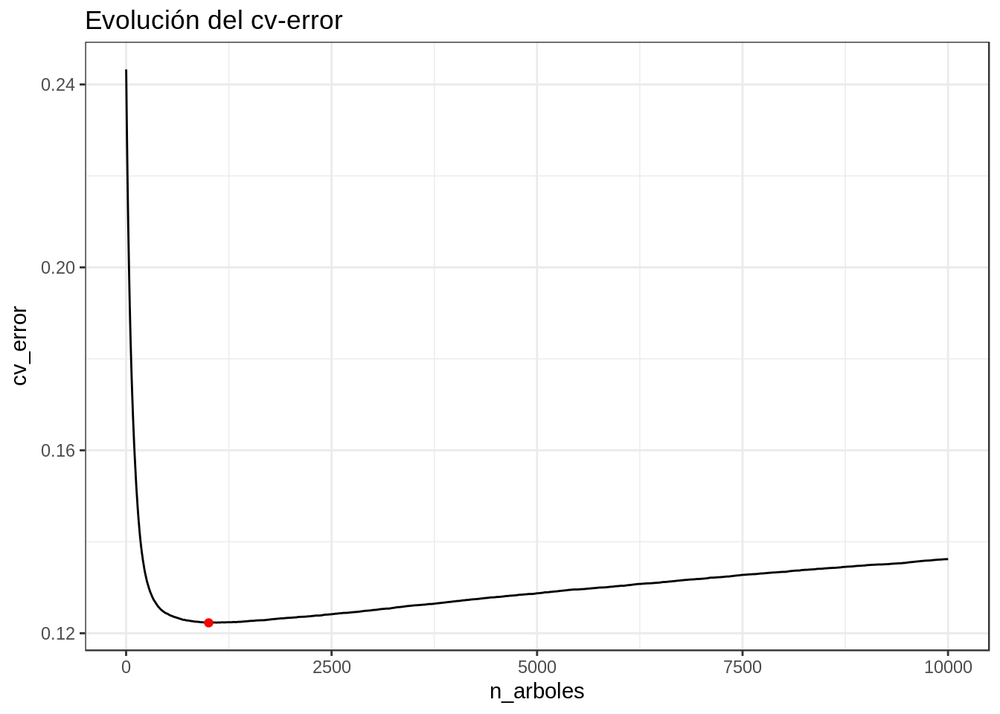

6 Modelos
6.1 Modelo de regresión logistica (con las variables representativas)
#Modelo de regresión logistica a aplicar sobre el grupo train establecido
summary(train.data)## CASE_STATE AGE SEX PERSON_TYPE
## California : 6903 Min. : 0.00 Male :45425 Driver:39260
## Texas : 6370 1st Qu.:20.00 Female:23192 Other :29355
## Florida : 5301 Median :32.00 NA's : 2
## Georgia : 2795 Mean :35.52
## New_York : 2576 3rd Qu.:48.00
## North_Carolina: 2516 Max. :97.00
## (Other) :42156
## SEATING_POSITION RESTRAINT_SYSTEM.USE AIR_BAG_AVAILABILITY.DEPLOYMENT
## FL :39265 No :28585 NAv :40188
## FR :12858 Yes :29992 D_F :10564
## S_T : 9074 Other: 4980 Av_nD : 6510
## NMot : 4412 NA's : 5060 A_U : 5190
## CA : 1341 NM : 4412
## (Other): 873 (Other): 267
## NA's : 794 NA's : 1486
## EJECTION EJECTION_PATH EXTRICATION
## Not_Ejected :59480 NoAp :59481 Not_Extricated:61116
## Totally_Ejected : 7215 SideW : 1030 Extricated : 6907
## Partially_Ejected: 1537 SideD : 488 NA's : 594
## NA's : 385 Other : 273
## BackW : 229
## (Other): 373
## NA's : 6743
## NON_MOTORIST_LOCATION ALCOHOL_TEST_RESULT1 DRUG_TEST_RESULTS
## NoAp:64205 Negative_alcohol:13743 Negd:43308
## NI : 3457 Positive_alcohol: 8347 Posd:20743
## I : 920 NA's :46527 NA's: 4566
## NA's: 35
##
##
##
## TAKEN_TO_HOSPITAL factorC HISPANIC_ORIGIN
## Yes :36135 NoAp :65619 Non-Hispanic:15214
## No :31515 RelatedFactor: 217 Hisp : 1364
## NA's: 967 NA's : 2781 NA's :52039
##
##
##
##
## RACE INJURY_SEVERITY
## NoAp :39328 Died :29295
## W :13639 Survived:39322
## B : 2348
## Other: 600
## NA's :12702
##
## modelo.logistico.fars = glm(INJURY_SEVERITY ~ AGE + CASE_STATE + SEX + PERSON_TYPE + SEATING_POSITION + RESTRAINT_SYSTEM.USE + AIR_BAG_AVAILABILITY.DEPLOYMENT + EJECTION + EJECTION_PATH + EXTRICATION + NON_MOTORIST_LOCATION + DRUG_TEST_RESULTS + TAKEN_TO_HOSPITAL + ALCOHOL_TEST_RESULT1 + factorC , family = "binomial", data = train.data)
summary(modelo.logistico.fars)##
## Call:
## glm(formula = INJURY_SEVERITY ~ AGE + CASE_STATE + SEX + PERSON_TYPE +
## SEATING_POSITION + RESTRAINT_SYSTEM.USE + AIR_BAG_AVAILABILITY.DEPLOYMENT +
## EJECTION + EJECTION_PATH + EXTRICATION + NON_MOTORIST_LOCATION +
## DRUG_TEST_RESULTS + TAKEN_TO_HOSPITAL + ALCOHOL_TEST_RESULT1 +
## factorC, family = "binomial", data = train.data)
##
## Deviance Residuals:
## Min 1Q Median 3Q Max
## -2.7478 -0.5791 -0.2070 0.5187 3.3804
##
## Coefficients: (3 not defined because of singularities)
## Estimate Std. Error z value
## (Intercept) 2.119e+00 3.247e-01 6.527
## AGE -2.708e-02 1.439e-03 -18.815
## CASE_STATEAlaska 4.732e-01 6.088e-01 0.777
## CASE_STATEArizona -1.982e+00 4.290e-01 -4.620
## CASE_STATEArkansas -8.620e-01 3.485e-01 -2.474
## CASE_STATECalifornia -1.171e+00 3.232e-01 -3.623
## CASE_STATEColorado -8.055e-01 3.433e-01 -2.346
## CASE_STATEConnecticut -5.268e-01 4.021e-01 -1.310
## CASE_STATEDelaware -3.285e-01 4.116e-01 -0.798
## CASE_STATEDistrict_of_Columbia 1.785e+01 1.683e+03 0.011
## CASE_STATEFlorida -6.303e-01 3.281e-01 -1.921
## CASE_STATEGeorgia 9.031e-01 3.284e-01 2.750
## CASE_STATEHawaii -5.983e-01 5.061e-01 -1.182
## CASE_STATEIdaho -2.783e-02 4.356e-01 -0.064
## CASE_STATEIllinois 1.533e-01 3.358e-01 0.456
## CASE_STATEIndiana 5.968e-01 3.468e-01 1.721
## CASE_STATEIowa -6.346e-01 3.832e-01 -1.656
## CASE_STATEKansas 3.019e-02 3.813e-01 0.079
## CASE_STATEKentucky 3.616e-01 3.430e-01 1.054
## CASE_STATELouisiana -1.289e-01 3.365e-01 -0.383
## CASE_STATEMaine -7.914e-02 3.827e-01 -0.207
## CASE_STATEMaryland -1.537e+00 3.671e-01 -4.186
## CASE_STATEMassachusetts -1.231e+00 5.944e-01 -2.070
## CASE_STATEMichigan -1.083e+00 3.309e-01 -3.274
## CASE_STATEMinnesota -3.574e-01 3.428e-01 -1.042
## CASE_STATEMississippi -1.321e+00 3.361e-01 -3.929
## CASE_STATEMissouri -2.187e+00 3.607e-01 -6.063
## CASE_STATEMontana -2.038e-01 4.869e-01 -0.419
## CASE_STATENebraska -2.006e-02 3.827e-01 -0.052
## CASE_STATENevada 1.251e+00 3.795e-01 3.297
## CASE_STATENew_Hampshire -5.876e-02 4.215e-01 -0.139
## CASE_STATENew_Jersey -4.621e-01 3.440e-01 -1.343
## CASE_STATENew_Mexico -2.240e+00 4.254e-01 -5.264
## CASE_STATENew_York -2.495e+00 4.061e-01 -6.144
## CASE_STATENorth_Carolina -3.878e+00 5.015e-01 -7.734
## CASE_STATENorth_Dakota -9.931e-01 5.167e-01 -1.922
## CASE_STATEOhio 7.657e-03 3.364e-01 0.023
## CASE_STATEOklahoma -3.619e+00 4.967e-01 -7.285
## CASE_STATEOregon -5.825e-01 3.479e-01 -1.674
## CASE_STATEPennsylvania -9.576e-01 3.575e-01 -2.678
## CASE_STATERhode_Island -9.255e-01 6.297e-01 -1.470
## CASE_STATESouth_Carolina -2.789e+00 4.767e-01 -5.851
## CASE_STATESouth_Dakota -5.363e-01 4.131e-01 -1.298
## CASE_STATETennessee 7.083e-01 3.455e-01 2.050
## CASE_STATETexas -1.169e+00 3.703e-01 -3.157
## CASE_STATEUtah 1.517e-01 4.058e-01 0.374
## CASE_STATEVermont 4.450e-01 5.006e-01 0.889
## CASE_STATEVirginia -4.747e+00 7.853e-01 -6.045
## CASE_STATEWashington -1.493e+00 3.753e-01 -3.978
## CASE_STATEWest_Virginia -1.957e-01 3.784e-01 -0.517
## CASE_STATEWisconsin -1.100e+00 3.460e-01 -3.179
## CASE_STATEWyoming -2.882e-01 4.718e-01 -0.611
## SEXFemale -5.890e-01 5.906e-02 -9.972
## PERSON_TYPEOther 1.257e+01 2.400e+03 0.005
## SEATING_POSITIONFR -1.502e+01 2.400e+03 -0.006
## SEATING_POSITIONNMot -2.747e+01 2.403e+03 -0.011
## SEATING_POSITIONS_T -1.486e+01 2.400e+03 -0.006
## SEATING_POSITIONCA -2.734e+01 2.416e+03 -0.011
## SEATING_POSITIONFM -1.287e+01 2.400e+03 -0.005
## SEATING_POSITIONOther -1.450e+01 2.400e+03 -0.006
## RESTRAINT_SYSTEM.USEYes 1.723e+00 6.007e-02 28.688
## RESTRAINT_SYSTEM.USEOther -5.586e-01 9.830e-02 -5.682
## AIR_BAG_AVAILABILITY.DEPLOYMENTD_F -1.816e-01 6.532e-02 -2.779
## AIR_BAG_AVAILABILITY.DEPLOYMENTAv_nD 2.690e-01 8.920e-02 3.016
## AIR_BAG_AVAILABILITY.DEPLOYMENTA_U 1.953e-01 9.853e-02 1.983
## AIR_BAG_AVAILABILITY.DEPLOYMENTNM NA NA NA
## AIR_BAG_AVAILABILITY.DEPLOYMENTDA_MD -5.000e-01 5.296e-01 -0.944
## AIR_BAG_AVAILABILITY.DEPLOYMENTOthers 3.910e-01 4.739e-01 0.825
## EJECTIONTotally_Ejected -1.916e+00 1.207e+00 -1.588
## EJECTIONPartially_Ejected -2.799e+00 1.275e+00 -2.196
## EJECTION_PATHSideW -2.508e-01 1.232e+00 -0.204
## EJECTION_PATHSideD 4.697e-01 1.235e+00 0.380
## EJECTION_PATHOther 1.193e-02 1.313e+00 0.009
## EJECTION_PATHBackW 4.429e-02 1.307e+00 0.034
## EJECTION_PATHWind 1.317e+00 1.277e+00 1.031
## EJECTION_PATHRoof 6.844e-02 1.331e+00 0.051
## EJECTION_PATHBackD 1.977e+00 1.475e+00 1.340
## EJECTION_PATHRoofC NA NA NA
## EXTRICATIONExtricated -2.142e+00 7.929e-02 -27.019
## NON_MOTORIST_LOCATIONNI 1.250e+01 1.317e+02 0.095
## NON_MOTORIST_LOCATIONI NA NA NA
## DRUG_TEST_RESULTSPosd -1.287e+00 6.169e-02 -20.865
## TAKEN_TO_HOSPITALNo -1.017e+00 5.054e-02 -20.122
## ALCOHOL_TEST_RESULT1Positive_alcohol -2.325e-01 5.649e-02 -4.115
## factorCRelatedFactor -1.375e+00 1.094e+00 -1.257
## Pr(>|z|)
## (Intercept) 6.69e-11 ***
## AGE < 2e-16 ***
## CASE_STATEAlaska 0.436995
## CASE_STATEArizona 3.85e-06 ***
## CASE_STATEArkansas 0.013374 *
## CASE_STATECalifornia 0.000291 ***
## CASE_STATEColorado 0.018974 *
## CASE_STATEConnecticut 0.190199
## CASE_STATEDelaware 0.424855
## CASE_STATEDistrict_of_Columbia 0.991537
## CASE_STATEFlorida 0.054743 .
## CASE_STATEGeorgia 0.005965 **
## CASE_STATEHawaii 0.237175
## CASE_STATEIdaho 0.949059
## CASE_STATEIllinois 0.648124
## CASE_STATEIndiana 0.085281 .
## CASE_STATEIowa 0.097698 .
## CASE_STATEKansas 0.936890
## CASE_STATEKentucky 0.291847
## CASE_STATELouisiana 0.701654
## CASE_STATEMaine 0.836155
## CASE_STATEMaryland 2.84e-05 ***
## CASE_STATEMassachusetts 0.038444 *
## CASE_STATEMichigan 0.001061 **
## CASE_STATEMinnesota 0.297196
## CASE_STATEMississippi 8.52e-05 ***
## CASE_STATEMissouri 1.34e-09 ***
## CASE_STATEMontana 0.675478
## CASE_STATENebraska 0.958196
## CASE_STATENevada 0.000976 ***
## CASE_STATENew_Hampshire 0.889108
## CASE_STATENew_Jersey 0.179155
## CASE_STATENew_Mexico 1.41e-07 ***
## CASE_STATENew_York 8.04e-10 ***
## CASE_STATENorth_Carolina 1.04e-14 ***
## CASE_STATENorth_Dakota 0.054606 .
## CASE_STATEOhio 0.981839
## CASE_STATEOklahoma 3.22e-13 ***
## CASE_STATEOregon 0.094046 .
## CASE_STATEPennsylvania 0.007396 **
## CASE_STATERhode_Island 0.141644
## CASE_STATESouth_Carolina 4.88e-09 ***
## CASE_STATESouth_Dakota 0.194265
## CASE_STATETennessee 0.040364 *
## CASE_STATETexas 0.001596 **
## CASE_STATEUtah 0.708477
## CASE_STATEVermont 0.373950
## CASE_STATEVirginia 1.50e-09 ***
## CASE_STATEWashington 6.95e-05 ***
## CASE_STATEWest_Virginia 0.605067
## CASE_STATEWisconsin 0.001478 **
## CASE_STATEWyoming 0.541231
## SEXFemale < 2e-16 ***
## PERSON_TYPEOther 0.995820
## SEATING_POSITIONFR 0.995005
## SEATING_POSITIONNMot 0.990879
## SEATING_POSITIONS_T 0.995058
## SEATING_POSITIONCA 0.990973
## SEATING_POSITIONFM 0.995720
## SEATING_POSITIONOther 0.995178
## RESTRAINT_SYSTEM.USEYes < 2e-16 ***
## RESTRAINT_SYSTEM.USEOther 1.33e-08 ***
## AIR_BAG_AVAILABILITY.DEPLOYMENTD_F 0.005445 **
## AIR_BAG_AVAILABILITY.DEPLOYMENTAv_nD 0.002561 **
## AIR_BAG_AVAILABILITY.DEPLOYMENTA_U 0.047421 *
## AIR_BAG_AVAILABILITY.DEPLOYMENTNM NA
## AIR_BAG_AVAILABILITY.DEPLOYMENTDA_MD 0.345118
## AIR_BAG_AVAILABILITY.DEPLOYMENTOthers 0.409320
## EJECTIONTotally_Ejected 0.112365
## EJECTIONPartially_Ejected 0.028128 *
## EJECTION_PATHSideW 0.838740
## EJECTION_PATHSideD 0.703713
## EJECTION_PATHOther 0.992755
## EJECTION_PATHBackW 0.972960
## EJECTION_PATHWind 0.302427
## EJECTION_PATHRoof 0.958992
## EJECTION_PATHBackD 0.180149
## EJECTION_PATHRoofC NA
## EXTRICATIONExtricated < 2e-16 ***
## NON_MOTORIST_LOCATIONNI 0.924424
## NON_MOTORIST_LOCATIONI NA
## DRUG_TEST_RESULTSPosd < 2e-16 ***
## TAKEN_TO_HOSPITALNo < 2e-16 ***
## ALCOHOL_TEST_RESULT1Positive_alcohol 3.88e-05 ***
## factorCRelatedFactor 0.208820
## ---
## Signif. codes: 0 '***' 0.001 '**' 0.01 '*' 0.05 '.' 0.1 ' ' 1
##
## (Dispersion parameter for binomial family taken to be 1)
##
## Null deviance: 17516 on 14509 degrees of freedom
## Residual deviance: 10742 on 14428 degrees of freedom
## (54107 observations deleted due to missingness)
## AIC: 10906
##
## Number of Fisher Scoring iterations: 15# Se vuelve a aplicar la regresión logistica sólo con las variables que salen representativas después de glm
modelo.logistico.def.fars = glm(INJURY_SEVERITY ~ AGE + CASE_STATE + SEX + RESTRAINT_SYSTEM.USE + AIR_BAG_AVAILABILITY.DEPLOYMENT + EJECTION + EXTRICATION + DRUG_TEST_RESULTS + TAKEN_TO_HOSPITAL, family = "binomial", data = train.data, na.action=na.omit)
summary(modelo.logistico.def.fars)##
## Call:
## glm(formula = INJURY_SEVERITY ~ AGE + CASE_STATE + SEX + RESTRAINT_SYSTEM.USE +
## AIR_BAG_AVAILABILITY.DEPLOYMENT + EJECTION + EXTRICATION +
## DRUG_TEST_RESULTS + TAKEN_TO_HOSPITAL, family = "binomial",
## data = train.data, na.action = na.omit)
##
## Deviance Residuals:
## Min 1Q Median 3Q Max
## -3.1145 -0.6056 0.3318 0.6601 3.1986
##
## Coefficients:
## Estimate Std. Error z value
## (Intercept) 2.1214649 0.0931068 22.785
## AGE -0.0296020 0.0005932 -49.901
## CASE_STATEAlaska 0.6212088 0.2756163 2.254
## CASE_STATEArizona 0.8388077 0.1277045 6.568
## CASE_STATEArkansas -0.3103240 0.1217950 -2.548
## CASE_STATECalifornia 0.4119145 0.0971866 4.238
## CASE_STATEColorado 0.4347070 0.1188270 3.658
## CASE_STATEConnecticut 0.7027033 0.1733889 4.053
## CASE_STATEDelaware 0.2031194 0.1917031 1.060
## CASE_STATEDistrict_of_Columbia 0.5775369 0.3527993 1.637
## CASE_STATEFlorida 0.9543395 0.0976993 9.768
## CASE_STATEGeorgia 1.4332043 0.1065111 13.456
## CASE_STATEHawaii 0.6597847 0.2640522 2.499
## CASE_STATEIdaho 1.2093044 0.1701828 7.106
## CASE_STATEIllinois 1.1075315 0.1089895 10.162
## CASE_STATEIndiana 0.5303134 0.1254212 4.228
## CASE_STATEIowa -0.3328286 0.1375048 -2.420
## CASE_STATEKansas 0.1016459 0.1347083 0.755
## CASE_STATEKentucky 0.3880159 0.1147043 3.383
## CASE_STATELouisiana 0.0803473 0.1141243 0.704
## CASE_STATEMaine 0.0568611 0.1677423 0.339
## CASE_STATEMaryland 0.7928827 0.1269788 6.244
## CASE_STATEMassachusetts 1.1558725 0.1653620 6.990
## CASE_STATEMichigan -0.0485314 0.1061284 -0.457
## CASE_STATEMinnesota 0.0910892 0.1327901 0.686
## CASE_STATEMississippi -0.7919247 0.1133316 -6.988
## CASE_STATEMissouri 0.1607464 0.1110810 1.447
## CASE_STATEMontana 1.0534942 0.1841557 5.721
## CASE_STATENebraska 0.0006560 0.1655233 0.004
## CASE_STATENevada 1.2446679 0.1473938 8.445
## CASE_STATENew_Hampshire 0.6115956 0.2225504 2.748
## CASE_STATENew_Jersey 0.4839710 0.1238171 3.909
## CASE_STATENew_Mexico 0.0221124 0.1378374 0.160
## CASE_STATENew_York 1.0749470 0.1133202 9.486
## CASE_STATENorth_Carolina 0.4609611 0.1093645 4.215
## CASE_STATENorth_Dakota 0.4423264 0.2478819 1.784
## CASE_STATEOhio 1.3221256 0.1099788 12.022
## CASE_STATEOklahoma -0.1620729 0.1157445 -1.400
## CASE_STATEOregon 0.0033503 0.1287934 0.026
## CASE_STATEPennsylvania 0.9231873 0.1128143 8.183
## CASE_STATERhode_Island 0.8418723 0.2953306 2.851
## CASE_STATESouth_Carolina 1.3507207 0.1198147 11.273
## CASE_STATESouth_Dakota 0.0308364 0.1802146 0.171
## CASE_STATETennessee 1.1294282 0.1097895 10.287
## CASE_STATETexas -0.3263849 0.0953416 -3.423
## CASE_STATEUtah 0.4123654 0.1585232 2.601
## CASE_STATEVermont 2.0007292 0.2438376 8.205
## CASE_STATEVirginia 0.3535425 0.1217617 2.904
## CASE_STATEWashington 0.4133542 0.1302564 3.173
## CASE_STATEWest_Virginia 1.1391289 0.1523750 7.476
## CASE_STATEWisconsin 0.0379290 0.1185994 0.320
## CASE_STATEWyoming 0.3523322 0.2008650 1.754
## SEXFemale -0.0892812 0.0241210 -3.701
## RESTRAINT_SYSTEM.USEYes 1.4342330 0.0284508 50.411
## RESTRAINT_SYSTEM.USEOther -0.1739410 0.0446332 -3.897
## AIR_BAG_AVAILABILITY.DEPLOYMENTD_F -0.3389007 0.0332114 -10.204
## AIR_BAG_AVAILABILITY.DEPLOYMENTAv_nD 0.1118306 0.0414164 2.700
## AIR_BAG_AVAILABILITY.DEPLOYMENTA_U 0.2115400 0.0479123 4.415
## AIR_BAG_AVAILABILITY.DEPLOYMENTNM -2.5790090 0.0615236 -41.919
## AIR_BAG_AVAILABILITY.DEPLOYMENTDA_MD -0.7336461 0.2970835 -2.469
## AIR_BAG_AVAILABILITY.DEPLOYMENTOthers -0.2424436 0.2313054 -1.048
## EJECTIONTotally_Ejected -1.5997774 0.0392404 -40.769
## EJECTIONPartially_Ejected -2.3352207 0.0990567 -23.575
## EXTRICATIONExtricated -2.0156044 0.0399915 -50.401
## DRUG_TEST_RESULTSPosd -2.2251864 0.0287569 -77.379
## TAKEN_TO_HOSPITALNo -0.9571705 0.0238832 -40.077
## Pr(>|z|)
## (Intercept) < 2e-16 ***
## AGE < 2e-16 ***
## CASE_STATEAlaska 0.024203 *
## CASE_STATEArizona 5.09e-11 ***
## CASE_STATEArkansas 0.010837 *
## CASE_STATECalifornia 2.25e-05 ***
## CASE_STATEColorado 0.000254 ***
## CASE_STATEConnecticut 5.06e-05 ***
## CASE_STATEDelaware 0.289349
## CASE_STATEDistrict_of_Columbia 0.101628
## CASE_STATEFlorida < 2e-16 ***
## CASE_STATEGeorgia < 2e-16 ***
## CASE_STATEHawaii 0.012465 *
## CASE_STATEIdaho 1.20e-12 ***
## CASE_STATEIllinois < 2e-16 ***
## CASE_STATEIndiana 2.36e-05 ***
## CASE_STATEIowa 0.015500 *
## CASE_STATEKansas 0.450511
## CASE_STATEKentucky 0.000718 ***
## CASE_STATELouisiana 0.481412
## CASE_STATEMaine 0.734625
## CASE_STATEMaryland 4.26e-10 ***
## CASE_STATEMassachusetts 2.75e-12 ***
## CASE_STATEMichigan 0.647463
## CASE_STATEMinnesota 0.492736
## CASE_STATEMississippi 2.79e-12 ***
## CASE_STATEMissouri 0.147866
## CASE_STATEMontana 1.06e-08 ***
## CASE_STATENebraska 0.996838
## CASE_STATENevada < 2e-16 ***
## CASE_STATENew_Hampshire 0.005994 **
## CASE_STATENew_Jersey 9.28e-05 ***
## CASE_STATENew_Mexico 0.872547
## CASE_STATENew_York < 2e-16 ***
## CASE_STATENorth_Carolina 2.50e-05 ***
## CASE_STATENorth_Dakota 0.074355 .
## CASE_STATEOhio < 2e-16 ***
## CASE_STATEOklahoma 0.161434
## CASE_STATEOregon 0.979247
## CASE_STATEPennsylvania 2.76e-16 ***
## CASE_STATERhode_Island 0.004364 **
## CASE_STATESouth_Carolina < 2e-16 ***
## CASE_STATESouth_Dakota 0.864138
## CASE_STATETennessee < 2e-16 ***
## CASE_STATETexas 0.000619 ***
## CASE_STATEUtah 0.009287 **
## CASE_STATEVermont 2.30e-16 ***
## CASE_STATEVirginia 0.003689 **
## CASE_STATEWashington 0.001507 **
## CASE_STATEWest_Virginia 7.67e-14 ***
## CASE_STATEWisconsin 0.749114
## CASE_STATEWyoming 0.079418 .
## SEXFemale 0.000214 ***
## RESTRAINT_SYSTEM.USEYes < 2e-16 ***
## RESTRAINT_SYSTEM.USEOther 9.73e-05 ***
## AIR_BAG_AVAILABILITY.DEPLOYMENTD_F < 2e-16 ***
## AIR_BAG_AVAILABILITY.DEPLOYMENTAv_nD 0.006931 **
## AIR_BAG_AVAILABILITY.DEPLOYMENTA_U 1.01e-05 ***
## AIR_BAG_AVAILABILITY.DEPLOYMENTNM < 2e-16 ***
## AIR_BAG_AVAILABILITY.DEPLOYMENTDA_MD 0.013530 *
## AIR_BAG_AVAILABILITY.DEPLOYMENTOthers 0.294568
## EJECTIONTotally_Ejected < 2e-16 ***
## EJECTIONPartially_Ejected < 2e-16 ***
## EXTRICATIONExtricated < 2e-16 ***
## DRUG_TEST_RESULTSPosd < 2e-16 ***
## TAKEN_TO_HOSPITALNo < 2e-16 ***
## ---
## Signif. codes: 0 '***' 0.001 '**' 0.01 '*' 0.05 '.' 0.1 ' ' 1
##
## (Dispersion parameter for binomial family taken to be 1)
##
## Null deviance: 77039 on 56814 degrees of freedom
## Residual deviance: 49088 on 56749 degrees of freedom
## (11802 observations deleted due to missingness)
## AIC: 49220
##
## Number of Fisher Scoring iterations: 5# Por tanto, las variables representativas serian: Edad, Estado, Sexo, Sistema de retención, airbag, ejection, extrincation, resultados_drogas, resultado_alcohol, tomo_hospital
# Creamos un nuevo dataframe con las variables que corresponden
train.data.reduced = train.data[,c("AGE","SEX", "RESTRAINT_SYSTEM.USE", "AIR_BAG_AVAILABILITY.DEPLOYMENT", "EJECTION", "EXTRICATION", "DRUG_TEST_RESULTS", "TAKEN_TO_HOSPITAL", "INJURY_SEVERITY")]
# Para la evaluación del modelo se calcula la probabilidad de INJURY_SEVERITY = True en cada uno de los sujetos, tanto en train como en test
predicho.modelo.fars.LR = predict(modelo.logistico.def.fars, train.data, type = "response")
a = table(train.data$INJURY_SEVERITY, cut(predicho.modelo.fars.LR, c(-0.1,0.05, 0.1, 0.25, 1)))
a##
## (-0.1,0.05] (0.05,0.1] (0.1,0.25] (0.25,1]
## Died 3999 2627 5048 11799
## Survived 82 208 938 32114a[2, ]/(a[2, ] + a[1, ])## (-0.1,0.05] (0.05,0.1] (0.1,0.25] (0.25,1]
## 0.02009311 0.07336861 0.15669896 0.73130963z=table(predicho.modelo.fars.LR>0.4,train.data$INJURY_SEVERITY)
z##
## Died Survived
## FALSE 14987 2761
## TRUE 8486 30581precision <- z[2,2]/(z[2,1]+z[2,2])
recall <- z[2,2]/(z[1,2]+z[2,2])
f_score.glm <- (2*precision*recall)/(precision+recall)
f_score.glm## [1] 0.844674Comparativa de resultados con el conjunto de test
# Comparativa de los resultados de test
predicho.modelo.fars.test.LR = predict(modelo.logistico.def.fars, test.data, type = "response")
b = table(test.data$INJURY_SEVERITY, cut(predicho.modelo.fars.test.LR, c(-0.1,0.05, 0.1, 0.25, 1)))
b##
## (-0.1,0.05] (0.05,0.1] (0.1,0.25] (0.25,1]
## Died 1760 1103 2150 5088
## Survived 31 90 427 13653b[2, ]/(b[2, ] + b[1, ])## (-0.1,0.05] (0.05,0.1] (0.1,0.25] (0.25,1]
## 0.01730877 0.07544007 0.16569655 0.72850968z=table(predicho.modelo.fars.test.LR>0.4,test.data$INJURY_SEVERITY)
z##
## Died Survived
## FALSE 6322 1243
## TRUE 3779 12958precision <- z[2,2]/(z[2,1]+z[2,2])
recall <- z[2,2]/(z[1,2]+z[2,2])
f_score <- (2*precision*recall)/(precision+recall)
f_score## [1] 0.83767546.1.1 Curva ROC
Mediante la curva ROC comprobaremos
library(ROCR)
ROCRpred = prediction(predicho.modelo.fars.LR, train.data$INJURY_SEVERITY)
ROCRperf = performance(ROCRpred, 'tpr', 'fpr')
#windows()
ROC.glm = plot(ROCRperf, colorize = TRUE, text.adj = c(-0.2, 1.7))ROC.glm## NULL#dev.off()perf <- performance(ROCRpred,"auc")
auc <- as.numeric(perf@y.values)
auc## [1] 0.8730798Si comprobamos el área debajo de la curva, podemos ver que es del 0,87.
6.1.2 Regresión logítica para cada uno de los estados
GenLm = function(x) {
y=df2[which(df2$CASE_STATE ==x),]
if (!x %in% c("District_of_Columbia", "Virginia","Wyoming")){
print(x)
summary(glm(INJURY_SEVERITY ~ AGE + SEX + RESTRAINT_SYSTEM.USE + AIR_BAG_AVAILABILITY.DEPLOYMENT + EJECTION + EXTRICATION + DRUG_TEST_RESULTS + TAKEN_TO_HOSPITAL, family = "binomial", data = y))
}else{
return(FALSE)
}
}
csList = data.frame( Scase_state = as.character(unique( df2$CASE_STATE ) ) )
apply(csList,1, GenLm)## Scase_state
## "Alabama"
## Scase_state
## "Alaska"
## Scase_state
## "Arizona"
## Scase_state
## "Arkansas"
## Scase_state
## "California"
## Scase_state
## "Colorado"
## Scase_state
## "Connecticut"
## Scase_state
## "Delaware"
## Scase_state
## "Florida"
## Scase_state
## "Georgia"
## Scase_state
## "Hawaii"
## Scase_state
## "Idaho"
## Scase_state
## "Illinois"
## Scase_state
## "Indiana"
## Scase_state
## "Iowa"
## Scase_state
## "Kansas"
## Scase_state
## "Kentucky"
## Scase_state
## "Louisiana"
## Scase_state
## "Maine"
## Scase_state
## "Maryland"
## Scase_state
## "Massachusetts"
## Scase_state
## "Michigan"
## Scase_state
## "Minnesota"
## Scase_state
## "Mississippi"
## Scase_state
## "Missouri"
## Scase_state
## "Montana"
## Scase_state
## "Nebraska"
## Scase_state
## "Nevada"
## Scase_state
## "New_Hampshire"
## Scase_state
## "New_Jersey"
## Scase_state
## "New_Mexico"
## Scase_state
## "New_York"
## Scase_state
## "North_Carolina"
## Scase_state
## "North_Dakota"
## Scase_state
## "Ohio"
## Scase_state
## "Oklahoma"
## Scase_state
## "Oregon"
## Scase_state
## "Pennsylvania"
## Scase_state
## "Rhode_Island"
## Scase_state
## "South_Carolina"
## Scase_state
## "South_Dakota"
## Scase_state
## "Tennessee"
## Scase_state
## "Texas"
## Scase_state
## "Utah"## Warning: glm.fit: fitted probabilities numerically 0 or 1 occurred## Scase_state
## "Vermont"
## Scase_state
## "Washington"
## Scase_state
## "West_Virginia"
## Scase_state
## "Wisconsin"## [[1]]
##
## Call:
## glm(formula = INJURY_SEVERITY ~ AGE + SEX + RESTRAINT_SYSTEM.USE +
## AIR_BAG_AVAILABILITY.DEPLOYMENT + EJECTION + EXTRICATION +
## DRUG_TEST_RESULTS + TAKEN_TO_HOSPITAL, family = "binomial",
## data = y)
##
## Deviance Residuals:
## Min 1Q Median 3Q Max
## -2.5583 -0.3758 0.4022 0.6881 2.6397
##
## Coefficients:
## Estimate Std. Error z value Pr(>|z|)
## (Intercept) 2.886741 0.238810 12.088 < 2e-16
## AGE -0.034409 0.004022 -8.556 < 2e-16
## SEXFemale -0.062790 0.165119 -0.380 0.703744
## RESTRAINT_SYSTEM.USEYes 0.931990 0.191678 4.862 1.16e-06
## RESTRAINT_SYSTEM.USEOther -1.399638 0.362537 -3.861 0.000113
## AIR_BAG_AVAILABILITY.DEPLOYMENTD_F -0.153284 0.215678 -0.711 0.477266
## AIR_BAG_AVAILABILITY.DEPLOYMENTAv_nD -0.048537 0.219791 -0.221 0.825221
## AIR_BAG_AVAILABILITY.DEPLOYMENTA_U -0.291645 0.628544 -0.464 0.642647
## AIR_BAG_AVAILABILITY.DEPLOYMENTNM -2.888573 0.440571 -6.556 5.51e-11
## EJECTIONTotally_Ejected -1.234967 0.265267 -4.656 3.23e-06
## EJECTIONPartially_Ejected -2.211254 0.468892 -4.716 2.41e-06
## EXTRICATIONExtricated -2.062877 0.286304 -7.205 5.80e-13
## DRUG_TEST_RESULTSPosd -4.187678 0.756376 -5.537 3.09e-08
## TAKEN_TO_HOSPITALNo -1.466653 0.166696 -8.798 < 2e-16
##
## (Intercept) ***
## AGE ***
## SEXFemale
## RESTRAINT_SYSTEM.USEYes ***
## RESTRAINT_SYSTEM.USEOther ***
## AIR_BAG_AVAILABILITY.DEPLOYMENTD_F
## AIR_BAG_AVAILABILITY.DEPLOYMENTAv_nD
## AIR_BAG_AVAILABILITY.DEPLOYMENTA_U
## AIR_BAG_AVAILABILITY.DEPLOYMENTNM ***
## EJECTIONTotally_Ejected ***
## EJECTIONPartially_Ejected ***
## EXTRICATIONExtricated ***
## DRUG_TEST_RESULTSPosd ***
## TAKEN_TO_HOSPITALNo ***
## ---
## Signif. codes: 0 '***' 0.001 '**' 0.01 '*' 0.05 '.' 0.1 ' ' 1
##
## (Dispersion parameter for binomial family taken to be 1)
##
## Null deviance: 1594.6 on 1281 degrees of freedom
## Residual deviance: 1092.5 on 1268 degrees of freedom
## (815 observations deleted due to missingness)
## AIC: 1120.5
##
## Number of Fisher Scoring iterations: 6
##
##
## [[2]]
##
## Call:
## glm(formula = INJURY_SEVERITY ~ AGE + SEX + RESTRAINT_SYSTEM.USE +
## AIR_BAG_AVAILABILITY.DEPLOYMENT + EJECTION + EXTRICATION +
## DRUG_TEST_RESULTS + TAKEN_TO_HOSPITAL, family = "binomial",
## data = y)
##
## Deviance Residuals:
## Min 1Q Median 3Q Max
## -2.1107 -0.5043 0.4375 0.7342 1.9963
##
## Coefficients:
## Estimate Std. Error z value
## (Intercept) 2.39598 0.63164 3.793
## AGE -0.01837 0.01249 -1.471
## SEXFemale 0.38081 0.46774 0.814
## RESTRAINT_SYSTEM.USEYes 0.58822 0.51511 1.142
## RESTRAINT_SYSTEM.USEOther -0.57871 1.03113 -0.561
## AIR_BAG_AVAILABILITY.DEPLOYMENTD_F -0.50320 0.63363 -0.794
## AIR_BAG_AVAILABILITY.DEPLOYMENTAv_nD -0.59458 1.51420 -0.393
## AIR_BAG_AVAILABILITY.DEPLOYMENTA_U -0.65701 0.67418 -0.975
## AIR_BAG_AVAILABILITY.DEPLOYMENTNM -18.40145 1352.48247 -0.014
## AIR_BAG_AVAILABILITY.DEPLOYMENTOthers 14.64200 3956.18037 0.004
## EJECTIONTotally_Ejected -1.96431 0.67254 -2.921
## EJECTIONPartially_Ejected -2.19652 1.19791 -1.834
## EXTRICATIONExtricated -1.37578 0.56847 -2.420
## DRUG_TEST_RESULTSPosd -1.31528 0.47565 -2.765
## TAKEN_TO_HOSPITALNo -0.99442 0.44775 -2.221
## Pr(>|z|)
## (Intercept) 0.000149 ***
## AGE 0.141222
## SEXFemale 0.415564
## RESTRAINT_SYSTEM.USEYes 0.253480
## RESTRAINT_SYSTEM.USEOther 0.574633
## AIR_BAG_AVAILABILITY.DEPLOYMENTD_F 0.427105
## AIR_BAG_AVAILABILITY.DEPLOYMENTAv_nD 0.694565
## AIR_BAG_AVAILABILITY.DEPLOYMENTA_U 0.329796
## AIR_BAG_AVAILABILITY.DEPLOYMENTNM 0.989145
## AIR_BAG_AVAILABILITY.DEPLOYMENTOthers 0.997047
## EJECTIONTotally_Ejected 0.003492 **
## EJECTIONPartially_Ejected 0.066710 .
## EXTRICATIONExtricated 0.015515 *
## DRUG_TEST_RESULTSPosd 0.005688 **
## TAKEN_TO_HOSPITALNo 0.026354 *
## ---
## Signif. codes: 0 '***' 0.001 '**' 0.01 '*' 0.05 '.' 0.1 ' ' 1
##
## (Dispersion parameter for binomial family taken to be 1)
##
## Null deviance: 221.07 on 163 degrees of freedom
## Residual deviance: 147.67 on 149 degrees of freedom
## (38 observations deleted due to missingness)
## AIC: 177.67
##
## Number of Fisher Scoring iterations: 16
##
##
## [[3]]
##
## Call:
## glm(formula = INJURY_SEVERITY ~ AGE + SEX + RESTRAINT_SYSTEM.USE +
## AIR_BAG_AVAILABILITY.DEPLOYMENT + EJECTION + EXTRICATION +
## DRUG_TEST_RESULTS + TAKEN_TO_HOSPITAL, family = "binomial",
## data = y)
##
## Deviance Residuals:
## Min 1Q Median 3Q Max
## -3.0622 -0.0885 0.1293 0.2524 3.2586
##
## Coefficients:
## Estimate Std. Error z value
## (Intercept) 4.287714 0.346501 12.374
## AGE -0.045565 0.006078 -7.497
## SEXFemale 0.196881 0.238689 0.825
## RESTRAINT_SYSTEM.USEYes 2.207046 0.307177 7.185
## RESTRAINT_SYSTEM.USEOther 0.427097 0.527797 0.809
## AIR_BAG_AVAILABILITY.DEPLOYMENTD_F 0.529481 0.459188 1.153
## AIR_BAG_AVAILABILITY.DEPLOYMENTAv_nD 1.760110 1.110170 1.585
## AIR_BAG_AVAILABILITY.DEPLOYMENTA_U -0.323773 0.300441 -1.078
## AIR_BAG_AVAILABILITY.DEPLOYMENTNM -2.897590 0.413907 -7.001
## AIR_BAG_AVAILABILITY.DEPLOYMENTDA_MD 9.531809 535.411275 0.018
## AIR_BAG_AVAILABILITY.DEPLOYMENTOthers 2.683110 4.372272 0.614
## EJECTIONTotally_Ejected -2.084302 0.319190 -6.530
## EJECTIONPartially_Ejected -3.692807 0.947991 -3.895
## EXTRICATIONExtricated -3.729354 0.340205 -10.962
## DRUG_TEST_RESULTSPosd -5.253018 0.324217 -16.202
## TAKEN_TO_HOSPITALNo -0.853685 0.233574 -3.655
## Pr(>|z|)
## (Intercept) < 2e-16 ***
## AGE 6.52e-14 ***
## SEXFemale 0.409461
## RESTRAINT_SYSTEM.USEYes 6.72e-13 ***
## RESTRAINT_SYSTEM.USEOther 0.418397
## AIR_BAG_AVAILABILITY.DEPLOYMENTD_F 0.248877
## AIR_BAG_AVAILABILITY.DEPLOYMENTAv_nD 0.112866
## AIR_BAG_AVAILABILITY.DEPLOYMENTA_U 0.281185
## AIR_BAG_AVAILABILITY.DEPLOYMENTNM 2.55e-12 ***
## AIR_BAG_AVAILABILITY.DEPLOYMENTDA_MD 0.985796
## AIR_BAG_AVAILABILITY.DEPLOYMENTOthers 0.539437
## EJECTIONTotally_Ejected 6.58e-11 ***
## EJECTIONPartially_Ejected 9.80e-05 ***
## EXTRICATIONExtricated < 2e-16 ***
## DRUG_TEST_RESULTSPosd < 2e-16 ***
## TAKEN_TO_HOSPITALNo 0.000257 ***
## ---
## Signif. codes: 0 '***' 0.001 '**' 0.01 '*' 0.05 '.' 0.1 ' ' 1
##
## (Dispersion parameter for binomial family taken to be 1)
##
## Null deviance: 2204.99 on 1671 degrees of freedom
## Residual deviance: 590.85 on 1656 degrees of freedom
## (1043 observations deleted due to missingness)
## AIC: 622.85
##
## Number of Fisher Scoring iterations: 12
##
##
## [[4]]
##
## Call:
## glm(formula = INJURY_SEVERITY ~ AGE + SEX + RESTRAINT_SYSTEM.USE +
## AIR_BAG_AVAILABILITY.DEPLOYMENT + EJECTION + EXTRICATION +
## DRUG_TEST_RESULTS + TAKEN_TO_HOSPITAL, family = "binomial",
## data = y)
##
## Deviance Residuals:
## Min 1Q Median 3Q Max
## -2.7409 -0.7040 0.3773 0.7476 2.5099
##
## Coefficients:
## Estimate Std. Error z value
## (Intercept) 1.743886 0.180134 9.681
## AGE -0.030144 0.003743 -8.053
## SEXFemale 0.088638 0.150679 0.588
## RESTRAINT_SYSTEM.USEYes 2.020781 0.179872 11.235
## RESTRAINT_SYSTEM.USEOther 0.113129 0.302669 0.374
## AIR_BAG_AVAILABILITY.DEPLOYMENTD_F -0.588827 0.255626 -2.303
## AIR_BAG_AVAILABILITY.DEPLOYMENTAv_nD -0.984031 0.473904 -2.076
## AIR_BAG_AVAILABILITY.DEPLOYMENTA_U -0.232086 0.180288 -1.287
## AIR_BAG_AVAILABILITY.DEPLOYMENTNM -1.837456 0.557047 -3.299
## AIR_BAG_AVAILABILITY.DEPLOYMENTOthers -1.781009 1.333761 -1.335
## EJECTIONTotally_Ejected -1.132586 0.219275 -5.165
## EJECTIONPartially_Ejected -2.147979 0.522326 -4.112
## EXTRICATIONExtricated -2.038810 0.351698 -5.797
## DRUG_TEST_RESULTSPosd -0.911267 0.239767 -3.801
## TAKEN_TO_HOSPITALNo -1.457081 0.150935 -9.654
## Pr(>|z|)
## (Intercept) < 2e-16 ***
## AGE 8.08e-16 ***
## SEXFemale 0.556360
## RESTRAINT_SYSTEM.USEYes < 2e-16 ***
## RESTRAINT_SYSTEM.USEOther 0.708574
## AIR_BAG_AVAILABILITY.DEPLOYMENTD_F 0.021253 *
## AIR_BAG_AVAILABILITY.DEPLOYMENTAv_nD 0.037854 *
## AIR_BAG_AVAILABILITY.DEPLOYMENTA_U 0.197987
## AIR_BAG_AVAILABILITY.DEPLOYMENTNM 0.000972 ***
## AIR_BAG_AVAILABILITY.DEPLOYMENTOthers 0.181769
## EJECTIONTotally_Ejected 2.40e-07 ***
## EJECTIONPartially_Ejected 3.92e-05 ***
## EXTRICATIONExtricated 6.75e-09 ***
## DRUG_TEST_RESULTSPosd 0.000144 ***
## TAKEN_TO_HOSPITALNo < 2e-16 ***
## ---
## Signif. codes: 0 '***' 0.001 '**' 0.01 '*' 0.05 '.' 0.1 ' ' 1
##
## (Dispersion parameter for binomial family taken to be 1)
##
## Null deviance: 1770.3 on 1297 degrees of freedom
## Residual deviance: 1250.4 on 1283 degrees of freedom
## (113 observations deleted due to missingness)
## AIC: 1280.4
##
## Number of Fisher Scoring iterations: 5
##
##
## [[5]]
##
## Call:
## glm(formula = INJURY_SEVERITY ~ AGE + SEX + RESTRAINT_SYSTEM.USE +
## AIR_BAG_AVAILABILITY.DEPLOYMENT + EJECTION + EXTRICATION +
## DRUG_TEST_RESULTS + TAKEN_TO_HOSPITAL, family = "binomial",
## data = y)
##
## Deviance Residuals:
## Min 1Q Median 3Q Max
## -2.9116 -0.2442 0.2683 0.4153 2.9342
##
## Coefficients:
## Estimate Std. Error z value
## (Intercept) 3.229099 0.133012 24.277
## AGE -0.031861 0.001988 -16.025
## SEXFemale -0.185188 0.079407 -2.332
## RESTRAINT_SYSTEM.USEYes 1.058830 0.110028 9.623
## RESTRAINT_SYSTEM.USEOther -1.229787 0.164538 -7.474
## AIR_BAG_AVAILABILITY.DEPLOYMENTD_F -0.176846 0.142649 -1.240
## AIR_BAG_AVAILABILITY.DEPLOYMENTAv_nD 0.048856 0.266296 0.183
## AIR_BAG_AVAILABILITY.DEPLOYMENTA_U 0.246346 0.102824 2.396
## AIR_BAG_AVAILABILITY.DEPLOYMENTNM -2.529068 0.158169 -15.990
## AIR_BAG_AVAILABILITY.DEPLOYMENTDA_MD -9.294302 196.967718 -0.047
## AIR_BAG_AVAILABILITY.DEPLOYMENTOthers -0.271341 0.799808 -0.339
## EJECTIONTotally_Ejected -1.748493 0.141419 -12.364
## EJECTIONPartially_Ejected -2.660502 0.305721 -8.702
## EXTRICATIONExtricated -1.740987 0.174646 -9.969
## DRUG_TEST_RESULTSPosd -3.773448 0.087656 -43.048
## TAKEN_TO_HOSPITALNo -0.548546 0.079428 -6.906
## Pr(>|z|)
## (Intercept) < 2e-16 ***
## AGE < 2e-16 ***
## SEXFemale 0.0197 *
## RESTRAINT_SYSTEM.USEYes < 2e-16 ***
## RESTRAINT_SYSTEM.USEOther 7.77e-14 ***
## AIR_BAG_AVAILABILITY.DEPLOYMENTD_F 0.2151
## AIR_BAG_AVAILABILITY.DEPLOYMENTAv_nD 0.8544
## AIR_BAG_AVAILABILITY.DEPLOYMENTA_U 0.0166 *
## AIR_BAG_AVAILABILITY.DEPLOYMENTNM < 2e-16 ***
## AIR_BAG_AVAILABILITY.DEPLOYMENTDA_MD 0.9624
## AIR_BAG_AVAILABILITY.DEPLOYMENTOthers 0.7344
## EJECTIONTotally_Ejected < 2e-16 ***
## EJECTIONPartially_Ejected < 2e-16 ***
## EXTRICATIONExtricated < 2e-16 ***
## DRUG_TEST_RESULTSPosd < 2e-16 ***
## TAKEN_TO_HOSPITALNo 4.98e-12 ***
## ---
## Signif. codes: 0 '***' 0.001 '**' 0.01 '*' 0.05 '.' 0.1 ' ' 1
##
## (Dispersion parameter for binomial family taken to be 1)
##
## Null deviance: 10746.1 on 8138 degrees of freedom
## Residual deviance: 4830.9 on 8123 degrees of freedom
## (1725 observations deleted due to missingness)
## AIC: 4862.9
##
## Number of Fisher Scoring iterations: 10
##
##
## [[6]]
##
## Call:
## glm(formula = INJURY_SEVERITY ~ AGE + SEX + RESTRAINT_SYSTEM.USE +
## AIR_BAG_AVAILABILITY.DEPLOYMENT + EJECTION + EXTRICATION +
## DRUG_TEST_RESULTS + TAKEN_TO_HOSPITAL, family = "binomial",
## data = y)
##
## Deviance Residuals:
## Min 1Q Median 3Q Max
## -2.8054 -0.3106 0.2697 0.5321 2.9731
##
## Coefficients:
## Estimate Std. Error z value
## (Intercept) 2.985e+00 2.272e-01 13.140
## AGE -3.444e-02 4.222e-03 -8.157
## SEXFemale -2.145e-01 1.591e-01 -1.348
## RESTRAINT_SYSTEM.USEYes 1.102e+00 1.952e-01 5.648
## RESTRAINT_SYSTEM.USEOther 6.445e-01 2.642e-01 2.439
## AIR_BAG_AVAILABILITY.DEPLOYMENTD_F -1.796e-01 2.155e-01 -0.833
## AIR_BAG_AVAILABILITY.DEPLOYMENTAv_nD 6.476e-01 2.391e-01 2.709
## AIR_BAG_AVAILABILITY.DEPLOYMENTA_U 2.561e+00 7.604e-01 3.369
## AIR_BAG_AVAILABILITY.DEPLOYMENTNM -1.874e+00 4.454e-01 -4.207
## AIR_BAG_AVAILABILITY.DEPLOYMENTOthers 1.530e+01 1.370e+03 0.011
## EJECTIONTotally_Ejected -1.522e+00 2.277e-01 -6.686
## EJECTIONPartially_Ejected -1.575e+01 3.983e+02 -0.040
## EXTRICATIONExtricated -1.529e+00 3.262e-01 -4.687
## DRUG_TEST_RESULTSPosd -3.755e+00 2.018e-01 -18.604
## TAKEN_TO_HOSPITALNo -1.128e+00 1.628e-01 -6.929
## Pr(>|z|)
## (Intercept) < 2e-16 ***
## AGE 3.44e-16 ***
## SEXFemale 0.177504
## RESTRAINT_SYSTEM.USEYes 1.63e-08 ***
## RESTRAINT_SYSTEM.USEOther 0.014717 *
## AIR_BAG_AVAILABILITY.DEPLOYMENTD_F 0.404652
## AIR_BAG_AVAILABILITY.DEPLOYMENTAv_nD 0.006754 **
## AIR_BAG_AVAILABILITY.DEPLOYMENTA_U 0.000755 ***
## AIR_BAG_AVAILABILITY.DEPLOYMENTNM 2.59e-05 ***
## AIR_BAG_AVAILABILITY.DEPLOYMENTOthers 0.991084
## EJECTIONTotally_Ejected 2.29e-11 ***
## EJECTIONPartially_Ejected 0.968461
## EXTRICATIONExtricated 2.78e-06 ***
## DRUG_TEST_RESULTSPosd < 2e-16 ***
## TAKEN_TO_HOSPITALNo 4.22e-12 ***
## ---
## Signif. codes: 0 '***' 0.001 '**' 0.01 '*' 0.05 '.' 0.1 ' ' 1
##
## (Dispersion parameter for binomial family taken to be 1)
##
## Null deviance: 2342.9 on 1716 degrees of freedom
## Residual deviance: 1164.7 on 1702 degrees of freedom
## (20 observations deleted due to missingness)
## AIC: 1194.7
##
## Number of Fisher Scoring iterations: 15
##
##
## [[7]]
##
## Call:
## glm(formula = INJURY_SEVERITY ~ AGE + SEX + RESTRAINT_SYSTEM.USE +
## AIR_BAG_AVAILABILITY.DEPLOYMENT + EJECTION + EXTRICATION +
## DRUG_TEST_RESULTS + TAKEN_TO_HOSPITAL, family = "binomial",
## data = y)
##
## Deviance Residuals:
## Min 1Q Median 3Q Max
## -2.4886 -0.4190 0.1134 0.3382 2.8315
##
## Coefficients:
## Estimate Std. Error z value
## (Intercept) 3.30084 0.47095 7.009
## AGE -0.03730 0.00823 -4.532
## SEXFemale -0.69854 0.36215 -1.929
## RESTRAINT_SYSTEM.USEYes 2.04300 0.39509 5.171
## RESTRAINT_SYSTEM.USEOther -0.70756 0.58298 -1.214
## AIR_BAG_AVAILABILITY.DEPLOYMENTD_F 0.56472 0.39516 1.429
## AIR_BAG_AVAILABILITY.DEPLOYMENTAv_nD 0.54132 0.57806 0.936
## AIR_BAG_AVAILABILITY.DEPLOYMENTA_U 0.78311 0.97491 0.803
## AIR_BAG_AVAILABILITY.DEPLOYMENTNM -2.72203 0.77227 -3.525
## AIR_BAG_AVAILABILITY.DEPLOYMENTDA_MD -0.19259 1.45116 -0.133
## AIR_BAG_AVAILABILITY.DEPLOYMENTOthers -9.50248 882.74358 -0.011
## EJECTIONTotally_Ejected -1.84067 0.67485 -2.728
## EJECTIONPartially_Ejected -1.45633 0.67543 -2.156
## EXTRICATIONExtricated -2.89845 0.39996 -7.247
## DRUG_TEST_RESULTSPosd -3.31815 0.34969 -9.489
## TAKEN_TO_HOSPITALNo -0.24558 0.34860 -0.704
## Pr(>|z|)
## (Intercept) 2.40e-12 ***
## AGE 5.84e-06 ***
## SEXFemale 0.053750 .
## RESTRAINT_SYSTEM.USEYes 2.33e-07 ***
## RESTRAINT_SYSTEM.USEOther 0.224865
## AIR_BAG_AVAILABILITY.DEPLOYMENTD_F 0.152978
## AIR_BAG_AVAILABILITY.DEPLOYMENTAv_nD 0.349044
## AIR_BAG_AVAILABILITY.DEPLOYMENTA_U 0.421825
## AIR_BAG_AVAILABILITY.DEPLOYMENTNM 0.000424 ***
## AIR_BAG_AVAILABILITY.DEPLOYMENTDA_MD 0.894421
## AIR_BAG_AVAILABILITY.DEPLOYMENTOthers 0.991411
## EJECTIONTotally_Ejected 0.006381 **
## EJECTIONPartially_Ejected 0.031072 *
## EXTRICATIONExtricated 4.27e-13 ***
## DRUG_TEST_RESULTSPosd < 2e-16 ***
## TAKEN_TO_HOSPITALNo 0.481144
## ---
## Signif. codes: 0 '***' 0.001 '**' 0.01 '*' 0.05 '.' 0.1 ' ' 1
##
## (Dispersion parameter for binomial family taken to be 1)
##
## Null deviance: 729.74 on 526 degrees of freedom
## Residual deviance: 305.24 on 511 degrees of freedom
## (147 observations deleted due to missingness)
## AIC: 337.24
##
## Number of Fisher Scoring iterations: 13
##
##
## [[8]]
##
## Call:
## glm(formula = INJURY_SEVERITY ~ AGE + SEX + RESTRAINT_SYSTEM.USE +
## AIR_BAG_AVAILABILITY.DEPLOYMENT + EJECTION + EXTRICATION +
## DRUG_TEST_RESULTS + TAKEN_TO_HOSPITAL, family = "binomial",
## data = y)
##
## Deviance Residuals:
## Min 1Q Median 3Q Max
## -2.4404 -0.4732 0.2298 0.6336 2.2802
##
## Coefficients:
## Estimate Std. Error z value
## (Intercept) 4.006e+00 6.063e-01 6.608
## AGE -3.964e-02 9.435e-03 -4.201
## SEXFemale -6.052e-01 3.400e-01 -1.780
## RESTRAINT_SYSTEM.USEYes 6.449e-01 3.814e-01 1.691
## RESTRAINT_SYSTEM.USEOther -2.257e+00 7.732e-01 -2.919
## AIR_BAG_AVAILABILITY.DEPLOYMENTD_F -1.274e+00 4.060e-01 -3.138
## AIR_BAG_AVAILABILITY.DEPLOYMENTAv_nD 1.772e+01 1.209e+03 0.015
## AIR_BAG_AVAILABILITY.DEPLOYMENTA_U 1.775e+01 1.973e+03 0.009
## AIR_BAG_AVAILABILITY.DEPLOYMENTNM -4.950e+00 1.152e+00 -4.296
## AIR_BAG_AVAILABILITY.DEPLOYMENTOthers 6.971e-01 7.825e-01 0.891
## EJECTIONTotally_Ejected -2.254e+00 5.946e-01 -3.790
## EJECTIONPartially_Ejected -1.596e+01 1.619e+03 -0.010
## EXTRICATIONExtricated -2.162e+00 4.701e-01 -4.599
## DRUG_TEST_RESULTSPosd -2.199e+00 5.714e-01 -3.849
## TAKEN_TO_HOSPITALNo -2.942e+00 4.668e-01 -6.303
## Pr(>|z|)
## (Intercept) 3.90e-11 ***
## AGE 2.66e-05 ***
## SEXFemale 0.075049 .
## RESTRAINT_SYSTEM.USEYes 0.090896 .
## RESTRAINT_SYSTEM.USEOther 0.003508 **
## AIR_BAG_AVAILABILITY.DEPLOYMENTD_F 0.001699 **
## AIR_BAG_AVAILABILITY.DEPLOYMENTAv_nD 0.988302
## AIR_BAG_AVAILABILITY.DEPLOYMENTA_U 0.992822
## AIR_BAG_AVAILABILITY.DEPLOYMENTNM 1.74e-05 ***
## AIR_BAG_AVAILABILITY.DEPLOYMENTOthers 0.372991
## EJECTIONTotally_Ejected 0.000150 ***
## EJECTIONPartially_Ejected 0.992136
## EXTRICATIONExtricated 4.24e-06 ***
## DRUG_TEST_RESULTSPosd 0.000119 ***
## TAKEN_TO_HOSPITALNo 2.93e-10 ***
## ---
## Signif. codes: 0 '***' 0.001 '**' 0.01 '*' 0.05 '.' 0.1 ' ' 1
##
## (Dispersion parameter for binomial family taken to be 1)
##
## Null deviance: 417.29 on 304 degrees of freedom
## Residual deviance: 236.94 on 290 degrees of freedom
## (28 observations deleted due to missingness)
## AIC: 266.94
##
## Number of Fisher Scoring iterations: 16
##
##
## [[9]]
## [1] FALSE
##
## [[10]]
##
## Call:
## glm(formula = INJURY_SEVERITY ~ AGE + SEX + RESTRAINT_SYSTEM.USE +
## AIR_BAG_AVAILABILITY.DEPLOYMENT + EJECTION + EXTRICATION +
## DRUG_TEST_RESULTS + TAKEN_TO_HOSPITAL, family = "binomial",
## data = y)
##
## Deviance Residuals:
## Min 1Q Median 3Q Max
## -2.6794 -0.7657 0.4545 0.7836 2.6365
##
## Coefficients:
## Estimate Std. Error z value
## (Intercept) 2.201176 0.094831 23.212
## AGE -0.033074 0.001615 -20.481
## SEXFemale -0.002959 0.066114 -0.045
## RESTRAINT_SYSTEM.USEYes 1.658030 0.076211 21.756
## RESTRAINT_SYSTEM.USEOther -0.876250 0.159281 -5.501
## AIR_BAG_AVAILABILITY.DEPLOYMENTD_F -0.542492 0.080198 -6.764
## AIR_BAG_AVAILABILITY.DEPLOYMENTAv_nD -0.042577 0.117044 -0.364
## AIR_BAG_AVAILABILITY.DEPLOYMENTA_U 0.234405 0.134259 1.746
## AIR_BAG_AVAILABILITY.DEPLOYMENTNM -2.305149 0.153639 -15.004
## AIR_BAG_AVAILABILITY.DEPLOYMENTOthers -2.082440 1.378032 -1.511
## EJECTIONTotally_Ejected -1.238199 0.107145 -11.556
## EJECTIONPartially_Ejected -3.110376 0.439817 -7.072
## EXTRICATIONExtricated -1.404675 0.580681 -2.419
## DRUG_TEST_RESULTSPosd -0.748902 0.065153 -11.494
## TAKEN_TO_HOSPITALNo -0.629772 0.063994 -9.841
## Pr(>|z|)
## (Intercept) < 2e-16 ***
## AGE < 2e-16 ***
## SEXFemale 0.9643
## RESTRAINT_SYSTEM.USEYes < 2e-16 ***
## RESTRAINT_SYSTEM.USEOther 3.77e-08 ***
## AIR_BAG_AVAILABILITY.DEPLOYMENTD_F 1.34e-11 ***
## AIR_BAG_AVAILABILITY.DEPLOYMENTAv_nD 0.7160
## AIR_BAG_AVAILABILITY.DEPLOYMENTA_U 0.0808 .
## AIR_BAG_AVAILABILITY.DEPLOYMENTNM < 2e-16 ***
## AIR_BAG_AVAILABILITY.DEPLOYMENTOthers 0.1307
## EJECTIONTotally_Ejected < 2e-16 ***
## EJECTIONPartially_Ejected 1.53e-12 ***
## EXTRICATIONExtricated 0.0156 *
## DRUG_TEST_RESULTSPosd < 2e-16 ***
## TAKEN_TO_HOSPITALNo < 2e-16 ***
## ---
## Signif. codes: 0 '***' 0.001 '**' 0.01 '*' 0.05 '.' 0.1 ' ' 1
##
## (Dispersion parameter for binomial family taken to be 1)
##
## Null deviance: 8590.8 on 6547 degrees of freedom
## Residual deviance: 6431.7 on 6533 degrees of freedom
## (1010 observations deleted due to missingness)
## AIC: 6461.7
##
## Number of Fisher Scoring iterations: 5
##
##
## [[11]]
##
## Call:
## glm(formula = INJURY_SEVERITY ~ AGE + SEX + RESTRAINT_SYSTEM.USE +
## AIR_BAG_AVAILABILITY.DEPLOYMENT + EJECTION + EXTRICATION +
## DRUG_TEST_RESULTS + TAKEN_TO_HOSPITAL, family = "binomial",
## data = y)
##
## Deviance Residuals:
## Min 1Q Median 3Q Max
## -2.9049 -0.5696 0.3196 0.6634 3.1740
##
## Coefficients:
## Estimate Std. Error z value
## (Intercept) 3.304652 0.165811 19.930
## AGE -0.030978 0.002583 -11.995
## SEXFemale -0.128659 0.103171 -1.247
## RESTRAINT_SYSTEM.USEYes 1.267922 0.119669 10.595
## RESTRAINT_SYSTEM.USEOther -1.041819 0.193734 -5.378
## AIR_BAG_AVAILABILITY.DEPLOYMENTD_F -0.124497 0.123943 -1.004
## AIR_BAG_AVAILABILITY.DEPLOYMENTAv_nD 0.349144 0.139772 2.498
## AIR_BAG_AVAILABILITY.DEPLOYMENTA_U 0.487909 0.572675 0.852
## AIR_BAG_AVAILABILITY.DEPLOYMENTNM -3.706580 0.317842 -11.662
## AIR_BAG_AVAILABILITY.DEPLOYMENTOthers 13.528433 261.974385 0.052
## EJECTIONTotally_Ejected -2.194549 0.167163 -13.128
## EJECTIONPartially_Ejected -2.605772 0.389802 -6.685
## EXTRICATIONExtricated -2.315769 0.122941 -18.836
## DRUG_TEST_RESULTSPosd -1.338100 0.103499 -12.929
## TAKEN_TO_HOSPITALNo -1.162999 0.101026 -11.512
## Pr(>|z|)
## (Intercept) < 2e-16 ***
## AGE < 2e-16 ***
## SEXFemale 0.2124
## RESTRAINT_SYSTEM.USEYes < 2e-16 ***
## RESTRAINT_SYSTEM.USEOther 7.55e-08 ***
## AIR_BAG_AVAILABILITY.DEPLOYMENTD_F 0.3152
## AIR_BAG_AVAILABILITY.DEPLOYMENTAv_nD 0.0125 *
## AIR_BAG_AVAILABILITY.DEPLOYMENTA_U 0.3942
## AIR_BAG_AVAILABILITY.DEPLOYMENTNM < 2e-16 ***
## AIR_BAG_AVAILABILITY.DEPLOYMENTOthers 0.9588
## EJECTIONTotally_Ejected < 2e-16 ***
## EJECTIONPartially_Ejected 2.31e-11 ***
## EXTRICATIONExtricated < 2e-16 ***
## DRUG_TEST_RESULTSPosd < 2e-16 ***
## TAKEN_TO_HOSPITALNo < 2e-16 ***
## ---
## Signif. codes: 0 '***' 0.001 '**' 0.01 '*' 0.05 '.' 0.1 ' ' 1
##
## (Dispersion parameter for binomial family taken to be 1)
##
## Null deviance: 4562.5 on 3383 degrees of freedom
## Residual deviance: 2824.7 on 3369 degrees of freedom
## (568 observations deleted due to missingness)
## AIC: 2854.7
##
## Number of Fisher Scoring iterations: 12
##
##
## [[12]]
##
## Call:
## glm(formula = INJURY_SEVERITY ~ AGE + SEX + RESTRAINT_SYSTEM.USE +
## AIR_BAG_AVAILABILITY.DEPLOYMENT + EJECTION + EXTRICATION +
## DRUG_TEST_RESULTS + TAKEN_TO_HOSPITAL, family = "binomial",
## data = y)
##
## Deviance Residuals:
## Min 1Q Median 3Q Max
## -2.14307 -0.41894 -0.06176 0.32803 2.51042
##
## Coefficients:
## Estimate Std. Error z value
## (Intercept) 2.11097 0.72471 2.913
## AGE -0.03640 0.01477 -2.465
## SEXFemale -0.04993 0.62564 -0.080
## RESTRAINT_SYSTEM.USEYes 2.47201 0.61136 4.043
## RESTRAINT_SYSTEM.USEOther 0.14010 0.99619 0.141
## AIR_BAG_AVAILABILITY.DEPLOYMENTD_F 0.81090 0.58898 1.377
## AIR_BAG_AVAILABILITY.DEPLOYMENTAv_nD 3.09088 1.42379 2.171
## AIR_BAG_AVAILABILITY.DEPLOYMENTA_U 16.16890 1528.71652 0.011
## AIR_BAG_AVAILABILITY.DEPLOYMENTNM -2.57532 1.18977 -2.165
## EJECTIONTotally_Ejected -1.44651 1.04092 -1.390
## EJECTIONPartially_Ejected -1.08291 1.38581 -0.781
## EXTRICATIONExtricated -4.01148 1.23919 -3.237
## DRUG_TEST_RESULTSPosd -2.70266 0.51025 -5.297
## TAKEN_TO_HOSPITALNo -0.37711 0.51222 -0.736
## Pr(>|z|)
## (Intercept) 0.00358 **
## AGE 0.01370 *
## SEXFemale 0.93639
## RESTRAINT_SYSTEM.USEYes 5.27e-05 ***
## RESTRAINT_SYSTEM.USEOther 0.88816
## AIR_BAG_AVAILABILITY.DEPLOYMENTD_F 0.16858
## AIR_BAG_AVAILABILITY.DEPLOYMENTAv_nD 0.02994 *
## AIR_BAG_AVAILABILITY.DEPLOYMENTA_U 0.99156
## AIR_BAG_AVAILABILITY.DEPLOYMENTNM 0.03042 *
## EJECTIONTotally_Ejected 0.16464
## EJECTIONPartially_Ejected 0.43455
## EXTRICATIONExtricated 0.00121 **
## DRUG_TEST_RESULTSPosd 1.18e-07 ***
## TAKEN_TO_HOSPITALNo 0.46160
## ---
## Signif. codes: 0 '***' 0.001 '**' 0.01 '*' 0.05 '.' 0.1 ' ' 1
##
## (Dispersion parameter for binomial family taken to be 1)
##
## Null deviance: 288.66 on 208 degrees of freedom
## Residual deviance: 114.93 on 195 degrees of freedom
## (91 observations deleted due to missingness)
## AIC: 142.93
##
## Number of Fisher Scoring iterations: 16
##
##
## [[13]]
##
## Call:
## glm(formula = INJURY_SEVERITY ~ AGE + SEX + RESTRAINT_SYSTEM.USE +
## AIR_BAG_AVAILABILITY.DEPLOYMENT + EJECTION + EXTRICATION +
## DRUG_TEST_RESULTS + TAKEN_TO_HOSPITAL, family = "binomial",
## data = y)
##
## Deviance Residuals:
## Min 1Q Median 3Q Max
## -2.7698 -0.6933 0.3886 0.7548 2.0764
##
## Coefficients:
## Estimate Std. Error z value Pr(>|z|)
## (Intercept) 2.876142 0.352144 8.168 3.15e-16
## AGE -0.029928 0.006262 -4.780 1.76e-06
## SEXFemale 0.145947 0.258016 0.566 0.57163
## RESTRAINT_SYSTEM.USEYes 1.279523 0.322569 3.967 7.29e-05
## RESTRAINT_SYSTEM.USEOther -0.540317 0.587048 -0.920 0.35736
## AIR_BAG_AVAILABILITY.DEPLOYMENTD_F -0.111567 0.413664 -0.270 0.78739
## AIR_BAG_AVAILABILITY.DEPLOYMENTAv_nD 0.346479 0.560837 0.618 0.53671
## AIR_BAG_AVAILABILITY.DEPLOYMENTA_U -0.306234 0.481475 -0.636 0.52476
## AIR_BAG_AVAILABILITY.DEPLOYMENTNM -1.503914 0.528036 -2.848 0.00440
## EJECTIONTotally_Ejected -2.055966 0.327216 -6.283 3.32e-10
## EJECTIONPartially_Ejected -2.582585 0.794946 -3.249 0.00116
## EXTRICATIONExtricated -2.394823 0.326509 -7.335 2.22e-13
## DRUG_TEST_RESULTSPosd -0.269021 0.246292 -1.092 0.27471
## TAKEN_TO_HOSPITALNo -1.340455 0.253962 -5.278 1.30e-07
##
## (Intercept) ***
## AGE ***
## SEXFemale
## RESTRAINT_SYSTEM.USEYes ***
## RESTRAINT_SYSTEM.USEOther
## AIR_BAG_AVAILABILITY.DEPLOYMENTD_F
## AIR_BAG_AVAILABILITY.DEPLOYMENTAv_nD
## AIR_BAG_AVAILABILITY.DEPLOYMENTA_U
## AIR_BAG_AVAILABILITY.DEPLOYMENTNM **
## EJECTIONTotally_Ejected ***
## EJECTIONPartially_Ejected **
## EXTRICATIONExtricated ***
## DRUG_TEST_RESULTSPosd
## TAKEN_TO_HOSPITALNo ***
## ---
## Signif. codes: 0 '***' 0.001 '**' 0.01 '*' 0.05 '.' 0.1 ' ' 1
##
## (Dispersion parameter for binomial family taken to be 1)
##
## Null deviance: 645.75 on 486 degrees of freedom
## Residual deviance: 455.59 on 473 degrees of freedom
## (162 observations deleted due to missingness)
## AIC: 483.59
##
## Number of Fisher Scoring iterations: 5
##
##
## [[14]]
##
## Call:
## glm(formula = INJURY_SEVERITY ~ AGE + SEX + RESTRAINT_SYSTEM.USE +
## AIR_BAG_AVAILABILITY.DEPLOYMENT + EJECTION + EXTRICATION +
## DRUG_TEST_RESULTS + TAKEN_TO_HOSPITAL, family = "binomial",
## data = y)
##
## Deviance Residuals:
## Min 1Q Median 3Q Max
## -2.6807 -0.4578 0.2925 0.5309 2.8559
##
## Coefficients:
## Estimate Std. Error z value
## (Intercept) 2.087974 0.152510 13.691
## AGE -0.027179 0.002889 -9.409
## SEXFemale 0.042535 0.119190 0.357
## RESTRAINT_SYSTEM.USEYes 1.193948 0.736712 1.621
## RESTRAINT_SYSTEM.USEOther 1.461862 0.133392 10.959
## AIR_BAG_AVAILABILITY.DEPLOYMENTD_F 0.078812 0.151856 0.519
## AIR_BAG_AVAILABILITY.DEPLOYMENTAv_nD 1.265656 1.274553 0.993
## AIR_BAG_AVAILABILITY.DEPLOYMENTA_U 0.352296 0.156202 2.255
## AIR_BAG_AVAILABILITY.DEPLOYMENTNM -2.297907 0.242964 -9.458
## AIR_BAG_AVAILABILITY.DEPLOYMENTDA_MD 12.945940 882.743390 0.015
## AIR_BAG_AVAILABILITY.DEPLOYMENTOthers 12.745827 427.883794 0.030
## EJECTIONTotally_Ejected -1.313562 0.190927 -6.880
## EJECTIONPartially_Ejected -2.180305 0.446389 -4.884
## EXTRICATIONExtricated -1.695065 0.204551 -8.287
## DRUG_TEST_RESULTSPosd -3.149454 0.127187 -24.762
## TAKEN_TO_HOSPITALNo -0.173982 0.127687 -1.363
## Pr(>|z|)
## (Intercept) < 2e-16 ***
## AGE < 2e-16 ***
## SEXFemale 0.7212
## RESTRAINT_SYSTEM.USEYes 0.1051
## RESTRAINT_SYSTEM.USEOther < 2e-16 ***
## AIR_BAG_AVAILABILITY.DEPLOYMENTD_F 0.6038
## AIR_BAG_AVAILABILITY.DEPLOYMENTAv_nD 0.3207
## AIR_BAG_AVAILABILITY.DEPLOYMENTA_U 0.0241 *
## AIR_BAG_AVAILABILITY.DEPLOYMENTNM < 2e-16 ***
## AIR_BAG_AVAILABILITY.DEPLOYMENTDA_MD 0.9883
## AIR_BAG_AVAILABILITY.DEPLOYMENTOthers 0.9762
## EJECTIONTotally_Ejected 5.99e-12 ***
## EJECTIONPartially_Ejected 1.04e-06 ***
## EXTRICATIONExtricated < 2e-16 ***
## DRUG_TEST_RESULTSPosd < 2e-16 ***
## TAKEN_TO_HOSPITALNo 0.1730
## ---
## Signif. codes: 0 '***' 0.001 '**' 0.01 '*' 0.05 '.' 0.1 ' ' 1
##
## (Dispersion parameter for binomial family taken to be 1)
##
## Null deviance: 3904.3 on 2863 degrees of freedom
## Residual deviance: 2076.3 on 2848 degrees of freedom
## (431 observations deleted due to missingness)
## AIC: 2108.3
##
## Number of Fisher Scoring iterations: 13
##
##
## [[15]]
##
## Call:
## glm(formula = INJURY_SEVERITY ~ AGE + SEX + RESTRAINT_SYSTEM.USE +
## AIR_BAG_AVAILABILITY.DEPLOYMENT + EJECTION + EXTRICATION +
## DRUG_TEST_RESULTS + TAKEN_TO_HOSPITAL, family = "binomial",
## data = y)
##
## Deviance Residuals:
## Min 1Q Median 3Q Max
## -2.5616 -0.7100 0.4949 0.7055 2.2236
##
## Coefficients:
## Estimate Std. Error z value
## (Intercept) 2.086786 0.198475 10.514
## AGE -0.023245 0.003546 -6.556
## SEXFemale 0.008604 0.152405 0.056
## RESTRAINT_SYSTEM.USEYes 1.248723 0.164115 7.609
## RESTRAINT_SYSTEM.USEOther -0.605361 0.374502 -1.616
## AIR_BAG_AVAILABILITY.DEPLOYMENTD_F -0.728003 0.527873 -1.379
## AIR_BAG_AVAILABILITY.DEPLOYMENTAv_nD -1.244430 1.905797 -0.653
## AIR_BAG_AVAILABILITY.DEPLOYMENTA_U -0.120030 0.156679 -0.766
## AIR_BAG_AVAILABILITY.DEPLOYMENTNM -2.573459 0.387792 -6.636
## AIR_BAG_AVAILABILITY.DEPLOYMENTOthers -1.608087 1.426514 -1.127
## EJECTIONTotally_Ejected -1.603847 0.241435 -6.643
## EJECTIONPartially_Ejected -2.040819 0.482308 -4.231
## EXTRICATIONExtricated -2.165890 0.203047 -10.667
## DRUG_TEST_RESULTSPosd -0.117118 0.175044 -0.669
## TAKEN_TO_HOSPITALNo -0.929731 0.147398 -6.308
## Pr(>|z|)
## (Intercept) < 2e-16 ***
## AGE 5.53e-11 ***
## SEXFemale 0.955
## RESTRAINT_SYSTEM.USEYes 2.77e-14 ***
## RESTRAINT_SYSTEM.USEOther 0.106
## AIR_BAG_AVAILABILITY.DEPLOYMENTD_F 0.168
## AIR_BAG_AVAILABILITY.DEPLOYMENTAv_nD 0.514
## AIR_BAG_AVAILABILITY.DEPLOYMENTA_U 0.444
## AIR_BAG_AVAILABILITY.DEPLOYMENTNM 3.22e-11 ***
## AIR_BAG_AVAILABILITY.DEPLOYMENTOthers 0.260
## EJECTIONTotally_Ejected 3.07e-11 ***
## EJECTIONPartially_Ejected 2.32e-05 ***
## EXTRICATIONExtricated < 2e-16 ***
## DRUG_TEST_RESULTSPosd 0.503
## TAKEN_TO_HOSPITALNo 2.83e-10 ***
## ---
## Signif. codes: 0 '***' 0.001 '**' 0.01 '*' 0.05 '.' 0.1 ' ' 1
##
## (Dispersion parameter for binomial family taken to be 1)
##
## Null deviance: 1682.8 on 1329 degrees of freedom
## Residual deviance: 1282.5 on 1315 degrees of freedom
## (605 observations deleted due to missingness)
## AIC: 1312.5
##
## Number of Fisher Scoring iterations: 4
##
##
## [[16]]
##
## Call:
## glm(formula = INJURY_SEVERITY ~ AGE + SEX + RESTRAINT_SYSTEM.USE +
## AIR_BAG_AVAILABILITY.DEPLOYMENT + EJECTION + EXTRICATION +
## DRUG_TEST_RESULTS + TAKEN_TO_HOSPITAL, family = "binomial",
## data = y)
##
## Deviance Residuals:
## Min 1Q Median 3Q Max
## -2.5743 -0.8009 0.3095 0.7808 2.5827
##
## Coefficients:
## Estimate Std. Error z value
## (Intercept) 2.090690 0.245716 8.509
## AGE -0.033047 0.004496 -7.350
## SEXFemale -0.294555 0.187641 -1.570
## RESTRAINT_SYSTEM.USEYes 1.417021 0.213686 6.631
## RESTRAINT_SYSTEM.USEOther -0.911380 0.544958 -1.672
## AIR_BAG_AVAILABILITY.DEPLOYMENTD_F -0.135491 0.260115 -0.521
## AIR_BAG_AVAILABILITY.DEPLOYMENTAv_nD -0.005538 0.321943 -0.017
## AIR_BAG_AVAILABILITY.DEPLOYMENTA_U -1.069511 0.493486 -2.167
## AIR_BAG_AVAILABILITY.DEPLOYMENTNM -2.157978 0.595895 -3.621
## AIR_BAG_AVAILABILITY.DEPLOYMENTDA_MD 1.265725 1.681614 0.753
## AIR_BAG_AVAILABILITY.DEPLOYMENTOthers 10.289687 535.411248 0.019
## EJECTIONTotally_Ejected -1.558546 0.302821 -5.147
## EJECTIONPartially_Ejected -2.387767 0.807414 -2.957
## EXTRICATIONExtricated -2.112422 0.238362 -8.862
## DRUG_TEST_RESULTSPosd -0.553441 0.361578 -1.531
## TAKEN_TO_HOSPITALNo -1.446759 0.195993 -7.382
## Pr(>|z|)
## (Intercept) < 2e-16 ***
## AGE 1.98e-13 ***
## SEXFemale 0.116465
## RESTRAINT_SYSTEM.USEYes 3.33e-11 ***
## RESTRAINT_SYSTEM.USEOther 0.094448 .
## AIR_BAG_AVAILABILITY.DEPLOYMENTD_F 0.602443
## AIR_BAG_AVAILABILITY.DEPLOYMENTAv_nD 0.986276
## AIR_BAG_AVAILABILITY.DEPLOYMENTA_U 0.030215 *
## AIR_BAG_AVAILABILITY.DEPLOYMENTNM 0.000293 ***
## AIR_BAG_AVAILABILITY.DEPLOYMENTDA_MD 0.451639
## AIR_BAG_AVAILABILITY.DEPLOYMENTOthers 0.984667
## EJECTIONTotally_Ejected 2.65e-07 ***
## EJECTIONPartially_Ejected 0.003103 **
## EXTRICATIONExtricated < 2e-16 ***
## DRUG_TEST_RESULTSPosd 0.125861
## TAKEN_TO_HOSPITALNo 1.56e-13 ***
## ---
## Signif. codes: 0 '***' 0.001 '**' 0.01 '*' 0.05 '.' 0.1 ' ' 1
##
## (Dispersion parameter for binomial family taken to be 1)
##
## Null deviance: 1099.05 on 792 degrees of freedom
## Residual deviance: 786.78 on 777 degrees of freedom
## (163 observations deleted due to missingness)
## AIC: 818.78
##
## Number of Fisher Scoring iterations: 12
##
##
## [[17]]
##
## Call:
## glm(formula = INJURY_SEVERITY ~ AGE + SEX + RESTRAINT_SYSTEM.USE +
## AIR_BAG_AVAILABILITY.DEPLOYMENT + EJECTION + EXTRICATION +
## DRUG_TEST_RESULTS + TAKEN_TO_HOSPITAL, family = "binomial",
## data = y)
##
## Deviance Residuals:
## Min 1Q Median 3Q Max
## -2.6724 -0.6546 0.2291 0.7115 2.3664
##
## Coefficients:
## Estimate Std. Error z value
## (Intercept) 2.679e+00 2.636e-01 10.164
## AGE -3.655e-02 4.636e-03 -7.884
## SEXFemale 4.791e-02 1.886e-01 0.254
## RESTRAINT_SYSTEM.USEYes 1.557e+00 2.124e-01 7.333
## RESTRAINT_SYSTEM.USEOther -8.682e-01 5.427e-01 -1.600
## AIR_BAG_AVAILABILITY.DEPLOYMENTD_F -8.423e-01 3.150e-01 -2.674
## AIR_BAG_AVAILABILITY.DEPLOYMENTAv_nD -6.107e-01 6.444e-01 -0.948
## AIR_BAG_AVAILABILITY.DEPLOYMENTA_U -1.429e+01 1.337e+03 -0.011
## AIR_BAG_AVAILABILITY.DEPLOYMENTNM -3.153e+00 6.751e-01 -4.671
## AIR_BAG_AVAILABILITY.DEPLOYMENTOthers -1.507e+01 2.400e+03 -0.006
## EJECTIONTotally_Ejected -2.119e+00 2.471e-01 -8.575
## EJECTIONPartially_Ejected -1.640e+01 6.114e+02 -0.027
## EXTRICATIONExtricated -2.249e+00 2.492e-01 -9.022
## DRUG_TEST_RESULTSPosd -6.997e-01 2.278e-01 -3.072
## TAKEN_TO_HOSPITALNo -1.414e+00 1.854e-01 -7.624
## Pr(>|z|)
## (Intercept) < 2e-16 ***
## AGE 3.17e-15 ***
## SEXFemale 0.79946
## RESTRAINT_SYSTEM.USEYes 2.25e-13 ***
## RESTRAINT_SYSTEM.USEOther 0.10967
## AIR_BAG_AVAILABILITY.DEPLOYMENTD_F 0.00750 **
## AIR_BAG_AVAILABILITY.DEPLOYMENTAv_nD 0.34333
## AIR_BAG_AVAILABILITY.DEPLOYMENTA_U 0.99147
## AIR_BAG_AVAILABILITY.DEPLOYMENTNM 2.99e-06 ***
## AIR_BAG_AVAILABILITY.DEPLOYMENTOthers 0.99499
## EJECTIONTotally_Ejected < 2e-16 ***
## EJECTIONPartially_Ejected 0.97860
## EXTRICATIONExtricated < 2e-16 ***
## DRUG_TEST_RESULTSPosd 0.00213 **
## TAKEN_TO_HOSPITALNo 2.46e-14 ***
## ---
## Signif. codes: 0 '***' 0.001 '**' 0.01 '*' 0.05 '.' 0.1 ' ' 1
##
## (Dispersion parameter for binomial family taken to be 1)
##
## Null deviance: 1278.84 on 923 degrees of freedom
## Residual deviance: 831.22 on 909 degrees of freedom
## (125 observations deleted due to missingness)
## AIC: 861.22
##
## Number of Fisher Scoring iterations: 15
##
##
## [[18]]
##
## Call:
## glm(formula = INJURY_SEVERITY ~ AGE + SEX + RESTRAINT_SYSTEM.USE +
## AIR_BAG_AVAILABILITY.DEPLOYMENT + EJECTION + EXTRICATION +
## DRUG_TEST_RESULTS + TAKEN_TO_HOSPITAL, family = "binomial",
## data = y)
##
## Deviance Residuals:
## Min 1Q Median 3Q Max
## -2.8463 -0.6525 0.3100 0.6971 2.6494
##
## Coefficients:
## Estimate Std. Error z value
## (Intercept) 2.297473 0.180292 12.743
## AGE -0.034613 0.003373 -10.261
## SEXFemale -0.216276 0.128512 -1.683
## RESTRAINT_SYSTEM.USEYes 1.770290 0.146076 12.119
## RESTRAINT_SYSTEM.USEOther -0.587102 0.323708 -1.814
## AIR_BAG_AVAILABILITY.DEPLOYMENTD_F -0.432338 0.162553 -2.660
## AIR_BAG_AVAILABILITY.DEPLOYMENTAv_nD 0.246693 0.189158 1.304
## AIR_BAG_AVAILABILITY.DEPLOYMENTA_U -1.108359 0.745075 -1.488
## AIR_BAG_AVAILABILITY.DEPLOYMENTNM -3.423906 0.546058 -6.270
## AIR_BAG_AVAILABILITY.DEPLOYMENTOthers 0.853776 2.168461 0.394
## EJECTIONTotally_Ejected -1.737704 0.195004 -8.911
## EJECTIONPartially_Ejected -1.171397 0.384642 -3.045
## EXTRICATIONExtricated -2.149976 0.166598 -12.905
## DRUG_TEST_RESULTSPosd -0.494762 0.140300 -3.526
## TAKEN_TO_HOSPITALNo -1.409626 0.135569 -10.398
## Pr(>|z|)
## (Intercept) < 2e-16 ***
## AGE < 2e-16 ***
## SEXFemale 0.092388 .
## RESTRAINT_SYSTEM.USEYes < 2e-16 ***
## RESTRAINT_SYSTEM.USEOther 0.069728 .
## AIR_BAG_AVAILABILITY.DEPLOYMENTD_F 0.007821 **
## AIR_BAG_AVAILABILITY.DEPLOYMENTAv_nD 0.192180
## AIR_BAG_AVAILABILITY.DEPLOYMENTA_U 0.136862
## AIR_BAG_AVAILABILITY.DEPLOYMENTNM 3.61e-10 ***
## AIR_BAG_AVAILABILITY.DEPLOYMENTOthers 0.693784
## EJECTIONTotally_Ejected < 2e-16 ***
## EJECTIONPartially_Ejected 0.002324 **
## EXTRICATIONExtricated < 2e-16 ***
## DRUG_TEST_RESULTSPosd 0.000421 ***
## TAKEN_TO_HOSPITALNo < 2e-16 ***
## ---
## Signif. codes: 0 '***' 0.001 '**' 0.01 '*' 0.05 '.' 0.1 ' ' 1
##
## (Dispersion parameter for binomial family taken to be 1)
##
## Null deviance: 2554.7 on 1855 degrees of freedom
## Residual deviance: 1693.2 on 1841 degrees of freedom
## (14 observations deleted due to missingness)
## AIC: 1723.2
##
## Number of Fisher Scoring iterations: 5
##
##
## [[19]]
##
## Call:
## glm(formula = INJURY_SEVERITY ~ AGE + SEX + RESTRAINT_SYSTEM.USE +
## AIR_BAG_AVAILABILITY.DEPLOYMENT + EJECTION + EXTRICATION +
## DRUG_TEST_RESULTS + TAKEN_TO_HOSPITAL, family = "binomial",
## data = y)
##
## Deviance Residuals:
## Min 1Q Median 3Q Max
## -2.9274 -0.5997 0.2941 0.6505 2.8648
##
## Coefficients:
## Estimate Std. Error z value Pr(>|z|)
## (Intercept) 2.75615 0.19260 14.310 < 2e-16
## AGE -0.04313 0.00377 -11.441 < 2e-16
## SEXFemale -0.40538 0.13610 -2.979 0.002896
## RESTRAINT_SYSTEM.USEYes 1.90287 0.15616 12.186 < 2e-16
## RESTRAINT_SYSTEM.USEOther -0.14892 0.29194 -0.510 0.609970
## AIR_BAG_AVAILABILITY.DEPLOYMENTD_F -0.53505 0.16214 -3.300 0.000967
## AIR_BAG_AVAILABILITY.DEPLOYMENTAv_nD -0.03027 0.18459 -0.164 0.869763
## AIR_BAG_AVAILABILITY.DEPLOYMENTNM -2.85862 0.33090 -8.639 < 2e-16
## AIR_BAG_AVAILABILITY.DEPLOYMENTOthers 0.57624 1.99561 0.289 0.772769
## EJECTIONTotally_Ejected -1.85082 0.22423 -8.254 < 2e-16
## EJECTIONPartially_Ejected -2.21210 0.42832 -5.165 2.41e-07
## EXTRICATIONExtricated -2.38156 0.17650 -13.494 < 2e-16
## DRUG_TEST_RESULTSPosd -0.91422 0.18454 -4.954 7.27e-07
## TAKEN_TO_HOSPITALNo -1.39658 0.13670 -10.216 < 2e-16
##
## (Intercept) ***
## AGE ***
## SEXFemale **
## RESTRAINT_SYSTEM.USEYes ***
## RESTRAINT_SYSTEM.USEOther
## AIR_BAG_AVAILABILITY.DEPLOYMENTD_F ***
## AIR_BAG_AVAILABILITY.DEPLOYMENTAv_nD
## AIR_BAG_AVAILABILITY.DEPLOYMENTNM ***
## AIR_BAG_AVAILABILITY.DEPLOYMENTOthers
## EJECTIONTotally_Ejected ***
## EJECTIONPartially_Ejected ***
## EXTRICATIONExtricated ***
## DRUG_TEST_RESULTSPosd ***
## TAKEN_TO_HOSPITALNo ***
## ---
## Signif. codes: 0 '***' 0.001 '**' 0.01 '*' 0.05 '.' 0.1 ' ' 1
##
## (Dispersion parameter for binomial family taken to be 1)
##
## Null deviance: 2508.9 on 1829 degrees of freedom
## Residual deviance: 1583.5 on 1816 degrees of freedom
## (394 observations deleted due to missingness)
## AIC: 1611.5
##
## Number of Fisher Scoring iterations: 5
##
##
## [[20]]
##
## Call:
## glm(formula = INJURY_SEVERITY ~ AGE + SEX + RESTRAINT_SYSTEM.USE +
## AIR_BAG_AVAILABILITY.DEPLOYMENT + EJECTION + EXTRICATION +
## DRUG_TEST_RESULTS + TAKEN_TO_HOSPITAL, family = "binomial",
## data = y)
##
## Deviance Residuals:
## Min 1Q Median 3Q Max
## -2.1705 -0.9749 0.5451 0.8671 2.0688
##
## Coefficients:
## Estimate Std. Error z value Pr(>|z|)
## (Intercept) 2.100560 0.329287 6.379 1.78e-10
## AGE -0.024401 0.005466 -4.464 8.04e-06
## SEXFemale -0.350141 0.240960 -1.453 0.146194
## RESTRAINT_SYSTEM.USEYes 0.836857 0.348576 2.401 0.016360
## RESTRAINT_SYSTEM.USEOther 0.521287 0.292424 1.783 0.074645
## AIR_BAG_AVAILABILITY.DEPLOYMENTD_F -0.627610 0.486386 -1.290 0.196928
## AIR_BAG_AVAILABILITY.DEPLOYMENTA_U -0.356206 0.295235 -1.207 0.227619
## AIR_BAG_AVAILABILITY.DEPLOYMENTNM -1.517177 0.534631 -2.838 0.004543
## EJECTIONTotally_Ejected -1.566828 0.413383 -3.790 0.000150
## EJECTIONPartially_Ejected -2.596346 0.901693 -2.879 0.003984
## EXTRICATIONExtricated -1.419582 0.425206 -3.339 0.000842
## DRUG_TEST_RESULTSPosd 1.177309 1.347333 0.874 0.382223
## TAKEN_TO_HOSPITALNo -0.979121 0.233293 -4.197 2.71e-05
##
## (Intercept) ***
## AGE ***
## SEXFemale
## RESTRAINT_SYSTEM.USEYes *
## RESTRAINT_SYSTEM.USEOther .
## AIR_BAG_AVAILABILITY.DEPLOYMENTD_F
## AIR_BAG_AVAILABILITY.DEPLOYMENTA_U
## AIR_BAG_AVAILABILITY.DEPLOYMENTNM **
## EJECTIONTotally_Ejected ***
## EJECTIONPartially_Ejected **
## EXTRICATIONExtricated ***
## DRUG_TEST_RESULTSPosd
## TAKEN_TO_HOSPITALNo ***
## ---
## Signif. codes: 0 '***' 0.001 '**' 0.01 '*' 0.05 '.' 0.1 ' ' 1
##
## (Dispersion parameter for binomial family taken to be 1)
##
## Null deviance: 571.97 on 421 degrees of freedom
## Residual deviance: 469.66 on 409 degrees of freedom
## (32 observations deleted due to missingness)
## AIC: 495.66
##
## Number of Fisher Scoring iterations: 4
##
##
## [[21]]
##
## Call:
## glm(formula = INJURY_SEVERITY ~ AGE + SEX + RESTRAINT_SYSTEM.USE +
## AIR_BAG_AVAILABILITY.DEPLOYMENT + EJECTION + EXTRICATION +
## DRUG_TEST_RESULTS + TAKEN_TO_HOSPITAL, family = "binomial",
## data = y)
##
## Deviance Residuals:
## Min 1Q Median 3Q Max
## -2.9515 -0.5314 0.2003 0.3663 2.8545
##
## Coefficients:
## Estimate Std. Error z value
## (Intercept) 3.677714 0.314012 11.712
## AGE -0.023569 0.004424 -5.328
## SEXFemale -0.528528 0.182361 -2.898
## RESTRAINT_SYSTEM.USEYes 1.042128 0.213206 4.888
## RESTRAINT_SYSTEM.USEOther -0.578768 0.348551 -1.660
## AIR_BAG_AVAILABILITY.DEPLOYMENTD_F 0.453750 0.241491 1.879
## AIR_BAG_AVAILABILITY.DEPLOYMENTAv_nD 0.462287 0.209016 2.212
## AIR_BAG_AVAILABILITY.DEPLOYMENTNM -3.128475 0.413148 -7.572
## AIR_BAG_AVAILABILITY.DEPLOYMENTOthers -0.194446 0.460284 -0.422
## EJECTIONTotally_Ejected -1.386387 0.380373 -3.645
## EJECTIONPartially_Ejected -2.184580 1.092540 -2.000
## EXTRICATIONExtricated -1.681362 0.261456 -6.431
## DRUG_TEST_RESULTSPosd -3.592770 0.213953 -16.792
## TAKEN_TO_HOSPITALNo -0.694239 0.181907 -3.816
## Pr(>|z|)
## (Intercept) < 2e-16 ***
## AGE 9.94e-08 ***
## SEXFemale 0.003752 **
## RESTRAINT_SYSTEM.USEYes 1.02e-06 ***
## RESTRAINT_SYSTEM.USEOther 0.096814 .
## AIR_BAG_AVAILABILITY.DEPLOYMENTD_F 0.060250 .
## AIR_BAG_AVAILABILITY.DEPLOYMENTAv_nD 0.026985 *
## AIR_BAG_AVAILABILITY.DEPLOYMENTNM 3.67e-14 ***
## AIR_BAG_AVAILABILITY.DEPLOYMENTOthers 0.672698
## EJECTIONTotally_Ejected 0.000268 ***
## EJECTIONPartially_Ejected 0.045550 *
## EXTRICATIONExtricated 1.27e-10 ***
## DRUG_TEST_RESULTSPosd < 2e-16 ***
## TAKEN_TO_HOSPITALNo 0.000135 ***
## ---
## Signif. codes: 0 '***' 0.001 '**' 0.01 '*' 0.05 '.' 0.1 ' ' 1
##
## (Dispersion parameter for binomial family taken to be 1)
##
## Null deviance: 1885.1 on 1380 degrees of freedom
## Residual deviance: 952.5 on 1367 degrees of freedom
## (128 observations deleted due to missingness)
## AIC: 980.5
##
## Number of Fisher Scoring iterations: 6
##
##
## [[22]]
##
## Call:
## glm(formula = INJURY_SEVERITY ~ AGE + SEX + RESTRAINT_SYSTEM.USE +
## AIR_BAG_AVAILABILITY.DEPLOYMENT + EJECTION + EXTRICATION +
## DRUG_TEST_RESULTS + TAKEN_TO_HOSPITAL, family = "binomial",
## data = y)
##
## Deviance Residuals:
## Min 1Q Median 3Q Max
## -3.1413 -0.5629 -0.2028 0.2989 3.2886
##
## Coefficients:
## Estimate Std. Error z value
## (Intercept) 3.626e+00 4.673e-01 7.759
## AGE -2.523e-02 6.818e-03 -3.700
## SEXFemale 7.020e-01 2.873e-01 2.444
## RESTRAINT_SYSTEM.USEYes 2.697e+00 7.349e-01 3.670
## RESTRAINT_SYSTEM.USEOther 4.503e-02 3.061e-01 0.147
## AIR_BAG_AVAILABILITY.DEPLOYMENTD_F -3.027e-01 4.294e-01 -0.705
## AIR_BAG_AVAILABILITY.DEPLOYMENTAv_nD 1.100e+00 8.440e-01 1.304
## AIR_BAG_AVAILABILITY.DEPLOYMENTA_U 4.584e-02 4.145e-01 0.111
## AIR_BAG_AVAILABILITY.DEPLOYMENTNM -2.518e+00 5.749e-01 -4.380
## AIR_BAG_AVAILABILITY.DEPLOYMENTDA_MD 1.264e+01 2.400e+03 0.005
## AIR_BAG_AVAILABILITY.DEPLOYMENTOthers -5.465e-01 1.403e+00 -0.390
## EJECTIONTotally_Ejected -4.774e-01 4.120e-01 -1.159
## EJECTIONPartially_Ejected -1.719e+01 6.642e+02 -0.026
## EXTRICATIONExtricated -1.612e+00 4.723e-01 -3.414
## DRUG_TEST_RESULTSPosd -3.641e+00 3.560e-01 -10.228
## TAKEN_TO_HOSPITALNo -1.609e+00 4.031e-01 -3.991
## Pr(>|z|)
## (Intercept) 8.58e-15 ***
## AGE 0.000216 ***
## SEXFemale 0.014544 *
## RESTRAINT_SYSTEM.USEYes 0.000243 ***
## RESTRAINT_SYSTEM.USEOther 0.883041
## AIR_BAG_AVAILABILITY.DEPLOYMENTD_F 0.480844
## AIR_BAG_AVAILABILITY.DEPLOYMENTAv_nD 0.192320
## AIR_BAG_AVAILABILITY.DEPLOYMENTA_U 0.911949
## AIR_BAG_AVAILABILITY.DEPLOYMENTNM 1.19e-05 ***
## AIR_BAG_AVAILABILITY.DEPLOYMENTDA_MD 0.995796
## AIR_BAG_AVAILABILITY.DEPLOYMENTOthers 0.696890
## EJECTIONTotally_Ejected 0.246613
## EJECTIONPartially_Ejected 0.979357
## EXTRICATIONExtricated 0.000640 ***
## DRUG_TEST_RESULTSPosd < 2e-16 ***
## TAKEN_TO_HOSPITALNo 6.58e-05 ***
## ---
## Signif. codes: 0 '***' 0.001 '**' 0.01 '*' 0.05 '.' 0.1 ' ' 1
##
## (Dispersion parameter for binomial family taken to be 1)
##
## Null deviance: 753.42 on 555 degrees of freedom
## Residual deviance: 377.25 on 540 degrees of freedom
## (452 observations deleted due to missingness)
## AIC: 409.25
##
## Number of Fisher Scoring iterations: 15
##
##
## [[23]]
##
## Call:
## glm(formula = INJURY_SEVERITY ~ AGE + SEX + RESTRAINT_SYSTEM.USE +
## AIR_BAG_AVAILABILITY.DEPLOYMENT + EJECTION + EXTRICATION +
## DRUG_TEST_RESULTS + TAKEN_TO_HOSPITAL, family = "binomial",
## data = y)
##
## Deviance Residuals:
## Min 1Q Median 3Q Max
## -2.7900 -0.5566 0.3309 0.6510 2.7075
##
## Coefficients:
## Estimate Std. Error z value
## (Intercept) 2.216932 0.161944 13.690
## AGE -0.031698 0.002705 -11.719
## SEXFemale -0.279970 0.107359 -2.608
## RESTRAINT_SYSTEM.USEYes 1.781348 0.134214 13.272
## RESTRAINT_SYSTEM.USEOther -0.617671 0.220250 -2.804
## AIR_BAG_AVAILABILITY.DEPLOYMENTD_F -0.365149 0.135367 -2.697
## AIR_BAG_AVAILABILITY.DEPLOYMENTAv_nD 0.020306 0.141920 0.143
## AIR_BAG_AVAILABILITY.DEPLOYMENTA_U 0.124811 1.034338 0.121
## AIR_BAG_AVAILABILITY.DEPLOYMENTNM -2.287827 0.255041 -8.970
## EJECTIONTotally_Ejected -1.673684 0.204242 -8.195
## EJECTIONPartially_Ejected -13.999227 327.293681 -0.043
## EXTRICATIONExtricated -2.182972 0.145823 -14.970
## DRUG_TEST_RESULTSPosd -2.610717 0.173266 -15.068
## TAKEN_TO_HOSPITALNo -1.146088 0.111077 -10.318
## Pr(>|z|)
## (Intercept) < 2e-16 ***
## AGE < 2e-16 ***
## SEXFemale 0.00911 **
## RESTRAINT_SYSTEM.USEYes < 2e-16 ***
## RESTRAINT_SYSTEM.USEOther 0.00504 **
## AIR_BAG_AVAILABILITY.DEPLOYMENTD_F 0.00699 **
## AIR_BAG_AVAILABILITY.DEPLOYMENTAv_nD 0.88622
## AIR_BAG_AVAILABILITY.DEPLOYMENTA_U 0.90395
## AIR_BAG_AVAILABILITY.DEPLOYMENTNM < 2e-16 ***
## EJECTIONTotally_Ejected 2.51e-16 ***
## EJECTIONPartially_Ejected 0.96588
## EXTRICATIONExtricated < 2e-16 ***
## DRUG_TEST_RESULTSPosd < 2e-16 ***
## TAKEN_TO_HOSPITALNo < 2e-16 ***
## ---
## Signif. codes: 0 '***' 0.001 '**' 0.01 '*' 0.05 '.' 0.1 ' ' 1
##
## (Dispersion parameter for binomial family taken to be 1)
##
## Null deviance: 3851.7 on 2827 degrees of freedom
## Residual deviance: 2404.4 on 2814 degrees of freedom
## (353 observations deleted due to missingness)
## AIC: 2432.4
##
## Number of Fisher Scoring iterations: 13
##
##
## [[24]]
##
## Call:
## glm(formula = INJURY_SEVERITY ~ AGE + SEX + RESTRAINT_SYSTEM.USE +
## AIR_BAG_AVAILABILITY.DEPLOYMENT + EJECTION + EXTRICATION +
## DRUG_TEST_RESULTS + TAKEN_TO_HOSPITAL, family = "binomial",
## data = y)
##
## Deviance Residuals:
## Min 1Q Median 3Q Max
## -2.2716 -0.9131 0.4283 0.8796 2.6847
##
## Coefficients:
## Estimate Std. Error z value
## (Intercept) 1.424233 0.222337 6.406
## AGE -0.021115 0.003826 -5.519
## SEXFemale -0.242697 0.166917 -1.454
## RESTRAINT_SYSTEM.USEYes 1.404175 0.188239 7.460
## RESTRAINT_SYSTEM.USEOther 0.725976 0.287316 2.527
## AIR_BAG_AVAILABILITY.DEPLOYMENTD_F -0.254568 0.273800 -0.930
## AIR_BAG_AVAILABILITY.DEPLOYMENTAv_nD 0.437671 2.135552 0.205
## AIR_BAG_AVAILABILITY.DEPLOYMENTNM -3.195367 0.746912 -4.278
## AIR_BAG_AVAILABILITY.DEPLOYMENTDA_MD -12.329097 377.441963 -0.033
## AIR_BAG_AVAILABILITY.DEPLOYMENTOthers -0.173190 1.365326 -0.127
## EJECTIONTotally_Ejected -0.875113 0.231413 -3.782
## EJECTIONPartially_Ejected -2.384834 0.808008 -2.951
## EXTRICATIONExtricated -1.514851 0.312796 -4.843
## DRUG_TEST_RESULTSPosd -0.484382 0.195804 -2.474
## TAKEN_TO_HOSPITALNo -1.219242 0.164153 -7.427
## Pr(>|z|)
## (Intercept) 1.50e-10 ***
## AGE 3.40e-08 ***
## SEXFemale 0.145946
## RESTRAINT_SYSTEM.USEYes 8.68e-14 ***
## RESTRAINT_SYSTEM.USEOther 0.011512 *
## AIR_BAG_AVAILABILITY.DEPLOYMENTD_F 0.352495
## AIR_BAG_AVAILABILITY.DEPLOYMENTAv_nD 0.837615
## AIR_BAG_AVAILABILITY.DEPLOYMENTNM 1.88e-05 ***
## AIR_BAG_AVAILABILITY.DEPLOYMENTDA_MD 0.973942
## AIR_BAG_AVAILABILITY.DEPLOYMENTOthers 0.899060
## EJECTIONTotally_Ejected 0.000156 ***
## EJECTIONPartially_Ejected 0.003162 **
## EXTRICATIONExtricated 1.28e-06 ***
## DRUG_TEST_RESULTSPosd 0.013368 *
## TAKEN_TO_HOSPITALNo 1.11e-13 ***
## ---
## Signif. codes: 0 '***' 0.001 '**' 0.01 '*' 0.05 '.' 0.1 ' ' 1
##
## (Dispersion parameter for binomial family taken to be 1)
##
## Null deviance: 1303.8 on 943 degrees of freedom
## Residual deviance: 1010.7 on 929 degrees of freedom
## (356 observations deleted due to missingness)
## AIC: 1040.7
##
## Number of Fisher Scoring iterations: 12
##
##
## [[25]]
##
## Call:
## glm(formula = INJURY_SEVERITY ~ AGE + SEX + RESTRAINT_SYSTEM.USE +
## AIR_BAG_AVAILABILITY.DEPLOYMENT + EJECTION + EXTRICATION +
## DRUG_TEST_RESULTS + TAKEN_TO_HOSPITAL, family = "binomial",
## data = y)
##
## Deviance Residuals:
## Min 1Q Median 3Q Max
## -2.4013 -0.9116 0.4174 0.8604 2.2215
##
## Coefficients:
## Estimate Std. Error z value
## (Intercept) 1.462e+00 1.610e-01 9.083
## AGE -2.743e-02 3.201e-03 -8.570
## SEXFemale -1.168e-01 1.268e-01 -0.921
## RESTRAINT_SYSTEM.USEYes 1.364e+00 1.346e-01 10.128
## RESTRAINT_SYSTEM.USEOther -7.473e-01 3.364e-01 -2.222
## AIR_BAG_AVAILABILITY.DEPLOYMENTD_F 6.484e-04 6.302e-01 0.001
## AIR_BAG_AVAILABILITY.DEPLOYMENTA_U 4.992e-02 9.072e-01 0.055
## AIR_BAG_AVAILABILITY.DEPLOYMENTNM -1.737e+01 4.407e+02 -0.039
## AIR_BAG_AVAILABILITY.DEPLOYMENTOthers 9.904e-01 1.170e+00 0.847
## EJECTIONTotally_Ejected -1.186e+00 2.111e-01 -5.621
## EJECTIONPartially_Ejected -1.838e+00 4.703e-01 -3.909
## EXTRICATIONExtricated -5.646e-02 1.432e+00 -0.039
## DRUG_TEST_RESULTSPosd -2.579e+00 1.092e+00 -2.362
## TAKEN_TO_HOSPITALNo -1.138e+00 1.216e-01 -9.355
## Pr(>|z|)
## (Intercept) < 2e-16 ***
## AGE < 2e-16 ***
## SEXFemale 0.3573
## RESTRAINT_SYSTEM.USEYes < 2e-16 ***
## RESTRAINT_SYSTEM.USEOther 0.0263 *
## AIR_BAG_AVAILABILITY.DEPLOYMENTD_F 0.9992
## AIR_BAG_AVAILABILITY.DEPLOYMENTA_U 0.9561
## AIR_BAG_AVAILABILITY.DEPLOYMENTNM 0.9686
## AIR_BAG_AVAILABILITY.DEPLOYMENTOthers 0.3972
## EJECTIONTotally_Ejected 1.90e-08 ***
## EJECTIONPartially_Ejected 9.25e-05 ***
## EXTRICATIONExtricated 0.9685
## DRUG_TEST_RESULTSPosd 0.0182 *
## TAKEN_TO_HOSPITALNo < 2e-16 ***
## ---
## Signif. codes: 0 '***' 0.001 '**' 0.01 '*' 0.05 '.' 0.1 ' ' 1
##
## (Dispersion parameter for binomial family taken to be 1)
##
## Null deviance: 2196.7 on 1585 degrees of freedom
## Residual deviance: 1697.1 on 1572 degrees of freedom
## (26 observations deleted due to missingness)
## AIC: 1725.1
##
## Number of Fisher Scoring iterations: 16
##
##
## [[26]]
##
## Call:
## glm(formula = INJURY_SEVERITY ~ AGE + SEX + RESTRAINT_SYSTEM.USE +
## AIR_BAG_AVAILABILITY.DEPLOYMENT + EJECTION + EXTRICATION +
## DRUG_TEST_RESULTS + TAKEN_TO_HOSPITAL, family = "binomial",
## data = y)
##
## Deviance Residuals:
## Min 1Q Median 3Q Max
## -2.8188 -0.4150 0.3650 0.6359 3.5345
##
## Coefficients:
## Estimate Std. Error z value Pr(>|z|)
## (Intercept) 2.93385 0.18409 15.937 < 2e-16
## AGE -0.03726 0.00322 -11.573 < 2e-16
## SEXFemale -0.26354 0.12646 -2.084 0.03716
## RESTRAINT_SYSTEM.USEYes 1.16897 0.14439 8.096 5.68e-16
## RESTRAINT_SYSTEM.USEOther -1.25554 0.29057 -4.321 1.55e-05
## AIR_BAG_AVAILABILITY.DEPLOYMENTD_F -0.59567 0.15565 -3.827 0.00013
## AIR_BAG_AVAILABILITY.DEPLOYMENTAv_nD -0.01033 0.18191 -0.057 0.95473
## AIR_BAG_AVAILABILITY.DEPLOYMENTNM -2.71594 0.43348 -6.265 3.72e-10
## AIR_BAG_AVAILABILITY.DEPLOYMENTOthers -1.57197 1.78447 -0.881 0.37836
## EJECTIONTotally_Ejected -1.81368 0.18633 -9.734 < 2e-16
## EJECTIONPartially_Ejected -2.24678 0.36735 -6.116 9.58e-10
## EXTRICATIONExtricated -1.30030 0.26359 -4.933 8.10e-07
## DRUG_TEST_RESULTSPosd -3.65016 0.22180 -16.457 < 2e-16
## TAKEN_TO_HOSPITALNo -0.90911 0.12632 -7.197 6.15e-13
##
## (Intercept) ***
## AGE ***
## SEXFemale *
## RESTRAINT_SYSTEM.USEYes ***
## RESTRAINT_SYSTEM.USEOther ***
## AIR_BAG_AVAILABILITY.DEPLOYMENTD_F ***
## AIR_BAG_AVAILABILITY.DEPLOYMENTAv_nD
## AIR_BAG_AVAILABILITY.DEPLOYMENTNM ***
## AIR_BAG_AVAILABILITY.DEPLOYMENTOthers
## EJECTIONTotally_Ejected ***
## EJECTIONPartially_Ejected ***
## EXTRICATIONExtricated ***
## DRUG_TEST_RESULTSPosd ***
## TAKEN_TO_HOSPITALNo ***
## ---
## Signif. codes: 0 '***' 0.001 '**' 0.01 '*' 0.05 '.' 0.1 ' ' 1
##
## (Dispersion parameter for binomial family taken to be 1)
##
## Null deviance: 3051.1 on 2225 degrees of freedom
## Residual deviance: 1775.0 on 2212 degrees of freedom
## (228 observations deleted due to missingness)
## AIC: 1803
##
## Number of Fisher Scoring iterations: 6
##
##
## [[27]]
##
## Call:
## glm(formula = INJURY_SEVERITY ~ AGE + SEX + RESTRAINT_SYSTEM.USE +
## AIR_BAG_AVAILABILITY.DEPLOYMENT + EJECTION + EXTRICATION +
## DRUG_TEST_RESULTS + TAKEN_TO_HOSPITAL, family = "binomial",
## data = y)
##
## Deviance Residuals:
## Min 1Q Median 3Q Max
## -3.0773 -0.5698 0.1444 0.6076 2.1014
##
## Coefficients:
## Estimate Std. Error z value
## (Intercept) 3.555e+00 4.786e-01 7.428
## AGE -2.241e-02 7.499e-03 -2.989
## SEXFemale -3.283e-01 3.136e-01 -1.047
## RESTRAINT_SYSTEM.USEYes 1.283e+00 3.613e-01 3.551
## RESTRAINT_SYSTEM.USEOther -9.906e-01 7.004e-01 -1.414
## AIR_BAG_AVAILABILITY.DEPLOYMENTD_F -2.390e-01 4.128e-01 -0.579
## AIR_BAG_AVAILABILITY.DEPLOYMENTAv_nD -7.362e-01 4.043e-01 -1.821
## AIR_BAG_AVAILABILITY.DEPLOYMENTA_U -1.622e+01 1.650e+03 -0.010
## AIR_BAG_AVAILABILITY.DEPLOYMENTNM -1.663e+01 6.567e+02 -0.025
## AIR_BAG_AVAILABILITY.DEPLOYMENTOthers 7.377e-01 2.743e+00 0.269
## EJECTIONTotally_Ejected -1.783e+00 3.757e-01 -4.745
## EJECTIONPartially_Ejected -1.816e+00 9.453e-01 -1.921
## EXTRICATIONExtricated -2.147e+00 4.394e-01 -4.886
## DRUG_TEST_RESULTSPosd -1.714e+00 3.075e-01 -5.574
## TAKEN_TO_HOSPITALNo -2.122e+00 3.008e-01 -7.056
## Pr(>|z|)
## (Intercept) 1.10e-13 ***
## AGE 0.002801 **
## SEXFemale 0.295203
## RESTRAINT_SYSTEM.USEYes 0.000384 ***
## RESTRAINT_SYSTEM.USEOther 0.157241
## AIR_BAG_AVAILABILITY.DEPLOYMENTD_F 0.562663
## AIR_BAG_AVAILABILITY.DEPLOYMENTAv_nD 0.068633 .
## AIR_BAG_AVAILABILITY.DEPLOYMENTA_U 0.992157
## AIR_BAG_AVAILABILITY.DEPLOYMENTNM 0.979797
## AIR_BAG_AVAILABILITY.DEPLOYMENTOthers 0.787957
## EJECTIONTotally_Ejected 2.08e-06 ***
## EJECTIONPartially_Ejected 0.054685 .
## EXTRICATIONExtricated 1.03e-06 ***
## DRUG_TEST_RESULTSPosd 2.49e-08 ***
## TAKEN_TO_HOSPITALNo 1.71e-12 ***
## ---
## Signif. codes: 0 '***' 0.001 '**' 0.01 '*' 0.05 '.' 0.1 ' ' 1
##
## (Dispersion parameter for binomial family taken to be 1)
##
## Null deviance: 593.10 on 427 degrees of freedom
## Residual deviance: 341.02 on 413 degrees of freedom
## (40 observations deleted due to missingness)
## AIC: 371.02
##
## Number of Fisher Scoring iterations: 15
##
##
## [[28]]
##
## Call:
## glm(formula = INJURY_SEVERITY ~ AGE + SEX + RESTRAINT_SYSTEM.USE +
## AIR_BAG_AVAILABILITY.DEPLOYMENT + EJECTION + EXTRICATION +
## DRUG_TEST_RESULTS + TAKEN_TO_HOSPITAL, family = "binomial",
## data = y)
##
## Deviance Residuals:
## Min 1Q Median 3Q Max
## -2.5814 -0.6012 0.3452 0.6428 2.7849
##
## Coefficients:
## Estimate Std. Error z value
## (Intercept) 2.653911 0.358366 7.406
## AGE -0.030374 0.006617 -4.590
## SEXFemale -0.058212 0.267979 -0.217
## RESTRAINT_SYSTEM.USEYes 1.185775 0.304050 3.900
## RESTRAINT_SYSTEM.USEOther -1.837933 0.556715 -3.301
## AIR_BAG_AVAILABILITY.DEPLOYMENTD_F -0.414114 0.355305 -1.166
## AIR_BAG_AVAILABILITY.DEPLOYMENTAv_nD 0.059723 0.456528 0.131
## AIR_BAG_AVAILABILITY.DEPLOYMENTA_U -10.999111 882.743673 -0.012
## AIR_BAG_AVAILABILITY.DEPLOYMENTNM -2.959251 0.726249 -4.075
## EJECTIONTotally_Ejected -2.526719 0.388811 -6.499
## EJECTIONPartially_Ejected -4.171833 1.092675 -3.818
## EXTRICATIONExtricated -1.952385 0.331315 -5.893
## DRUG_TEST_RESULTSPosd -2.691795 0.641178 -4.198
## TAKEN_TO_HOSPITALNo -1.122262 0.270197 -4.153
## Pr(>|z|)
## (Intercept) 1.31e-13 ***
## AGE 4.43e-06 ***
## SEXFemale 0.828031
## RESTRAINT_SYSTEM.USEYes 9.62e-05 ***
## RESTRAINT_SYSTEM.USEOther 0.000962 ***
## AIR_BAG_AVAILABILITY.DEPLOYMENTD_F 0.243811
## AIR_BAG_AVAILABILITY.DEPLOYMENTAv_nD 0.895917
## AIR_BAG_AVAILABILITY.DEPLOYMENTA_U 0.990059
## AIR_BAG_AVAILABILITY.DEPLOYMENTNM 4.61e-05 ***
## EJECTIONTotally_Ejected 8.11e-11 ***
## EJECTIONPartially_Ejected 0.000135 ***
## EXTRICATIONExtricated 3.80e-09 ***
## DRUG_TEST_RESULTSPosd 2.69e-05 ***
## TAKEN_TO_HOSPITALNo 3.27e-05 ***
## ---
## Signif. codes: 0 '***' 0.001 '**' 0.01 '*' 0.05 '.' 0.1 ' ' 1
##
## (Dispersion parameter for binomial family taken to be 1)
##
## Null deviance: 653.47 on 478 degrees of freedom
## Residual deviance: 417.40 on 465 degrees of freedom
## (117 observations deleted due to missingness)
## AIC: 445.4
##
## Number of Fisher Scoring iterations: 13
##
##
## [[29]]
##
## Call:
## glm(formula = INJURY_SEVERITY ~ AGE + SEX + RESTRAINT_SYSTEM.USE +
## AIR_BAG_AVAILABILITY.DEPLOYMENT + EJECTION + EXTRICATION +
## DRUG_TEST_RESULTS + TAKEN_TO_HOSPITAL, family = "binomial",
## data = y)
##
## Deviance Residuals:
## Min 1Q Median 3Q Max
## -2.6884 -0.4524 0.2872 0.5719 2.2365
##
## Coefficients:
## Estimate Std. Error z value Pr(>|z|)
## (Intercept) 3.793820 0.367545 10.322 < 2e-16
## AGE -0.039121 0.005825 -6.716 1.86e-11
## SEXFemale -0.313356 0.233083 -1.344 0.178820
## RESTRAINT_SYSTEM.USEYes 1.148119 0.547284 2.098 0.035918
## RESTRAINT_SYSTEM.USEOther 0.961734 0.266393 3.610 0.000306
## AIR_BAG_AVAILABILITY.DEPLOYMENTD_F 0.054352 0.314036 0.173 0.862591
## AIR_BAG_AVAILABILITY.DEPLOYMENTAv_nD 0.575146 0.386491 1.488 0.136719
## AIR_BAG_AVAILABILITY.DEPLOYMENTA_U 0.163649 0.372609 0.439 0.660519
## AIR_BAG_AVAILABILITY.DEPLOYMENTNM -2.311603 0.439260 -5.262 1.42e-07
## EJECTIONTotally_Ejected -2.898734 0.348298 -8.323 < 2e-16
## EJECTIONPartially_Ejected -1.726203 1.173476 -1.471 0.141287
## EXTRICATIONExtricated -2.362829 0.347348 -6.802 1.03e-11
## DRUG_TEST_RESULTSPosd -2.350912 0.266216 -8.831 < 2e-16
## TAKEN_TO_HOSPITALNo -1.596707 0.234625 -6.805 1.01e-11
##
## (Intercept) ***
## AGE ***
## SEXFemale
## RESTRAINT_SYSTEM.USEYes *
## RESTRAINT_SYSTEM.USEOther ***
## AIR_BAG_AVAILABILITY.DEPLOYMENTD_F
## AIR_BAG_AVAILABILITY.DEPLOYMENTAv_nD
## AIR_BAG_AVAILABILITY.DEPLOYMENTA_U
## AIR_BAG_AVAILABILITY.DEPLOYMENTNM ***
## EJECTIONTotally_Ejected ***
## EJECTIONPartially_Ejected
## EXTRICATIONExtricated ***
## DRUG_TEST_RESULTSPosd ***
## TAKEN_TO_HOSPITALNo ***
## ---
## Signif. codes: 0 '***' 0.001 '**' 0.01 '*' 0.05 '.' 0.1 ' ' 1
##
## (Dispersion parameter for binomial family taken to be 1)
##
## Null deviance: 1026.38 on 764 degrees of freedom
## Residual deviance: 577.29 on 751 degrees of freedom
## (36 observations deleted due to missingness)
## AIC: 605.29
##
## Number of Fisher Scoring iterations: 5
##
##
## [[30]]
##
## Call:
## glm(formula = INJURY_SEVERITY ~ AGE + SEX + RESTRAINT_SYSTEM.USE +
## AIR_BAG_AVAILABILITY.DEPLOYMENT + EJECTION + EXTRICATION +
## DRUG_TEST_RESULTS + TAKEN_TO_HOSPITAL, family = "binomial",
## data = y)
##
## Deviance Residuals:
## Min 1Q Median 3Q Max
## -2.1817 -0.7177 0.2558 0.6608 2.1389
##
## Coefficients:
## Estimate Std. Error z value
## (Intercept) 3.142e+00 5.737e-01 5.476
## AGE -4.007e-02 9.346e-03 -4.287
## SEXFemale -5.145e-01 3.545e-01 -1.451
## RESTRAINT_SYSTEM.USEYes 1.086e+00 3.768e-01 2.883
## RESTRAINT_SYSTEM.USEOther -6.407e-01 7.930e-01 -0.808
## AIR_BAG_AVAILABILITY.DEPLOYMENTD_F 2.672e-01 5.055e-01 0.529
## AIR_BAG_AVAILABILITY.DEPLOYMENTAv_nD 2.800e-01 9.099e-01 0.308
## AIR_BAG_AVAILABILITY.DEPLOYMENTA_U 3.381e-01 4.608e-01 0.734
## AIR_BAG_AVAILABILITY.DEPLOYMENTNM -1.790e+01 1.079e+03 -0.017
## EJECTIONTotally_Ejected -1.256e+00 6.960e-01 -1.805
## EJECTIONPartially_Ejected -1.718e+01 1.186e+03 -0.014
## EXTRICATIONExtricated -1.496e+00 7.839e-01 -1.909
## DRUG_TEST_RESULTSPosd -2.144e+00 3.719e-01 -5.764
## TAKEN_TO_HOSPITALNo -1.377e-01 3.532e-01 -0.390
## Pr(>|z|)
## (Intercept) 4.34e-08 ***
## AGE 1.81e-05 ***
## SEXFemale 0.14668
## RESTRAINT_SYSTEM.USEYes 0.00394 **
## RESTRAINT_SYSTEM.USEOther 0.41910
## AIR_BAG_AVAILABILITY.DEPLOYMENTD_F 0.59706
## AIR_BAG_AVAILABILITY.DEPLOYMENTAv_nD 0.75829
## AIR_BAG_AVAILABILITY.DEPLOYMENTA_U 0.46322
## AIR_BAG_AVAILABILITY.DEPLOYMENTNM 0.98676
## EJECTIONTotally_Ejected 0.07105 .
## EJECTIONPartially_Ejected 0.98844
## EXTRICATIONExtricated 0.05629 .
## DRUG_TEST_RESULTSPosd 8.19e-09 ***
## TAKEN_TO_HOSPITALNo 0.69662
## ---
## Signif. codes: 0 '***' 0.001 '**' 0.01 '*' 0.05 '.' 0.1 ' ' 1
##
## (Dispersion parameter for binomial family taken to be 1)
##
## Null deviance: 354.17 on 257 degrees of freedom
## Residual deviance: 226.86 on 244 degrees of freedom
## (47 observations deleted due to missingness)
## AIC: 254.86
##
## Number of Fisher Scoring iterations: 16
##
##
## [[31]]
##
## Call:
## glm(formula = INJURY_SEVERITY ~ AGE + SEX + RESTRAINT_SYSTEM.USE +
## AIR_BAG_AVAILABILITY.DEPLOYMENT + EJECTION + EXTRICATION +
## DRUG_TEST_RESULTS + TAKEN_TO_HOSPITAL, family = "binomial",
## data = y)
##
## Deviance Residuals:
## Min 1Q Median 3Q Max
## -2.7399 -0.5818 0.2639 0.5943 2.5038
##
## Coefficients:
## Estimate Std. Error z value
## (Intercept) 2.377180 0.211009 11.266
## AGE -0.033259 0.003716 -8.951
## SEXFemale -0.010017 0.161763 -0.062
## RESTRAINT_SYSTEM.USEYes 1.737625 0.173854 9.995
## RESTRAINT_SYSTEM.USEOther -0.615378 0.285257 -2.157
## AIR_BAG_AVAILABILITY.DEPLOYMENTD_F -0.568090 0.200231 -2.837
## AIR_BAG_AVAILABILITY.DEPLOYMENTAv_nD 0.290203 0.225973 1.284
## AIR_BAG_AVAILABILITY.DEPLOYMENTNM -2.084377 0.337914 -6.168
## AIR_BAG_AVAILABILITY.DEPLOYMENTOthers 11.654040 353.689363 0.033
## EJECTIONTotally_Ejected -1.737125 0.433052 -4.011
## EJECTIONPartially_Ejected -2.399955 1.085910 -2.210
## EXTRICATIONExtricated -1.671960 0.460944 -3.627
## DRUG_TEST_RESULTSPosd -2.368808 0.153670 -15.415
## TAKEN_TO_HOSPITALNo -0.376660 0.154163 -2.443
## Pr(>|z|)
## (Intercept) < 2e-16 ***
## AGE < 2e-16 ***
## SEXFemale 0.950622
## RESTRAINT_SYSTEM.USEYes < 2e-16 ***
## RESTRAINT_SYSTEM.USEOther 0.030984 *
## AIR_BAG_AVAILABILITY.DEPLOYMENTD_F 0.004552 **
## AIR_BAG_AVAILABILITY.DEPLOYMENTAv_nD 0.199060
## AIR_BAG_AVAILABILITY.DEPLOYMENTNM 6.90e-10 ***
## AIR_BAG_AVAILABILITY.DEPLOYMENTOthers 0.973715
## EJECTIONTotally_Ejected 6.04e-05 ***
## EJECTIONPartially_Ejected 0.027099 *
## EXTRICATIONExtricated 0.000286 ***
## DRUG_TEST_RESULTSPosd < 2e-16 ***
## TAKEN_TO_HOSPITALNo 0.014555 *
## ---
## Signif. codes: 0 '***' 0.001 '**' 0.01 '*' 0.05 '.' 0.1 ' ' 1
##
## (Dispersion parameter for binomial family taken to be 1)
##
## Null deviance: 2026.5 on 1470 degrees of freedom
## Residual deviance: 1187.8 on 1457 degrees of freedom
## (130 observations deleted due to missingness)
## AIC: 1215.8
##
## Number of Fisher Scoring iterations: 12
##
##
## [[32]]
##
## Call:
## glm(formula = INJURY_SEVERITY ~ AGE + SEX + RESTRAINT_SYSTEM.USE +
## AIR_BAG_AVAILABILITY.DEPLOYMENT + EJECTION + EXTRICATION +
## DRUG_TEST_RESULTS + TAKEN_TO_HOSPITAL, family = "binomial",
## data = y)
##
## Deviance Residuals:
## Min 1Q Median 3Q Max
## -2.7553 -0.2188 0.2909 0.5734 3.0784
##
## Coefficients:
## Estimate Std. Error z value
## (Intercept) 2.383572 0.294983 8.080
## AGE -0.030906 0.005271 -5.864
## SEXFemale -0.236271 0.209583 -1.127
## RESTRAINT_SYSTEM.USEYes 1.687479 0.258645 6.524
## RESTRAINT_SYSTEM.USEOther 1.567880 0.564790 2.776
## AIR_BAG_AVAILABILITY.DEPLOYMENTD_F -1.203877 0.670189 -1.796
## AIR_BAG_AVAILABILITY.DEPLOYMENTAv_nD 0.749690 0.834340 0.899
## AIR_BAG_AVAILABILITY.DEPLOYMENTA_U -0.198994 0.245534 -0.810
## AIR_BAG_AVAILABILITY.DEPLOYMENTNM -2.529999 0.469238 -5.392
## AIR_BAG_AVAILABILITY.DEPLOYMENTOthers -16.181317 594.980841 -0.027
## EJECTIONTotally_Ejected -1.376918 0.301259 -4.571
## EJECTIONPartially_Ejected -1.763301 1.292653 -1.364
## EXTRICATIONExtricated -1.421088 0.667535 -2.129
## DRUG_TEST_RESULTSPosd -4.932569 0.605551 -8.146
## TAKEN_TO_HOSPITALNo -1.145811 0.213218 -5.374
## Pr(>|z|)
## (Intercept) 6.46e-16 ***
## AGE 4.53e-09 ***
## SEXFemale 0.2596
## RESTRAINT_SYSTEM.USEYes 6.83e-11 ***
## RESTRAINT_SYSTEM.USEOther 0.0055 **
## AIR_BAG_AVAILABILITY.DEPLOYMENTD_F 0.0724 .
## AIR_BAG_AVAILABILITY.DEPLOYMENTAv_nD 0.3689
## AIR_BAG_AVAILABILITY.DEPLOYMENTA_U 0.4177
## AIR_BAG_AVAILABILITY.DEPLOYMENTNM 6.98e-08 ***
## AIR_BAG_AVAILABILITY.DEPLOYMENTOthers 0.9783
## EJECTIONTotally_Ejected 4.86e-06 ***
## EJECTIONPartially_Ejected 0.1725
## EXTRICATIONExtricated 0.0333 *
## DRUG_TEST_RESULTSPosd 3.77e-16 ***
## TAKEN_TO_HOSPITALNo 7.71e-08 ***
## ---
## Signif. codes: 0 '***' 0.001 '**' 0.01 '*' 0.05 '.' 0.1 ' ' 1
##
## (Dispersion parameter for binomial family taken to be 1)
##
## Null deviance: 1329.51 on 972 degrees of freedom
## Residual deviance: 662.86 on 958 degrees of freedom
## (114 observations deleted due to missingness)
## AIC: 692.86
##
## Number of Fisher Scoring iterations: 14
##
##
## [[33]]
##
## Call:
## glm(formula = INJURY_SEVERITY ~ AGE + SEX + RESTRAINT_SYSTEM.USE +
## AIR_BAG_AVAILABILITY.DEPLOYMENT + EJECTION + EXTRICATION +
## DRUG_TEST_RESULTS + TAKEN_TO_HOSPITAL, family = "binomial",
## data = y)
##
## Deviance Residuals:
## Min 1Q Median 3Q Max
## -2.9259 -0.5561 0.2283 0.6604 3.2432
##
## Coefficients:
## Estimate Std. Error z value
## (Intercept) 2.526578 0.178141 14.183
## AGE -0.028659 0.002941 -9.743
## SEXFemale -0.009971 0.125351 -0.080
## RESTRAINT_SYSTEM.USEYes 1.451768 0.144411 10.053
## RESTRAINT_SYSTEM.USEOther -1.093275 0.229443 -4.765
## AIR_BAG_AVAILABILITY.DEPLOYMENTD_F -0.052848 0.161092 -0.328
## AIR_BAG_AVAILABILITY.DEPLOYMENTAv_nD 0.419651 0.209814 2.000
## AIR_BAG_AVAILABILITY.DEPLOYMENTA_U 0.288239 0.215162 1.340
## AIR_BAG_AVAILABILITY.DEPLOYMENTNM -2.257821 0.235049 -9.606
## AIR_BAG_AVAILABILITY.DEPLOYMENTDA_MD -14.440847 378.479492 -0.038
## AIR_BAG_AVAILABILITY.DEPLOYMENTOthers -0.903845 1.221689 -0.740
## EJECTIONTotally_Ejected -1.531397 0.227672 -6.726
## EJECTIONPartially_Ejected -2.106564 0.472415 -4.459
## EXTRICATIONExtricated -2.418179 0.190399 -12.701
## DRUG_TEST_RESULTSPosd -2.046620 0.132987 -15.390
## TAKEN_TO_HOSPITALNo 0.145695 0.120504 1.209
## Pr(>|z|)
## (Intercept) < 2e-16 ***
## AGE < 2e-16 ***
## SEXFemale 0.9366
## RESTRAINT_SYSTEM.USEYes < 2e-16 ***
## RESTRAINT_SYSTEM.USEOther 1.89e-06 ***
## AIR_BAG_AVAILABILITY.DEPLOYMENTD_F 0.7429
## AIR_BAG_AVAILABILITY.DEPLOYMENTAv_nD 0.0455 *
## AIR_BAG_AVAILABILITY.DEPLOYMENTA_U 0.1804
## AIR_BAG_AVAILABILITY.DEPLOYMENTNM < 2e-16 ***
## AIR_BAG_AVAILABILITY.DEPLOYMENTDA_MD 0.9696
## AIR_BAG_AVAILABILITY.DEPLOYMENTOthers 0.4594
## EJECTIONTotally_Ejected 1.74e-11 ***
## EJECTIONPartially_Ejected 8.23e-06 ***
## EXTRICATIONExtricated < 2e-16 ***
## DRUG_TEST_RESULTSPosd < 2e-16 ***
## TAKEN_TO_HOSPITALNo 0.2266
## ---
## Signif. codes: 0 '***' 0.001 '**' 0.01 '*' 0.05 '.' 0.1 ' ' 1
##
## (Dispersion parameter for binomial family taken to be 1)
##
## Null deviance: 3323.0 on 2422 degrees of freedom
## Residual deviance: 1975.6 on 2407 degrees of freedom
## (1256 observations deleted due to missingness)
## AIC: 2007.6
##
## Number of Fisher Scoring iterations: 12
##
##
## [[34]]
##
## Call:
## glm(formula = INJURY_SEVERITY ~ AGE + SEX + RESTRAINT_SYSTEM.USE +
## AIR_BAG_AVAILABILITY.DEPLOYMENT + EJECTION + EXTRICATION +
## DRUG_TEST_RESULTS + TAKEN_TO_HOSPITAL, family = "binomial",
## data = y)
##
## Deviance Residuals:
## Min 1Q Median 3Q Max
## -3.4773 -0.0187 0.0079 0.0207 3.5381
##
## Coefficients:
## Estimate Std. Error z value
## (Intercept) 1.010e+01 1.685e+00 5.993
## AGE 8.199e-05 1.508e-02 0.005
## SEXFemale -2.033e+00 8.043e-01 -2.528
## RESTRAINT_SYSTEM.USEYes 2.298e-01 7.834e-01 0.293
## RESTRAINT_SYSTEM.USEOther -2.535e+00 1.537e+00 -1.649
## AIR_BAG_AVAILABILITY.DEPLOYMENTD_F 7.016e-01 9.460e-01 0.742
## AIR_BAG_AVAILABILITY.DEPLOYMENTAv_nD 1.919e+00 8.958e-01 2.142
## AIR_BAG_AVAILABILITY.DEPLOYMENTA_U -5.852e-01 1.939e+01 -0.030
## AIR_BAG_AVAILABILITY.DEPLOYMENTNM -7.156e+00 1.853e+00 -3.862
## AIR_BAG_AVAILABILITY.DEPLOYMENTDA_MD 2.731e-01 2.357e+00 0.116
## AIR_BAG_AVAILABILITY.DEPLOYMENTOthers -7.167e+00 1.658e+03 -0.004
## EJECTIONTotally_Ejected -6.093e+00 1.448e+00 -4.207
## EJECTIONPartially_Ejected -2.754e+00 4.468e+00 -0.616
## EXTRICATIONExtricated -2.955e+00 1.888e+00 -1.565
## DRUG_TEST_RESULTSPosd -1.433e+01 1.586e+00 -9.039
## TAKEN_TO_HOSPITALNo -1.882e+00 9.431e-01 -1.996
## Pr(>|z|)
## (Intercept) 2.05e-09 ***
## AGE 0.995662
## SEXFemale 0.011480 *
## RESTRAINT_SYSTEM.USEYes 0.769300
## RESTRAINT_SYSTEM.USEOther 0.099189 .
## AIR_BAG_AVAILABILITY.DEPLOYMENTD_F 0.458302
## AIR_BAG_AVAILABILITY.DEPLOYMENTAv_nD 0.032212 *
## AIR_BAG_AVAILABILITY.DEPLOYMENTA_U 0.975928
## AIR_BAG_AVAILABILITY.DEPLOYMENTNM 0.000113 ***
## AIR_BAG_AVAILABILITY.DEPLOYMENTDA_MD 0.907769
## AIR_BAG_AVAILABILITY.DEPLOYMENTOthers 0.996551
## EJECTIONTotally_Ejected 2.58e-05 ***
## EJECTIONPartially_Ejected 0.537720
## EXTRICATIONExtricated 0.117517
## DRUG_TEST_RESULTSPosd < 2e-16 ***
## TAKEN_TO_HOSPITALNo 0.045968 *
## ---
## Signif. codes: 0 '***' 0.001 '**' 0.01 '*' 0.05 '.' 0.1 ' ' 1
##
## (Dispersion parameter for binomial family taken to be 1)
##
## Null deviance: 4168 on 3032 degrees of freedom
## Residual deviance: 109 on 3017 degrees of freedom
## (532 observations deleted due to missingness)
## AIC: 141
##
## Number of Fisher Scoring iterations: 15
##
##
## [[35]]
##
## Call:
## glm(formula = INJURY_SEVERITY ~ AGE + SEX + RESTRAINT_SYSTEM.USE +
## AIR_BAG_AVAILABILITY.DEPLOYMENT + EJECTION + EXTRICATION +
## DRUG_TEST_RESULTS + TAKEN_TO_HOSPITAL, family = "binomial",
## data = y)
##
## Deviance Residuals:
## Min 1Q Median 3Q Max
## -2.56927 -0.20270 -0.00001 0.52974 2.23708
##
## Coefficients:
## Estimate Std. Error z value
## (Intercept) 4.68263 0.87762 5.336
## AGE -0.04302 0.01356 -3.172
## SEXFemale -1.03935 0.51094 -2.034
## RESTRAINT_SYSTEM.USEYes 0.69030 0.59546 1.159
## RESTRAINT_SYSTEM.USEOther -3.26962 1.53993 -2.123
## AIR_BAG_AVAILABILITY.DEPLOYMENTD_F -0.77499 0.58435 -1.326
## AIR_BAG_AVAILABILITY.DEPLOYMENTAv_nD -0.39025 0.81255 -0.480
## AIR_BAG_AVAILABILITY.DEPLOYMENTNM -20.52547 1744.15769 -0.012
## EJECTIONTotally_Ejected -1.85069 0.73491 -2.518
## EJECTIONPartially_Ejected -16.60598 1854.08106 -0.009
## EXTRICATIONExtricated -1.71317 0.76530 -2.239
## DRUG_TEST_RESULTSPosd -4.30235 0.71733 -5.998
## TAKEN_TO_HOSPITALNo -1.67323 0.53626 -3.120
## Pr(>|z|)
## (Intercept) 9.52e-08 ***
## AGE 0.00151 **
## SEXFemale 0.04193 *
## RESTRAINT_SYSTEM.USEYes 0.24634
## RESTRAINT_SYSTEM.USEOther 0.03374 *
## AIR_BAG_AVAILABILITY.DEPLOYMENTD_F 0.18476
## AIR_BAG_AVAILABILITY.DEPLOYMENTAv_nD 0.63103
## AIR_BAG_AVAILABILITY.DEPLOYMENTNM 0.99061
## EJECTIONTotally_Ejected 0.01179 *
## EJECTIONPartially_Ejected 0.99285
## EXTRICATIONExtricated 0.02518 *
## DRUG_TEST_RESULTSPosd 2.00e-09 ***
## TAKEN_TO_HOSPITALNo 0.00181 **
## ---
## Signif. codes: 0 '***' 0.001 '**' 0.01 '*' 0.05 '.' 0.1 ' ' 1
##
## (Dispersion parameter for binomial family taken to be 1)
##
## Null deviance: 286.96 on 206 degrees of freedom
## Residual deviance: 122.97 on 194 degrees of freedom
## (1 observation deleted due to missingness)
## AIC: 148.97
##
## Number of Fisher Scoring iterations: 16
##
##
## [[36]]
##
## Call:
## glm(formula = INJURY_SEVERITY ~ AGE + SEX + RESTRAINT_SYSTEM.USE +
## AIR_BAG_AVAILABILITY.DEPLOYMENT + EJECTION + EXTRICATION +
## DRUG_TEST_RESULTS + TAKEN_TO_HOSPITAL, family = "binomial",
## data = y)
##
## Deviance Residuals:
## Min 1Q Median 3Q Max
## -2.8075 -0.7259 0.3399 0.7139 2.6753
##
## Coefficients:
## Estimate Std. Error z value
## (Intercept) 2.771633 0.169810 16.322
## AGE -0.033486 0.002697 -12.416
## SEXFemale -0.010170 0.109178 -0.093
## RESTRAINT_SYSTEM.USEYes 1.427793 0.116521 12.253
## RESTRAINT_SYSTEM.USEOther -0.718033 0.245109 -2.929
## AIR_BAG_AVAILABILITY.DEPLOYMENTD_F -0.289935 0.132312 -2.191
## AIR_BAG_AVAILABILITY.DEPLOYMENTAv_nD 0.083230 0.150895 0.552
## AIR_BAG_AVAILABILITY.DEPLOYMENTA_U -0.144270 0.672924 -0.214
## AIR_BAG_AVAILABILITY.DEPLOYMENTNM -2.746536 0.289694 -9.481
## AIR_BAG_AVAILABILITY.DEPLOYMENTDA_MD -0.760969 0.496335 -1.533
## AIR_BAG_AVAILABILITY.DEPLOYMENTOthers 0.381015 1.553870 0.245
## EJECTIONTotally_Ejected -1.834608 0.184522 -9.942
## EJECTIONPartially_Ejected -2.157695 0.375425 -5.747
## EXTRICATIONExtricated -2.026985 0.123825 -16.370
## DRUG_TEST_RESULTSPosd -1.048592 0.109856 -9.545
## TAKEN_TO_HOSPITALNo -0.891176 0.108093 -8.244
## Pr(>|z|)
## (Intercept) < 2e-16 ***
## AGE < 2e-16 ***
## SEXFemale 0.9258
## RESTRAINT_SYSTEM.USEYes < 2e-16 ***
## RESTRAINT_SYSTEM.USEOther 0.0034 **
## AIR_BAG_AVAILABILITY.DEPLOYMENTD_F 0.0284 *
## AIR_BAG_AVAILABILITY.DEPLOYMENTAv_nD 0.5812
## AIR_BAG_AVAILABILITY.DEPLOYMENTA_U 0.8302
## AIR_BAG_AVAILABILITY.DEPLOYMENTNM < 2e-16 ***
## AIR_BAG_AVAILABILITY.DEPLOYMENTDA_MD 0.1252
## AIR_BAG_AVAILABILITY.DEPLOYMENTOthers 0.8063
## EJECTIONTotally_Ejected < 2e-16 ***
## EJECTIONPartially_Ejected 9.07e-09 ***
## EXTRICATIONExtricated < 2e-16 ***
## DRUG_TEST_RESULTSPosd < 2e-16 ***
## TAKEN_TO_HOSPITALNo < 2e-16 ***
## ---
## Signif. codes: 0 '***' 0.001 '**' 0.01 '*' 0.05 '.' 0.1 ' ' 1
##
## (Dispersion parameter for binomial family taken to be 1)
##
## Null deviance: 3668.1 on 2676 degrees of freedom
## Residual deviance: 2491.7 on 2661 degrees of freedom
## (427 observations deleted due to missingness)
## AIC: 2523.7
##
## Number of Fisher Scoring iterations: 5
##
##
## [[37]]
##
## Call:
## glm(formula = INJURY_SEVERITY ~ AGE + SEX + RESTRAINT_SYSTEM.USE +
## AIR_BAG_AVAILABILITY.DEPLOYMENT + EJECTION + EXTRICATION +
## DRUG_TEST_RESULTS + TAKEN_TO_HOSPITAL, family = "binomial",
## data = y)
##
## Deviance Residuals:
## Min 1Q Median 3Q Max
## -2.9767 -0.7120 0.3507 0.7402 2.6578
##
## Coefficients:
## Estimate Std. Error z value
## (Intercept) 1.705150 0.179117 9.520
## AGE -0.031146 0.003467 -8.985
## SEXFemale 0.109304 0.137716 0.794
## RESTRAINT_SYSTEM.USEYes 1.567872 0.155099 10.109
## RESTRAINT_SYSTEM.USEOther -0.054184 0.361206 -0.150
## AIR_BAG_AVAILABILITY.DEPLOYMENTD_F -0.376676 0.167809 -2.245
## AIR_BAG_AVAILABILITY.DEPLOYMENTAv_nD -0.227526 0.200818 -1.133
## AIR_BAG_AVAILABILITY.DEPLOYMENTA_U 1.089642 1.263349 0.863
## AIR_BAG_AVAILABILITY.DEPLOYMENTNM -3.463084 0.617709 -5.606
## EJECTIONTotally_Ejected -1.731452 0.199899 -8.662
## EJECTIONPartially_Ejected -15.181979 303.360884 -0.050
## EXTRICATIONExtricated -2.231160 0.211975 -10.526
## DRUG_TEST_RESULTSPosd 2.269465 0.383539 5.917
## TAKEN_TO_HOSPITALNo -0.878700 0.135532 -6.483
## Pr(>|z|)
## (Intercept) < 2e-16 ***
## AGE < 2e-16 ***
## SEXFemale 0.4274
## RESTRAINT_SYSTEM.USEYes < 2e-16 ***
## RESTRAINT_SYSTEM.USEOther 0.8808
## AIR_BAG_AVAILABILITY.DEPLOYMENTD_F 0.0248 *
## AIR_BAG_AVAILABILITY.DEPLOYMENTAv_nD 0.2572
## AIR_BAG_AVAILABILITY.DEPLOYMENTA_U 0.3884
## AIR_BAG_AVAILABILITY.DEPLOYMENTNM 2.07e-08 ***
## EJECTIONTotally_Ejected < 2e-16 ***
## EJECTIONPartially_Ejected 0.9601
## EXTRICATIONExtricated < 2e-16 ***
## DRUG_TEST_RESULTSPosd 3.28e-09 ***
## TAKEN_TO_HOSPITALNo 8.97e-11 ***
## ---
## Signif. codes: 0 '***' 0.001 '**' 0.01 '*' 0.05 '.' 0.1 ' ' 1
##
## (Dispersion parameter for binomial family taken to be 1)
##
## Null deviance: 2069.0 on 1511 degrees of freedom
## Residual deviance: 1439.1 on 1498 degrees of freedom
## (30 observations deleted due to missingness)
## AIC: 1467.1
##
## Number of Fisher Scoring iterations: 14
##
##
## [[38]]
##
## Call:
## glm(formula = INJURY_SEVERITY ~ AGE + SEX + RESTRAINT_SYSTEM.USE +
## AIR_BAG_AVAILABILITY.DEPLOYMENT + EJECTION + EXTRICATION +
## DRUG_TEST_RESULTS + TAKEN_TO_HOSPITAL, family = "binomial",
## data = y)
##
## Deviance Residuals:
## Min 1Q Median 3Q Max
## -3.0500 -0.5374 0.2056 0.6740 2.5495
##
## Coefficients:
## Estimate Std. Error z value
## (Intercept) 2.824230 0.313623 9.005
## AGE -0.029366 0.004308 -6.817
## SEXFemale 0.020771 0.183935 0.113
## RESTRAINT_SYSTEM.USEYes 1.520900 0.220470 6.898
## RESTRAINT_SYSTEM.USEOther -0.884272 0.366604 -2.412
## AIR_BAG_AVAILABILITY.DEPLOYMENTD_F 0.110736 0.295642 0.375
## AIR_BAG_AVAILABILITY.DEPLOYMENTAv_nD 0.937301 0.444066 2.111
## AIR_BAG_AVAILABILITY.DEPLOYMENTA_U 0.393297 0.256386 1.534
## AIR_BAG_AVAILABILITY.DEPLOYMENTNM -4.830750 0.769885 -6.275
## AIR_BAG_AVAILABILITY.DEPLOYMENTOthers -1.580775 1.507143 -1.049
## EJECTIONTotally_Ejected -2.387476 0.349654 -6.828
## EJECTIONPartially_Ejected -2.404890 0.791402 -3.039
## EXTRICATIONExtricated -2.761986 0.223147 -12.377
## DRUG_TEST_RESULTSPosd 0.840065 0.293172 2.865
## TAKEN_TO_HOSPITALNo -2.119812 0.207942 -10.194
## Pr(>|z|)
## (Intercept) < 2e-16 ***
## AGE 9.32e-12 ***
## SEXFemale 0.91009
## RESTRAINT_SYSTEM.USEYes 5.26e-12 ***
## RESTRAINT_SYSTEM.USEOther 0.01586 *
## AIR_BAG_AVAILABILITY.DEPLOYMENTD_F 0.70799
## AIR_BAG_AVAILABILITY.DEPLOYMENTAv_nD 0.03480 *
## AIR_BAG_AVAILABILITY.DEPLOYMENTA_U 0.12503
## AIR_BAG_AVAILABILITY.DEPLOYMENTNM 3.50e-10 ***
## AIR_BAG_AVAILABILITY.DEPLOYMENTOthers 0.29424
## EJECTIONTotally_Ejected 8.60e-12 ***
## EJECTIONPartially_Ejected 0.00238 **
## EXTRICATIONExtricated < 2e-16 ***
## DRUG_TEST_RESULTSPosd 0.00416 **
## TAKEN_TO_HOSPITALNo < 2e-16 ***
## ---
## Signif. codes: 0 '***' 0.001 '**' 0.01 '*' 0.05 '.' 0.1 ' ' 1
##
## (Dispersion parameter for binomial family taken to be 1)
##
## Null deviance: 1439.23 on 1046 degrees of freedom
## Residual deviance: 858.69 on 1032 degrees of freedom
## (53 observations deleted due to missingness)
## AIC: 888.69
##
## Number of Fisher Scoring iterations: 6
##
##
## [[39]]
##
## Call:
## glm(formula = INJURY_SEVERITY ~ AGE + SEX + RESTRAINT_SYSTEM.USE +
## AIR_BAG_AVAILABILITY.DEPLOYMENT + EJECTION + EXTRICATION +
## DRUG_TEST_RESULTS + TAKEN_TO_HOSPITAL, family = "binomial",
## data = y)
##
## Deviance Residuals:
## Min 1Q Median 3Q Max
## -2.8949 -0.2640 0.1751 0.4089 3.1822
##
## Coefficients:
## Estimate Std. Error z value
## (Intercept) 4.281154 0.246146 17.393
## AGE -0.038155 0.003639 -10.485
## SEXFemale -0.255622 0.149407 -1.711
## RESTRAINT_SYSTEM.USEYes 1.569973 0.174447 9.000
## RESTRAINT_SYSTEM.USEOther -1.315601 0.247054 -5.325
## AIR_BAG_AVAILABILITY.DEPLOYMENTD_F -0.066364 0.192025 -0.346
## AIR_BAG_AVAILABILITY.DEPLOYMENTAv_nD 0.004063 0.248036 0.016
## AIR_BAG_AVAILABILITY.DEPLOYMENTA_U 0.663364 0.733460 0.904
## AIR_BAG_AVAILABILITY.DEPLOYMENTNM -2.992699 0.315319 -9.491
## AIR_BAG_AVAILABILITY.DEPLOYMENTDA_MD -1.447545 0.556103 -2.603
## AIR_BAG_AVAILABILITY.DEPLOYMENTOthers -0.778750 0.529954 -1.469
## EJECTIONTotally_Ejected -2.467940 0.257469 -9.585
## EJECTIONPartially_Ejected -2.683810 0.449654 -5.969
## EXTRICATIONExtricated -2.407906 0.178624 -13.480
## DRUG_TEST_RESULTSPosd -3.868486 0.178339 -21.692
## TAKEN_TO_HOSPITALNo -1.332735 0.160298 -8.314
## Pr(>|z|)
## (Intercept) < 2e-16 ***
## AGE < 2e-16 ***
## SEXFemale 0.08710 .
## RESTRAINT_SYSTEM.USEYes < 2e-16 ***
## RESTRAINT_SYSTEM.USEOther 1.01e-07 ***
## AIR_BAG_AVAILABILITY.DEPLOYMENTD_F 0.72964
## AIR_BAG_AVAILABILITY.DEPLOYMENTAv_nD 0.98693
## AIR_BAG_AVAILABILITY.DEPLOYMENTA_U 0.36577
## AIR_BAG_AVAILABILITY.DEPLOYMENTNM < 2e-16 ***
## AIR_BAG_AVAILABILITY.DEPLOYMENTDA_MD 0.00924 **
## AIR_BAG_AVAILABILITY.DEPLOYMENTOthers 0.14171
## EJECTIONTotally_Ejected < 2e-16 ***
## EJECTIONPartially_Ejected 2.39e-09 ***
## EXTRICATIONExtricated < 2e-16 ***
## DRUG_TEST_RESULTSPosd < 2e-16 ***
## TAKEN_TO_HOSPITALNo < 2e-16 ***
## ---
## Signif. codes: 0 '***' 0.001 '**' 0.01 '*' 0.05 '.' 0.1 ' ' 1
##
## (Dispersion parameter for binomial family taken to be 1)
##
## Null deviance: 3377.0 on 2475 degrees of freedom
## Residual deviance: 1415.6 on 2460 degrees of freedom
## (776 observations deleted due to missingness)
## AIC: 1447.6
##
## Number of Fisher Scoring iterations: 6
##
##
## [[40]]
##
## Call:
## glm(formula = INJURY_SEVERITY ~ AGE + SEX + RESTRAINT_SYSTEM.USE +
## AIR_BAG_AVAILABILITY.DEPLOYMENT + EJECTION + EXTRICATION +
## DRUG_TEST_RESULTS + TAKEN_TO_HOSPITAL, family = "binomial",
## data = y)
##
## Deviance Residuals:
## Min 1Q Median 3Q Max
## -3.01795 -0.04472 0.00883 0.04951 2.52899
##
## Coefficients:
## Estimate Std. Error z value
## (Intercept) 9.01811 2.85094 3.163
## AGE -0.07715 0.03408 -2.264
## SEXFemale -1.28175 1.45464 -0.881
## RESTRAINT_SYSTEM.USEYes 3.18664 1.53496 2.076
## RESTRAINT_SYSTEM.USEOther -3.41144 3.09659 -1.102
## AIR_BAG_AVAILABILITY.DEPLOYMENTD_F -3.41732 2.02640 -1.686
## AIR_BAG_AVAILABILITY.DEPLOYMENTAv_nD 2.12466 1.83964 1.155
## AIR_BAG_AVAILABILITY.DEPLOYMENTNM -1.07474 2.42158 -0.444
## AIR_BAG_AVAILABILITY.DEPLOYMENTOthers -17.84168 6522.63886 -0.003
## EJECTIONTotally_Ejected -4.21956 8.00627 -0.527
## EJECTIONPartially_Ejected -20.64201 2565.17009 -0.008
## EXTRICATIONExtricated -2.14354 1.33777 -1.602
## DRUG_TEST_RESULTSPosd -9.16546 2.18546 -4.194
## TAKEN_TO_HOSPITALNo -1.63737 1.72365 -0.950
## Pr(>|z|)
## (Intercept) 0.00156 **
## AGE 0.02357 *
## SEXFemale 0.37824
## RESTRAINT_SYSTEM.USEYes 0.03789 *
## RESTRAINT_SYSTEM.USEOther 0.27060
## AIR_BAG_AVAILABILITY.DEPLOYMENTD_F 0.09172 .
## AIR_BAG_AVAILABILITY.DEPLOYMENTAv_nD 0.24812
## AIR_BAG_AVAILABILITY.DEPLOYMENTNM 0.65718
## AIR_BAG_AVAILABILITY.DEPLOYMENTOthers 0.99782
## EJECTIONTotally_Ejected 0.59817
## EJECTIONPartially_Ejected 0.99358
## EXTRICATIONExtricated 0.10908
## DRUG_TEST_RESULTSPosd 2.74e-05 ***
## TAKEN_TO_HOSPITALNo 0.34214
## ---
## Signif. codes: 0 '***' 0.001 '**' 0.01 '*' 0.05 '.' 0.1 ' ' 1
##
## (Dispersion parameter for binomial family taken to be 1)
##
## Null deviance: 248.921 on 180 degrees of freedom
## Residual deviance: 25.453 on 167 degrees of freedom
## (25 observations deleted due to missingness)
## AIC: 53.453
##
## Number of Fisher Scoring iterations: 17
##
##
## [[41]]
##
## Call:
## glm(formula = INJURY_SEVERITY ~ AGE + SEX + RESTRAINT_SYSTEM.USE +
## AIR_BAG_AVAILABILITY.DEPLOYMENT + EJECTION + EXTRICATION +
## DRUG_TEST_RESULTS + TAKEN_TO_HOSPITAL, family = "binomial",
## data = y)
##
## Deviance Residuals:
## Min 1Q Median 3Q Max
## -3.0614 -0.4648 0.1735 0.6133 2.1221
##
## Coefficients:
## Estimate Std. Error z value
## (Intercept) 3.297868 0.292122 11.289
## AGE -0.026784 0.004078 -6.568
## SEXFemale -0.369638 0.158369 -2.334
## RESTRAINT_SYSTEM.USEYes 2.155591 0.209878 10.271
## RESTRAINT_SYSTEM.USEOther 0.546073 0.471330 1.159
## AIR_BAG_AVAILABILITY.DEPLOYMENTD_F -0.564570 0.463179 -1.219
## AIR_BAG_AVAILABILITY.DEPLOYMENTAv_nD 0.117267 0.893268 0.131
## AIR_BAG_AVAILABILITY.DEPLOYMENTNM -2.176358 0.409513 -5.314
## AIR_BAG_AVAILABILITY.DEPLOYMENTDA_MD 10.596612 882.743408 0.012
## AIR_BAG_AVAILABILITY.DEPLOYMENTOthers 11.145334 882.743511 0.013
## EJECTIONTotally_Ejected -0.929798 0.456248 -2.038
## EJECTIONPartially_Ejected -3.630051 1.054089 -3.444
## EXTRICATIONExtricated -13.365020 882.743397 -0.015
## DRUG_TEST_RESULTSPosd -0.305496 0.181670 -1.682
## TAKEN_TO_HOSPITALNo -3.684519 0.221593 -16.627
## Pr(>|z|)
## (Intercept) < 2e-16 ***
## AGE 5.10e-11 ***
## SEXFemale 0.019594 *
## RESTRAINT_SYSTEM.USEYes < 2e-16 ***
## RESTRAINT_SYSTEM.USEOther 0.246628
## AIR_BAG_AVAILABILITY.DEPLOYMENTD_F 0.222881
## AIR_BAG_AVAILABILITY.DEPLOYMENTAv_nD 0.895555
## AIR_BAG_AVAILABILITY.DEPLOYMENTNM 1.07e-07 ***
## AIR_BAG_AVAILABILITY.DEPLOYMENTDA_MD 0.990422
## AIR_BAG_AVAILABILITY.DEPLOYMENTOthers 0.989926
## EJECTIONTotally_Ejected 0.041558 *
## EJECTIONPartially_Ejected 0.000574 ***
## EXTRICATIONExtricated 0.987920
## DRUG_TEST_RESULTSPosd 0.092647 .
## TAKEN_TO_HOSPITALNo < 2e-16 ***
## ---
## Signif. codes: 0 '***' 0.001 '**' 0.01 '*' 0.05 '.' 0.1 ' ' 1
##
## (Dispersion parameter for binomial family taken to be 1)
##
## Null deviance: 2140.6 on 1622 degrees of freedom
## Residual deviance: 1194.7 on 1608 degrees of freedom
## (699 observations deleted due to missingness)
## AIC: 1224.7
##
## Number of Fisher Scoring iterations: 13
##
##
## [[42]]
##
## Call:
## glm(formula = INJURY_SEVERITY ~ AGE + SEX + RESTRAINT_SYSTEM.USE +
## AIR_BAG_AVAILABILITY.DEPLOYMENT + EJECTION + EXTRICATION +
## DRUG_TEST_RESULTS + TAKEN_TO_HOSPITAL, family = "binomial",
## data = y)
##
## Deviance Residuals:
## Min 1Q Median 3Q Max
## -2.4198 -0.9116 0.4596 0.8957 1.9938
##
## Coefficients:
## Estimate Std. Error z value
## (Intercept) 1.989042 0.376725 5.280
## AGE -0.026680 0.006785 -3.932
## SEXFemale 0.171040 0.288049 0.594
## RESTRAINT_SYSTEM.USEYes 0.846115 0.326948 2.588
## RESTRAINT_SYSTEM.USEOther -1.260868 0.657135 -1.919
## AIR_BAG_AVAILABILITY.DEPLOYMENTD_F -0.067861 0.461474 -0.147
## AIR_BAG_AVAILABILITY.DEPLOYMENTAv_nD -0.040631 0.417284 -0.097
## AIR_BAG_AVAILABILITY.DEPLOYMENTA_U 0.835247 0.830135 1.006
## AIR_BAG_AVAILABILITY.DEPLOYMENTNM -2.224703 0.705198 -3.155
## AIR_BAG_AVAILABILITY.DEPLOYMENTOthers 13.144925 882.743439 0.015
## EJECTIONTotally_Ejected -1.422390 0.362907 -3.919
## EJECTIONPartially_Ejected -2.266583 1.194780 -1.897
## EXTRICATIONExtricated -1.898727 0.447294 -4.245
## DRUG_TEST_RESULTSPosd -0.844592 0.487048 -1.734
## TAKEN_TO_HOSPITALNo -0.912801 0.272563 -3.349
## Pr(>|z|)
## (Intercept) 1.29e-07 ***
## AGE 8.43e-05 ***
## SEXFemale 0.552654
## RESTRAINT_SYSTEM.USEYes 0.009656 **
## RESTRAINT_SYSTEM.USEOther 0.055018 .
## AIR_BAG_AVAILABILITY.DEPLOYMENTD_F 0.883090
## AIR_BAG_AVAILABILITY.DEPLOYMENTAv_nD 0.922432
## AIR_BAG_AVAILABILITY.DEPLOYMENTA_U 0.314339
## AIR_BAG_AVAILABILITY.DEPLOYMENTNM 0.001607 **
## AIR_BAG_AVAILABILITY.DEPLOYMENTOthers 0.988119
## EJECTIONTotally_Ejected 8.88e-05 ***
## EJECTIONPartially_Ejected 0.057818 .
## EXTRICATIONExtricated 2.19e-05 ***
## DRUG_TEST_RESULTSPosd 0.082900 .
## TAKEN_TO_HOSPITALNo 0.000811 ***
## ---
## Signif. codes: 0 '***' 0.001 '**' 0.01 '*' 0.05 '.' 0.1 ' ' 1
##
## (Dispersion parameter for binomial family taken to be 1)
##
## Null deviance: 446.77 on 324 degrees of freedom
## Residual deviance: 357.70 on 310 degrees of freedom
## (57 observations deleted due to missingness)
## AIC: 387.7
##
## Number of Fisher Scoring iterations: 13
##
##
## [[43]]
##
## Call:
## glm(formula = INJURY_SEVERITY ~ AGE + SEX + RESTRAINT_SYSTEM.USE +
## AIR_BAG_AVAILABILITY.DEPLOYMENT + EJECTION + EXTRICATION +
## DRUG_TEST_RESULTS + TAKEN_TO_HOSPITAL, family = "binomial",
## data = y)
##
## Deviance Residuals:
## Min 1Q Median 3Q Max
## -2.9021 -0.6834 0.2917 0.6807 2.7127
##
## Coefficients:
## Estimate Std. Error z value
## (Intercept) 2.543365 0.164032 15.505
## AGE -0.027133 0.002847 -9.531
## SEXFemale 0.007813 0.111402 0.070
## RESTRAINT_SYSTEM.USEYes 1.726399 0.149300 11.563
## RESTRAINT_SYSTEM.USEOther 0.782402 0.139880 5.593
## AIR_BAG_AVAILABILITY.DEPLOYMENTD_F -0.154463 0.168230 -0.918
## AIR_BAG_AVAILABILITY.DEPLOYMENTAv_nD -0.062665 0.232049 -0.270
## AIR_BAG_AVAILABILITY.DEPLOYMENTA_U 0.090211 0.148001 0.610
## AIR_BAG_AVAILABILITY.DEPLOYMENTNM -1.398526 0.285785 -4.894
## AIR_BAG_AVAILABILITY.DEPLOYMENTDA_MD -9.935028 324.743751 -0.031
## AIR_BAG_AVAILABILITY.DEPLOYMENTOthers 0.776183 1.338483 0.580
## EJECTIONTotally_Ejected -1.287784 0.177111 -7.271
## EJECTIONPartially_Ejected -1.996113 0.418150 -4.774
## EXTRICATIONExtricated -1.760933 0.165313 -10.652
## DRUG_TEST_RESULTSPosd -1.951643 0.105760 -18.453
## TAKEN_TO_HOSPITALNo -0.903917 0.106691 -8.472
## Pr(>|z|)
## (Intercept) < 2e-16 ***
## AGE < 2e-16 ***
## SEXFemale 0.944
## RESTRAINT_SYSTEM.USEYes < 2e-16 ***
## RESTRAINT_SYSTEM.USEOther 2.23e-08 ***
## AIR_BAG_AVAILABILITY.DEPLOYMENTD_F 0.359
## AIR_BAG_AVAILABILITY.DEPLOYMENTAv_nD 0.787
## AIR_BAG_AVAILABILITY.DEPLOYMENTA_U 0.542
## AIR_BAG_AVAILABILITY.DEPLOYMENTNM 9.90e-07 ***
## AIR_BAG_AVAILABILITY.DEPLOYMENTDA_MD 0.976
## AIR_BAG_AVAILABILITY.DEPLOYMENTOthers 0.562
## EJECTIONTotally_Ejected 3.57e-13 ***
## EJECTIONPartially_Ejected 1.81e-06 ***
## EXTRICATIONExtricated < 2e-16 ***
## DRUG_TEST_RESULTSPosd < 2e-16 ***
## TAKEN_TO_HOSPITALNo < 2e-16 ***
## ---
## Signif. codes: 0 '***' 0.001 '**' 0.01 '*' 0.05 '.' 0.1 ' ' 1
##
## (Dispersion parameter for binomial family taken to be 1)
##
## Null deviance: 3610.2 on 2620 degrees of freedom
## Residual deviance: 2367.2 on 2605 degrees of freedom
## (205 observations deleted due to missingness)
## AIC: 2399.2
##
## Number of Fisher Scoring iterations: 11
##
##
## [[44]]
##
## Call:
## glm(formula = INJURY_SEVERITY ~ AGE + SEX + RESTRAINT_SYSTEM.USE +
## AIR_BAG_AVAILABILITY.DEPLOYMENT + EJECTION + EXTRICATION +
## DRUG_TEST_RESULTS + TAKEN_TO_HOSPITAL, family = "binomial",
## data = y)
##
## Deviance Residuals:
## Min 1Q Median 3Q Max
## -2.4603 -0.8185 0.5405 0.7729 2.4655
##
## Coefficients:
## Estimate Std. Error z value
## (Intercept) 1.707420 0.082525 20.690
## AGE -0.029645 0.001547 -19.165
## SEXFemale -0.040718 0.061312 -0.664
## RESTRAINT_SYSTEM.USEYes 1.328729 0.073810 18.002
## RESTRAINT_SYSTEM.USEOther -0.312664 0.152397 -2.052
## AIR_BAG_AVAILABILITY.DEPLOYMENTD_F -0.610919 0.080614 -7.578
## AIR_BAG_AVAILABILITY.DEPLOYMENTAv_nD 0.203375 0.084965 2.394
## AIR_BAG_AVAILABILITY.DEPLOYMENTA_U -1.894516 0.389862 -4.859
## AIR_BAG_AVAILABILITY.DEPLOYMENTNM -1.601857 0.140958 -11.364
## AIR_BAG_AVAILABILITY.DEPLOYMENTOthers -0.518344 1.310896 -0.395
## EJECTIONTotally_Ejected -1.295394 0.104092 -12.445
## EJECTIONPartially_Ejected -2.620184 0.375058 -6.986
## EXTRICATIONExtricated -0.978628 0.534724 -1.830
## DRUG_TEST_RESULTSPosd -1.803021 0.190146 -9.482
## TAKEN_TO_HOSPITALNo -0.801163 0.061725 -12.980
## Pr(>|z|)
## (Intercept) < 2e-16 ***
## AGE < 2e-16 ***
## SEXFemale 0.5066
## RESTRAINT_SYSTEM.USEYes < 2e-16 ***
## RESTRAINT_SYSTEM.USEOther 0.0402 *
## AIR_BAG_AVAILABILITY.DEPLOYMENTD_F 3.50e-14 ***
## AIR_BAG_AVAILABILITY.DEPLOYMENTAv_nD 0.0167 *
## AIR_BAG_AVAILABILITY.DEPLOYMENTA_U 1.18e-06 ***
## AIR_BAG_AVAILABILITY.DEPLOYMENTNM < 2e-16 ***
## AIR_BAG_AVAILABILITY.DEPLOYMENTOthers 0.6925
## EJECTIONTotally_Ejected < 2e-16 ***
## EJECTIONPartially_Ejected 2.83e-12 ***
## EXTRICATIONExtricated 0.0672 .
## DRUG_TEST_RESULTSPosd < 2e-16 ***
## TAKEN_TO_HOSPITALNo < 2e-16 ***
## ---
## Signif. codes: 0 '***' 0.001 '**' 0.01 '*' 0.05 '.' 0.1 ' ' 1
##
## (Dispersion parameter for binomial family taken to be 1)
##
## Null deviance: 8834.5 on 6810 degrees of freedom
## Residual deviance: 7022.2 on 6796 degrees of freedom
## (2236 observations deleted due to missingness)
## AIC: 7052.2
##
## Number of Fisher Scoring iterations: 4
##
##
## [[45]]
##
## Call:
## glm(formula = INJURY_SEVERITY ~ AGE + SEX + RESTRAINT_SYSTEM.USE +
## AIR_BAG_AVAILABILITY.DEPLOYMENT + EJECTION + EXTRICATION +
## DRUG_TEST_RESULTS + TAKEN_TO_HOSPITAL, family = "binomial",
## data = y)
##
## Deviance Residuals:
## Min 1Q Median 3Q Max
## -2.4043 -0.0001 0.0000 0.2663 3.2967
##
## Coefficients:
## Estimate Std. Error z value Pr(>|z|)
## (Intercept) 40.23452 2056.64554 0.020 0.984392
## AGE -0.03552 0.01051 -3.379 0.000729
## SEXFemale -0.19023 0.39371 -0.483 0.628969
## RESTRAINT_SYSTEM.USEYes 2.45529 0.47547 5.164 2.42e-07
## RESTRAINT_SYSTEM.USEOther -0.32855 0.66592 -0.493 0.621752
## AIR_BAG_AVAILABILITY.DEPLOYMENTD_F -0.86496 1.15512 -0.749 0.453972
## AIR_BAG_AVAILABILITY.DEPLOYMENTA_U 1.43453 1.33994 1.071 0.284352
## AIR_BAG_AVAILABILITY.DEPLOYMENTNM -20.28562 1987.29588 -0.010 0.991856
## EJECTIONTotally_Ejected -20.18604 1614.13339 -0.013 0.990022
## EJECTIONPartially_Ejected -37.39931 2056.64589 -0.018 0.985492
## EXTRICATIONExtricated -5.21641 0.85579 -6.095 1.09e-09
## DRUG_TEST_RESULTSPosd -1.16831 1.47063 -0.794 0.426948
## TAKEN_TO_HOSPITALNo -38.99154 2056.64547 -0.019 0.984874
##
## (Intercept)
## AGE ***
## SEXFemale
## RESTRAINT_SYSTEM.USEYes ***
## RESTRAINT_SYSTEM.USEOther
## AIR_BAG_AVAILABILITY.DEPLOYMENTD_F
## AIR_BAG_AVAILABILITY.DEPLOYMENTA_U
## AIR_BAG_AVAILABILITY.DEPLOYMENTNM
## EJECTIONTotally_Ejected
## EJECTIONPartially_Ejected
## EXTRICATIONExtricated ***
## DRUG_TEST_RESULTSPosd
## TAKEN_TO_HOSPITALNo
## ---
## Signif. codes: 0 '***' 0.001 '**' 0.01 '*' 0.05 '.' 0.1 ' ' 1
##
## (Dispersion parameter for binomial family taken to be 1)
##
## Null deviance: 682.34 on 511 degrees of freedom
## Residual deviance: 189.25 on 499 degrees of freedom
## (216 observations deleted due to missingness)
## AIC: 215.25
##
## Number of Fisher Scoring iterations: 20
##
##
## [[46]]
##
## Call:
## glm(formula = INJURY_SEVERITY ~ AGE + SEX + RESTRAINT_SYSTEM.USE +
## AIR_BAG_AVAILABILITY.DEPLOYMENT + EJECTION + EXTRICATION +
## DRUG_TEST_RESULTS + TAKEN_TO_HOSPITAL, family = "binomial",
## data = y)
##
## Deviance Residuals:
## Min 1Q Median 3Q Max
## -2.4642 -0.4863 0.1172 0.4885 2.4966
##
## Coefficients:
## Estimate Std. Error z value
## (Intercept) 1.48272 0.88625 1.673
## AGE -0.05134 0.01229 -4.176
## SEXFemale -0.25563 0.52962 -0.483
## RESTRAINT_SYSTEM.USEYes 2.44733 0.61245 3.996
## RESTRAINT_SYSTEM.USEOther -2.14849 0.73668 -2.916
## AIR_BAG_AVAILABILITY.DEPLOYMENTD_F -0.23056 0.59943 -0.385
## AIR_BAG_AVAILABILITY.DEPLOYMENTAv_nD -1.40351 1.10423 -1.271
## AIR_BAG_AVAILABILITY.DEPLOYMENTNM -1.00834 1.07858 -0.935
## AIR_BAG_AVAILABILITY.DEPLOYMENTOthers 15.87962 3956.18037 0.004
## EJECTIONTotally_Ejected -3.71755 1.01513 -3.662
## EJECTIONPartially_Ejected -18.41888 1063.10192 -0.017
## EXTRICATIONExtricated -2.62905 0.63447 -4.144
## DRUG_TEST_RESULTSPosd 1.79540 0.67328 2.667
## TAKEN_TO_HOSPITALNo -1.06498 0.50176 -2.123
## Pr(>|z|)
## (Intercept) 0.09432 .
## AGE 2.96e-05 ***
## SEXFemale 0.62933
## RESTRAINT_SYSTEM.USEYes 6.44e-05 ***
## RESTRAINT_SYSTEM.USEOther 0.00354 **
## AIR_BAG_AVAILABILITY.DEPLOYMENTD_F 0.70051
## AIR_BAG_AVAILABILITY.DEPLOYMENTAv_nD 0.20372
## AIR_BAG_AVAILABILITY.DEPLOYMENTNM 0.34985
## AIR_BAG_AVAILABILITY.DEPLOYMENTOthers 0.99680
## EJECTIONTotally_Ejected 0.00025 ***
## EJECTIONPartially_Ejected 0.98618
## EXTRICATIONExtricated 3.42e-05 ***
## DRUG_TEST_RESULTSPosd 0.00766 **
## TAKEN_TO_HOSPITALNo 0.03379 *
## ---
## Signif. codes: 0 '***' 0.001 '**' 0.01 '*' 0.05 '.' 0.1 ' ' 1
##
## (Dispersion parameter for binomial family taken to be 1)
##
## Null deviance: 243.78 on 175 degrees of freedom
## Residual deviance: 125.77 on 162 degrees of freedom
## (14 observations deleted due to missingness)
## AIC: 153.77
##
## Number of Fisher Scoring iterations: 16
##
##
## [[47]]
## [1] FALSE
##
## [[48]]
##
## Call:
## glm(formula = INJURY_SEVERITY ~ AGE + SEX + RESTRAINT_SYSTEM.USE +
## AIR_BAG_AVAILABILITY.DEPLOYMENT + EJECTION + EXTRICATION +
## DRUG_TEST_RESULTS + TAKEN_TO_HOSPITAL, family = "binomial",
## data = y)
##
## Deviance Residuals:
## Min 1Q Median 3Q Max
## -3.2100 -0.1829 0.1879 0.3947 2.8482
##
## Coefficients:
## Estimate Std. Error z value
## (Intercept) 4.397188 0.351005 12.527
## AGE -0.041055 0.005274 -7.785
## SEXFemale -0.274713 0.207896 -1.321
## RESTRAINT_SYSTEM.USEYes 0.913372 0.262612 3.478
## RESTRAINT_SYSTEM.USEOther -1.908496 0.424772 -4.493
## AIR_BAG_AVAILABILITY.DEPLOYMENTD_F -0.501149 0.285242 -1.757
## AIR_BAG_AVAILABILITY.DEPLOYMENTAv_nD -0.025746 0.334302 -0.077
## AIR_BAG_AVAILABILITY.DEPLOYMENTA_U -0.367442 0.844184 -0.435
## AIR_BAG_AVAILABILITY.DEPLOYMENTNM -3.702048 0.573394 -6.456
## AIR_BAG_AVAILABILITY.DEPLOYMENTOthers -9.782125 535.411313 -0.018
## EJECTIONTotally_Ejected -1.955452 0.380048 -5.145
## EJECTIONPartially_Ejected -2.245143 0.725624 -3.094
## EXTRICATIONExtricated -2.020865 0.291113 -6.942
## DRUG_TEST_RESULTSPosd -4.522497 0.258479 -17.497
## TAKEN_TO_HOSPITALNo -1.155269 0.221289 -5.221
## Pr(>|z|)
## (Intercept) < 2e-16 ***
## AGE 7.00e-15 ***
## SEXFemale 0.186369
## RESTRAINT_SYSTEM.USEYes 0.000505 ***
## RESTRAINT_SYSTEM.USEOther 7.02e-06 ***
## AIR_BAG_AVAILABILITY.DEPLOYMENTD_F 0.078931 .
## AIR_BAG_AVAILABILITY.DEPLOYMENTAv_nD 0.938612
## AIR_BAG_AVAILABILITY.DEPLOYMENTA_U 0.663371
## AIR_BAG_AVAILABILITY.DEPLOYMENTNM 1.07e-10 ***
## AIR_BAG_AVAILABILITY.DEPLOYMENTOthers 0.985423
## EJECTIONTotally_Ejected 2.67e-07 ***
## EJECTIONPartially_Ejected 0.001974 **
## EXTRICATIONExtricated 3.87e-12 ***
## DRUG_TEST_RESULTSPosd < 2e-16 ***
## TAKEN_TO_HOSPITALNo 1.78e-07 ***
## ---
## Signif. codes: 0 '***' 0.001 '**' 0.01 '*' 0.05 '.' 0.1 ' ' 1
##
## (Dispersion parameter for binomial family taken to be 1)
##
## Null deviance: 1913.84 on 1400 degrees of freedom
## Residual deviance: 685.78 on 1386 degrees of freedom
## (132 observations deleted due to missingness)
## AIC: 715.78
##
## Number of Fisher Scoring iterations: 12
##
##
## [[49]]
##
## Call:
## glm(formula = INJURY_SEVERITY ~ AGE + SEX + RESTRAINT_SYSTEM.USE +
## AIR_BAG_AVAILABILITY.DEPLOYMENT + EJECTION + EXTRICATION +
## DRUG_TEST_RESULTS + TAKEN_TO_HOSPITAL, family = "binomial",
## data = y)
##
## Deviance Residuals:
## Min 1Q Median 3Q Max
## -3.2384 -0.3927 0.1535 0.3975 2.5889
##
## Coefficients:
## Estimate Std. Error z value
## (Intercept) 4.118465 0.386604 10.653
## AGE -0.028084 0.006077 -4.621
## SEXFemale -0.322747 0.261777 -1.233
## RESTRAINT_SYSTEM.USEYes 1.176125 0.280934 4.186
## RESTRAINT_SYSTEM.USEOther -1.297392 0.531184 -2.442
## AIR_BAG_AVAILABILITY.DEPLOYMENTD_F 0.343090 0.301435 1.138
## AIR_BAG_AVAILABILITY.DEPLOYMENTAv_nD 0.794913 0.357119 2.226
## AIR_BAG_AVAILABILITY.DEPLOYMENTNM -3.193843 0.814019 -3.924
## AIR_BAG_AVAILABILITY.DEPLOYMENTOthers -11.895536 535.411285 -0.022
## EJECTIONTotally_Ejected -1.817842 0.375666 -4.839
## EJECTIONPartially_Ejected -0.928459 0.635315 -1.461
## EXTRICATIONExtricated -2.108816 0.292038 -7.221
## DRUG_TEST_RESULTSPosd -3.213599 0.258480 -12.433
## TAKEN_TO_HOSPITALNo -1.644335 0.264585 -6.215
## Pr(>|z|)
## (Intercept) < 2e-16 ***
## AGE 3.81e-06 ***
## SEXFemale 0.2176
## RESTRAINT_SYSTEM.USEYes 2.83e-05 ***
## RESTRAINT_SYSTEM.USEOther 0.0146 *
## AIR_BAG_AVAILABILITY.DEPLOYMENTD_F 0.2550
## AIR_BAG_AVAILABILITY.DEPLOYMENTAv_nD 0.0260 *
## AIR_BAG_AVAILABILITY.DEPLOYMENTNM 8.73e-05 ***
## AIR_BAG_AVAILABILITY.DEPLOYMENTOthers 0.9823
## EJECTIONTotally_Ejected 1.31e-06 ***
## EJECTIONPartially_Ejected 0.1439
## EXTRICATIONExtricated 5.16e-13 ***
## DRUG_TEST_RESULTSPosd < 2e-16 ***
## TAKEN_TO_HOSPITALNo 5.14e-10 ***
## ---
## Signif. codes: 0 '***' 0.001 '**' 0.01 '*' 0.05 '.' 0.1 ' ' 1
##
## (Dispersion parameter for binomial family taken to be 1)
##
## Null deviance: 1146.09 on 836 degrees of freedom
## Residual deviance: 500.75 on 823 degrees of freedom
## (23 observations deleted due to missingness)
## AIC: 528.75
##
## Number of Fisher Scoring iterations: 12
##
##
## [[50]]
##
## Call:
## glm(formula = INJURY_SEVERITY ~ AGE + SEX + RESTRAINT_SYSTEM.USE +
## AIR_BAG_AVAILABILITY.DEPLOYMENT + EJECTION + EXTRICATION +
## DRUG_TEST_RESULTS + TAKEN_TO_HOSPITAL, family = "binomial",
## data = y)
##
## Deviance Residuals:
## Min 1Q Median 3Q Max
## -2.6704 -0.7145 0.2966 0.7494 2.9075
##
## Coefficients:
## Estimate Std. Error z value
## (Intercept) 2.183357 0.197326 11.065
## AGE -0.033836 0.003575 -9.464
## SEXFemale 0.111416 0.142282 0.783
## RESTRAINT_SYSTEM.USEYes 1.556424 0.155559 10.005
## RESTRAINT_SYSTEM.USEOther -0.309606 0.310758 -0.996
## AIR_BAG_AVAILABILITY.DEPLOYMENTD_F -0.376319 0.169028 -2.226
## AIR_BAG_AVAILABILITY.DEPLOYMENTAv_nD 0.149662 0.181399 0.825
## AIR_BAG_AVAILABILITY.DEPLOYMENTA_U 0.700285 1.330760 0.526
## AIR_BAG_AVAILABILITY.DEPLOYMENTNM -3.766250 0.747752 -5.037
## AIR_BAG_AVAILABILITY.DEPLOYMENTDA_MD -10.434118 324.743778 -0.032
## AIR_BAG_AVAILABILITY.DEPLOYMENTOthers 1.538355 1.425719 1.079
## EJECTIONTotally_Ejected -1.742233 0.221087 -7.880
## EJECTIONPartially_Ejected -2.974799 0.592995 -5.017
## EXTRICATIONExtricated -1.942818 0.184571 -10.526
## DRUG_TEST_RESULTSPosd -1.193054 0.194577 -6.132
## TAKEN_TO_HOSPITALNo -1.222069 0.142746 -8.561
## Pr(>|z|)
## (Intercept) < 2e-16 ***
## AGE < 2e-16 ***
## SEXFemale 0.434
## RESTRAINT_SYSTEM.USEYes < 2e-16 ***
## RESTRAINT_SYSTEM.USEOther 0.319
## AIR_BAG_AVAILABILITY.DEPLOYMENTD_F 0.026 *
## AIR_BAG_AVAILABILITY.DEPLOYMENTAv_nD 0.409
## AIR_BAG_AVAILABILITY.DEPLOYMENTA_U 0.599
## AIR_BAG_AVAILABILITY.DEPLOYMENTNM 4.73e-07 ***
## AIR_BAG_AVAILABILITY.DEPLOYMENTDA_MD 0.974
## AIR_BAG_AVAILABILITY.DEPLOYMENTOthers 0.281
## EJECTIONTotally_Ejected 3.27e-15 ***
## EJECTIONPartially_Ejected 5.26e-07 ***
## EXTRICATIONExtricated < 2e-16 ***
## DRUG_TEST_RESULTSPosd 8.70e-10 ***
## TAKEN_TO_HOSPITALNo < 2e-16 ***
## ---
## Signif. codes: 0 '***' 0.001 '**' 0.01 '*' 0.05 '.' 0.1 ' ' 1
##
## (Dispersion parameter for binomial family taken to be 1)
##
## Null deviance: 2060.5 on 1491 degrees of freedom
## Residual deviance: 1415.8 on 1476 degrees of freedom
## (179 observations deleted due to missingness)
## AIC: 1447.8
##
## Number of Fisher Scoring iterations: 11
##
##
## [[51]]
## [1] FALSE6.2 Árbol de decisión
library(rpart)
modelo.decision.tree.fars = rpart(INJURY_SEVERITY ~ AGE + CASE_STATE + SEX + RESTRAINT_SYSTEM.USE + AIR_BAG_AVAILABILITY.DEPLOYMENT + EJECTION + EXTRICATION + DRUG_TEST_RESULTS + TAKEN_TO_HOSPITAL, data = train.data)
summary(modelo.decision.tree.fars)## Call:
## rpart(formula = INJURY_SEVERITY ~ AGE + CASE_STATE + SEX + RESTRAINT_SYSTEM.USE +
## AIR_BAG_AVAILABILITY.DEPLOYMENT + EJECTION + EXTRICATION +
## DRUG_TEST_RESULTS + TAKEN_TO_HOSPITAL, data = train.data)
## n= 68617
##
## CP nsplit rel error xerror xstd
## 1 0.28851340 0 1.0000000 1.0000000 0.004422880
## 2 0.04792627 1 0.7114866 0.7114866 0.004112127
## 3 0.03109746 3 0.6156341 0.6156682 0.003935994
## 4 0.02440690 5 0.5534392 0.5537122 0.003799081
## 5 0.01532685 6 0.5290323 0.5293053 0.003739666
## 6 0.01071855 7 0.5137054 0.5138420 0.003700315
## 7 0.01000000 9 0.4922683 0.4924048 0.003643478
##
## Variable importance
## DRUG_TEST_RESULTS RESTRAINT_SYSTEM.USE
## 38 20
## CASE_STATE TAKEN_TO_HOSPITAL
## 14 10
## EXTRICATION AIR_BAG_AVAILABILITY.DEPLOYMENT
## 7 6
## EJECTION
## 4
##
## Node number 1: 68617 observations, complexity param=0.2885134
## predicted class=Survived expected loss=0.426935 P(node) =1
## class counts: 29295 39322
## probabilities: 0.427 0.573
## left son=2 (21574 obs) right son=3 (47043 obs)
## Primary splits:
## DRUG_TEST_RESULTS splits as RL, improve=5274.517, (4566 missing)
## RESTRAINT_SYSTEM.USE splits as LRR, improve=3566.424, (5060 missing)
## EJECTION splits as RLL, improve=2146.355, (385 missing)
## AIR_BAG_AVAILABILITY.DEPLOYMENT splits as RRRRLRR, improve=2083.912, (1486 missing)
## EXTRICATION splits as RL, improve=1357.520, (594 missing)
## Surrogate splits:
## CASE_STATE splits as RRRRRRRRLRLLRRRRRRRRLLRRRRLRRLRRLRRLRRRRLRLRRLRRRRR, agree=0.714, adj=0.116, (4566 split)
##
## Node number 2: 21574 observations, complexity param=0.03109746
## predicted class=Died expected loss=0.3041161 P(node) =0.3144119
## class counts: 15013 6561
## probabilities: 0.696 0.304
## left son=4 (10495 obs) right son=5 (11079 obs)
## Primary splits:
## CASE_STATE splits as LLLLLLLRRRRLRLRRRRRRLLLRLLRLLRLLRLLRRRLLRRRLRRLLLLL, improve=1209.9510, (0 missing)
## RESTRAINT_SYSTEM.USE splits as LRL, improve=1105.5960, (1745 missing)
## EJECTION splits as RLL, improve= 409.2777, (104 missing)
## AIR_BAG_AVAILABILITY.DEPLOYMENT splits as RRRRLLR, improve= 380.2395, (726 missing)
## TAKEN_TO_HOSPITAL splits as RL, improve= 268.2408, (201 missing)
## Surrogate splits:
## EJECTION splits as RLL, agree=0.534, adj=0.042, (0 split)
## AIR_BAG_AVAILABILITY.DEPLOYMENT splits as RRRLLLL, agree=0.533, adj=0.041, (0 split)
## AGE < 67.5 to the right, agree=0.523, adj=0.020, (0 split)
## RESTRAINT_SYSTEM.USE splits as LRL, agree=0.519, adj=0.011, (0 split)
##
## Node number 3: 47043 observations, complexity param=0.04792627
## predicted class=Survived expected loss=0.3035946 P(node) =0.6855881
## class counts: 14282 32761
## probabilities: 0.304 0.696
## left son=6 (18142 obs) right son=7 (28901 obs)
## Primary splits:
## RESTRAINT_SYSTEM.USE splits as LRR, improve=1884.0930, (3315 missing)
## EJECTION splits as RLL, improve=1291.5670, (281 missing)
## AIR_BAG_AVAILABILITY.DEPLOYMENT splits as RRRRLRR, improve=1226.8930, (760 missing)
## CASE_STATE splits as LRRLRRRLLLRRLRLLLLLLRRLLLRRLRRRRRRRRLLRRLLRLLLRRRLL, improve=1083.4100, (0 missing)
## AGE < 67.5 to the right, improve= 675.2434, (0 missing)
## Surrogate splits:
## EJECTION splits as RLL, agree=0.685, adj=0.229, (3236 split)
## AIR_BAG_AVAILABILITY.DEPLOYMENT splits as RRRRLRR, agree=0.633, adj=0.103, (59 split)
## CASE_STATE splits as RRRLRRRLRRRRLRRLLLRRRRRRLRRLRRRRRRRRLRRRRLRRLRLRRRR, agree=0.602, adj=0.028, (20 split)
## AGE < 96.5 to the right, agree=0.591, adj=0.000, (0 split)
##
## Node number 4: 10495 observations
## predicted class=Died expected loss=0.1320629 P(node) =0.1529504
## class counts: 9109 1386
## probabilities: 0.868 0.132
##
## Node number 5: 11079 observations, complexity param=0.03109746
## predicted class=Died expected loss=0.4670999 P(node) =0.1614614
## class counts: 5904 5175
## probabilities: 0.533 0.467
## left son=10 (6067 obs) right son=11 (5012 obs)
## Primary splits:
## RESTRAINT_SYSTEM.USE splits as LRL, improve=901.9321, (703 missing)
## EJECTION splits as RLL, improve=362.6029, (41 missing)
## EXTRICATION splits as RL, improve=289.6711, (50 missing)
## AIR_BAG_AVAILABILITY.DEPLOYMENT splits as RRRRLLR, improve=285.7552, (510 missing)
## TAKEN_TO_HOSPITAL splits as RL, improve=210.6705, (171 missing)
## Surrogate splits:
## CASE_STATE splits as -------LLLR-L-LRLLLL---L--L--L--R--LLR--LLL-RL-----, agree=0.587, adj=0.079, (703 split)
## SEX splits as LR, agree=0.581, adj=0.067, (0 split)
## EJECTION splits as RLL, agree=0.578, adj=0.060, (0 split)
## AIR_BAG_AVAILABILITY.DEPLOYMENT splits as LRRRLLR, agree=0.573, adj=0.049, (0 split)
## AGE < 55.5 to the left, agree=0.569, adj=0.041, (0 split)
##
## Node number 6: 18142 observations, complexity param=0.04792627
## predicted class=Survived expected loss=0.4863301 P(node) =0.2643951
## class counts: 8823 9319
## probabilities: 0.486 0.514
## left son=12 (6794 obs) right son=13 (11348 obs)
## Primary splits:
## TAKEN_TO_HOSPITAL splits as RL, improve=1068.0700, (277 missing)
## CASE_STATE splits as LRRLRRRLLLRLLRLLLLLLRRLLLRRLRRRLRRRLLLRRLLRLLLRRRLL, improve= 551.3894, (0 missing)
## AIR_BAG_AVAILABILITY.DEPLOYMENT splits as RRRRLRR, improve= 531.0535, (288 missing)
## AGE < 36.5 to the right, improve= 507.7197, (0 missing)
## EJECTION splits as RLL, improve= 271.2031, (184 missing)
## Surrogate splits:
## CASE_STATE splits as RLRRRRRRRRRLRRRRRRRRRRRRLRRRRRRRRRRRRLRRLRRRLRRRRRR, agree=0.631, adj=0.029, (277 split)
##
## Node number 7: 28901 observations, complexity param=0.01071855
## predicted class=Survived expected loss=0.1888862 P(node) =0.421193
## class counts: 5459 23442
## probabilities: 0.189 0.811
## left son=14 (2273 obs) right son=15 (26628 obs)
## Primary splits:
## EXTRICATION splits as RL, improve=631.68920, (171 missing)
## AGE < 67.5 to the right, improve=489.59350, (0 missing)
## CASE_STATE splits as LLRLRRRLLLRRLRLLLLLLRRLLLRRLRLRRRRRRLLRRRLRLLLRRRLR, improve=317.01690, (0 missing)
## EJECTION splits as RLL, improve=200.69700, (97 missing)
## AIR_BAG_AVAILABILITY.DEPLOYMENT splits as RRRRLRR, improve= 51.39326, (472 missing)
##
## Node number 10: 6067 observations
## predicted class=Died expected loss=0.2897643 P(node) =0.08841832
## class counts: 4309 1758
## probabilities: 0.710 0.290
##
## Node number 11: 5012 observations, complexity param=0.01532685
## predicted class=Survived expected loss=0.3182362 P(node) =0.07304312
## class counts: 1595 3417
## probabilities: 0.318 0.682
## left son=22 (821 obs) right son=23 (4191 obs)
## Primary splits:
## EXTRICATION splits as RL, improve=408.33140, (22 missing)
## EJECTION splits as RLL, improve= 83.84130, (11 missing)
## AGE < 65.5 to the right, improve= 64.24133, (0 missing)
## CASE_STATE splits as -------LRRL-L-LLLRL----R--L--L--R--LRR--RRL-LR-----, improve= 45.58103, (0 missing)
## AIR_BAG_AVAILABILITY.DEPLOYMENT splits as RLRRLLR, improve= 25.39498, (37 missing)
##
## Node number 12: 6794 observations
## predicted class=Died expected loss=0.2933471 P(node) =0.09901336
## class counts: 4801 1993
## probabilities: 0.707 0.293
##
## Node number 13: 11348 observations, complexity param=0.0244069
## predicted class=Survived expected loss=0.3544237 P(node) =0.1653818
## class counts: 4022 7326
## probabilities: 0.354 0.646
## left son=26 (1323 obs) right son=27 (10025 obs)
## Primary splits:
## AIR_BAG_AVAILABILITY.DEPLOYMENT splits as RRRRLRR, improve=515.36680, (147 missing)
## AGE < 38.5 to the right, improve=401.18480, (0 missing)
## CASE_STATE splits as LRRLRRLRLLRLLLLLLLLLRRLLLRRLRLRRRRRLLLRRRLRLRLRRRLL, improve=223.01710, (0 missing)
## SEX splits as LR, improve= 23.03435, (0 missing)
## EJECTION splits as RLL, improve= 21.47364, (160 missing)
##
## Node number 14: 2273 observations, complexity param=0.01071855
## predicted class=Died expected loss=0.4544655 P(node) =0.0331259
## class counts: 1240 1033
## probabilities: 0.546 0.454
## left son=28 (694 obs) right son=29 (1579 obs)
## Primary splits:
## TAKEN_TO_HOSPITAL splits as RL, improve=339.997000, (36 missing)
## CASE_STATE splits as LRLLRRRLRLRRLRLLLLLLRRLL-RRLRRRRLRRRLLRL-LRLLL-RRLL, improve=101.980700, (0 missing)
## AGE < 71.5 to the right, improve= 35.061290, (0 missing)
## RESTRAINT_SYSTEM.USE splits as -LR, improve= 6.527271, (373 missing)
## EJECTION splits as R-L, improve= 3.374993, (1 missing)
## Surrogate splits:
## CASE_STATE splits as RRRRRRRRRRRRRRRRRRRLRRRL-RRRRRRRRRRRRRRR-RRLLR-RRRR, agree=0.700, adj=0.032, (36 split)
## EJECTION splits as R-L, agree=0.693, adj=0.010, (0 split)
##
## Node number 15: 26628 observations
## predicted class=Survived expected loss=0.1584422 P(node) =0.3880671
## class counts: 4219 22409
## probabilities: 0.158 0.842
##
## Node number 22: 821 observations
## predicted class=Died expected loss=0.226553 P(node) =0.01196496
## class counts: 635 186
## probabilities: 0.773 0.227
##
## Node number 23: 4191 observations
## predicted class=Survived expected loss=0.2290623 P(node) =0.06107816
## class counts: 960 3231
## probabilities: 0.229 0.771
##
## Node number 26: 1323 observations
## predicted class=Died expected loss=0.2297808 P(node) =0.01928094
## class counts: 1019 304
## probabilities: 0.770 0.230
##
## Node number 27: 10025 observations
## predicted class=Survived expected loss=0.2995511 P(node) =0.1461008
## class counts: 3003 7022
## probabilities: 0.300 0.700
##
## Node number 28: 694 observations
## predicted class=Died expected loss=0.04755043 P(node) =0.01011411
## class counts: 661 33
## probabilities: 0.952 0.048
##
## Node number 29: 1579 observations
## predicted class=Survived expected loss=0.3666878 P(node) =0.02301179
## class counts: 579 1000
## probabilities: 0.367 0.633par(mfrow = c(1, 1), xpd = NA)
plot(modelo.decision.tree.fars, uniform=TRUE,margin=0.1)
text(modelo.decision.tree.fars, use.n = TRUE, cex=.5)Comprobación de los resultados
# Prueba para train
predicho.modelo.fars.DT = predict(modelo.decision.tree.fars, train.data)
c = table(pred = predicho.modelo.fars.DT[,'Survived'], obs = train.data$INJURY_SEVERITY)
c[, 2]/(c[, 1] + c[, 2])## 0.0475504322766571 0.13206288708909 0.226552984165652
## 0.04755043 0.13206289 0.22655298
## 0.229780801209373 0.289764298664908 0.293347070944951
## 0.22978080 0.28976430 0.29334707
## 0.633312222925903 0.700448877805486 0.770937723693629
## 0.63331222 0.70044888 0.77093772
## 0.841557758750188
## 0.84155776# Prueba para test
predicho.modelo.fars.test.DT = predict(modelo.decision.tree.fars, test.data)
d = table(pred = predicho.modelo.fars.test.DT[,'Survived'], obs = test.data$INJURY_SEVERITY)
d[, 2]/(d[, 1] + d[, 2])## 0.0475504322766571 0.13206288708909 0.226552984165652
## 0.02960526 0.13133333 0.22590361
## 0.229780801209373 0.289764298664908 0.293347070944951
## 0.25378151 0.30871212 0.27930791
## 0.633312222925903 0.700448877805486 0.770937723693629
## 0.66956522 0.69551058 0.73710762
## 0.841557758750188
## 0.83817355Nuevo dataset con las variables seleccionadas:
train_data_selected = train.data[,c("AGE","CASE_STATE", "SEX","RESTRAINT_SYSTEM.USE","AIR_BAG_AVAILABILITY.DEPLOYMENT","EJECTION","EXTRICATION" ,"DRUG_TEST_RESULTS","TAKEN_TO_HOSPITAL","INJURY_SEVERITY")]
test_data_selected = test.data[,c("AGE","CASE_STATE", "SEX","RESTRAINT_SYSTEM.USE","AIR_BAG_AVAILABILITY.DEPLOYMENT","EJECTION","EXTRICATION" ,"DRUG_TEST_RESULTS","TAKEN_TO_HOSPITAL","INJURY_SEVERITY")]6.3 Random forest
6.3.1 Preparación de datos
#Establecemos una muestra del 10% sobre los datos train y test para calcular los cluster por falta de memoria
set.seed(123456)
train.rf.index = sample(1:dim(train_data_selected)[1], dim(train_data_selected)[1] * 0.1)
train.rf.data = train_data_selected[train.rf.index, ]
test.rf.data = train_data_selected[-train.rf.index, ]library(randomForest)## randomForest 4.6-14## Type rfNews() to see new features/changes/bug fixes.##
## Attaching package: 'randomForest'## The following object is masked from 'package:dplyr':
##
## combine## The following object is masked from 'package:ggplot2':
##
## margin# Función de estimación para la variable mtry
tuning_rf_mtry <- function(df, y, ntree = 500){
# Esta función devuelve el out-of-bag clasification error de un modelo RandomForest
# en función del número de predictores evaluados (mtry)
# Argumentos:
# df = data frame con los predictores y variable respuesta
# y = nombre de la variable respuesta
# ntree = número de árboles creados en el modelo randomForest
max_predictores <- ncol(df) - 1
n_predictores <- rep(NA, max_predictores)
oob_err_rate <- rep(NA, max_predictores)
for (i in 1:max_predictores) {
set.seed(123)
f <- formula(paste(y,"~ ."))
modelo_rf <- randomForest(formula = f, data = df, mtry = i, ntree = ntree, na.action=na.omit)
n_predictores[i] <- i
oob_err_rate[i] <- tail(modelo_rf$err.rate[, 1], n = 1)
}
results <- data_frame(n_predictores, oob_err_rate)
return(results)
}
hiperparametro_mtry <- tuning_rf_mtry(df = train.rf.data, y = "INJURY_SEVERITY")
hiperparametro_mtry %>% arrange(oob_err_rate)## # A tibble: 9 x 2
## n_predictores oob_err_rate
## <int> <dbl>
## 1 3 0.168
## 2 2 0.169
## 3 4 0.174
## 4 5 0.181
## 5 6 0.186
## 6 7 0.188
## 7 8 0.192
## 8 9 0.196
## 9 1 0.205# Evolución de out-of-bag vs mtry
ggplot(data = hiperparametro_mtry, aes(x = n_predictores, y = oob_err_rate)) +
scale_x_continuous(breaks = hiperparametro_mtry$n_predictores) +
geom_line() +
geom_point() +
geom_point(data = hiperparametro_mtry %>% arrange(oob_err_rate) %>% head(1),
color = "red") +
labs(title = "Evolución del out-of-bag-error vs mtry",
x = "nº predictores empleados") +
theme_bw()Out of bag error es es la media de error para cada muestra , usando aquellos arboles que no tienen esa variable en su ejemplo boostrap.
Por tanto, identificamos el valor 3 como el número óptimo de predictores a evaluar
# Función de estimación para el parametro nodesize (Número mínimo de observaciones que deben tener los nodos terminales)
tuning_rf_nodesize <- function(df, y, size = NULL, ntree = 500){
# Esta función devuelve el out-of-bag clasification error de un modelo RandomForest
# en función del tamaño mínimo de los nodos terminales (nodesize).
# Argumentos:
# df = data frame con los predictores y variable respuesta
# y = nombre de la variable respuesta
# sizes = tamaños evaluados
# ntree = número de árboles creados en el modelo randomForest
if (is.null(size)){
size <- seq(from = 1, to = nrow(df), by = 5)
}
oob_err_rate <- rep(NA, length(size))
for (i in seq_along(size)) {
set.seed(321)
f <- formula(paste(y,"~ ."))
modelo_rf <- randomForest(formula = f, data = df, mtry = 3, ntree = ntree,
nodesize = i, na.action=na.omit)
oob_err_rate[i] <- tail(modelo_rf$err.rate[, 1], n = 1)
}
results <- data_frame(size, oob_err_rate)
return(results)
}
hiperparametro_nodesize <- tuning_rf_nodesize(df = train.rf.data, y = "INJURY_SEVERITY",
size = c(1:20))
hiperparametro_nodesize %>% arrange(oob_err_rate)## # A tibble: 20 x 2
## size oob_err_rate
## <int> <dbl>
## 1 18 0.162
## 2 16 0.163
## 3 19 0.163
## 4 14 0.164
## 5 13 0.164
## 6 12 0.164
## 7 5 0.164
## 8 9 0.165
## 9 7 0.165
## 10 10 0.165
## 11 20 0.165
## 12 15 0.165
## 13 6 0.166
## 14 11 0.166
## 15 17 0.167
## 16 8 0.167
## 17 2 0.167
## 18 4 0.167
## 19 1 0.168
## 20 3 0.169# Representación del resultado
ggplot(data = hiperparametro_nodesize, aes(x = size, y = oob_err_rate)) +
scale_x_continuous(breaks = hiperparametro_nodesize$size) +
geom_line() +
geom_point() +
geom_point(data = hiperparametro_nodesize %>% arrange(oob_err_rate) %>% head(1),
color = "red") +
labs(title = "Evolución del out-of-bag-error vs nodesize",
x = "nº observaciones en nodos terminales") +
theme_bw()Se identifica 17 o 18 el número óptimo de observaciones mínimas que deben contener los nodos terminales.
# Estimación del número de árboles
modelo_randomforest <- randomForest(INJURY_SEVERITY ~ ., data = train.rf.data, mtry = 3, ntree = 500,importance = TRUE, nodesize = 18,na.action=na.omit)
oob_err_rate <- data.frame(oob_err_rate = modelo_randomforest$err.rate[, 1],
arboles = seq_along(modelo_randomforest$err.rate[, 1]))
ggplot(data = oob_err_rate, aes(x = arboles, y = oob_err_rate )) +
geom_line() +
labs(title = "Evolución del out-of-bag-error vs número árboles",
x = "nº árboles") +
theme_bw()Alcanzados en torno a 320 árboles el error del modelo se estabiliza.
6.3.2 Ajuste final
set.seed(17)
modelo_randomforest <- randomForest(INJURY_SEVERITY ~ ., data = train.rf.data, mtry = 3, ntree = 320,importance = TRUE, nodesize = 18, norm.votes = TRUE, na.action=na.omit )
modelo_randomforest##
## Call:
## randomForest(formula = INJURY_SEVERITY ~ ., data = train.rf.data, mtry = 3, ntree = 320, importance = TRUE, nodesize = 18, norm.votes = TRUE, na.action = na.omit)
## Type of random forest: classification
## Number of trees: 320
## No. of variables tried at each split: 3
##
## OOB estimate of error rate: 16.33%
## Confusion matrix:
## Died Survived class.error
## Died 1818 563 0.2364553
## Survived 367 2946 0.11077576.3.3 Curva ROC
probs_rf <- predict(modelo_randomforest, test.rf.data, type="prob")
pred_rf <- prediction(probs_rf[, "Survived"], test.rf.data$INJURY_SEVERITY)
perf_rf <- performance(pred_rf, measure='tpr', x.measure='fpr')
plot(perf_rf, colorize=TRUE)6.3.4 Comparativa de resultados con el conjunto de test
set.seed(17)
modelo_randomforest_test <- randomForest(INJURY_SEVERITY ~ ., data = test.rf.data, mtry = 3, ntree = 1000,importance = TRUE, nodesize = 18, norm.votes = TRUE, na.action=na.omit )
modelo_randomforest_test##
## Call:
## randomForest(formula = INJURY_SEVERITY ~ ., data = test.rf.data, mtry = 3, ntree = 1000, importance = TRUE, nodesize = 18, norm.votes = TRUE, na.action = na.omit)
## Type of random forest: classification
## Number of trees: 1000
## No. of variables tried at each split: 3
##
## OOB estimate of error rate: 16.25%
## Confusion matrix:
## Died Survived class.error
## Died 15571 5521 0.26175801
## Survived 2785 27244 0.09274368Obtenemos tanto en el conjunto de train como el de test una media de 17% de error.
p = 15571 /(15571 +5521)
r = 15571/(15571+2785)
f_score.random.forest=(2*p*r)/(p+r)
f_score.random.forest## [1] 0.78944436.3.5 Mostramos la fracción de vivos con respecto a los muertos
head(modelo_randomforest$votes)## Died Survived
## 12611 0.00000000 1.000000000
## 45194 0.79807692 0.201923077
## 86362 0.76991150 0.230088496
## 69490 0.01818182 0.981818182
## 69762 0.00000000 1.000000000
## 17471 0.99236641 0.0076335886.3.6 Libreria: caret
Extensión del método para evaluar parametros mtry y ntree de una sola atacada
# Extend Caret
customRF <- list(type = "Classification", library = "randomForest", loop = NULL)
customRF$parameters <- data.frame(parameter = c("mtry", "ntree"), class = rep("numeric", 2), label = c("mtry", "ntree"))
customRF$grid <- function(x, y, len = NULL, search = "grid") {}
customRF$fit <- function(x, y, wts, param, lev, last, weights, classProbs, ...) {
randomForest(x, y, mtry = param$mtry, ntree=param$ntree, ...)
}
customRF$predict <- function(modelFit, newdata, preProc = NULL, submodels = NULL)
predict(modelFit, newdata)
customRF$prob <- function(modelFit, newdata, preProc = NULL, submodels = NULL)
predict(modelFit, newdata, type = "prob")
customRF$sort <- function(x) x[order(x[,1]),]
customRF$levels <- function(x) x$classesEjecución del modelo con los parámetros en los rangos anteriormente indicados
control <- trainControl(method="repeatedcv", number=8, repeats=3,classProbs = TRUE, summaryFunction = twoClassSummary)
seed <- 7
metric <- "ROC"
set.seed(seed)
mtry <- sqrt(ncol(test.rf.data)) # En RF mtry es la raiz del numero de variables
tunegrid <- expand.grid(.mtry=mtry, .ntree=c(100, 300, 500, 1000))
rf_default <- caret::train(INJURY_SEVERITY ~ ., data=train.rf.data, method=customRF, metric=metric, tuneGrid=tunegrid, trControl=control, na.action = na.omit)
print(rf_default)## 6861 samples
## 9 predictor
## 2 classes: 'Died', 'Survived'
##
## No pre-processing
## Resampling: Cross-Validated (8 fold, repeated 3 times)
## Summary of sample sizes: 4981, 4983, 4982, 4982, 4982, 4983, ...
## Resampling results across tuning parameters:
##
## ntree ROC Sens Spec
## 100 0.8866319 0.6756152 0.9113551
## 300 0.8877867 0.6805113 0.9113556
## 500 0.8885200 0.6740725 0.9114562
## 1000 0.8887756 0.6795302 0.9116573
##
## Tuning parameter 'mtry' was held constant at a value of 3.162278
## ROC was used to select the optimal model using the largest value.
## The final values used for the model were mtry = 3.162278 and ntree = 1000.El resultado evaluando el área bajo la curva es de: 0.887, un resultado bastante bueno con el valor mtry=3.1622 y ntree=1000, el cual coincide con nuestra predicción anterior.
6.3.6.1 Curva ROC
test.rf.data.withoutna = na.omit(test.rf.data)
probsrf <- predict(rf_default, test.rf.data.withoutna, type="prob")
predrf <- prediction(probsrf[, "Survived"], test.rf.data.withoutna$INJURY_SEVERITY)
perf.rf <- performance(predrf, measure='tpr', x.measure='fpr')
plot(perf.rf, colorize=TRUE)6.3.7 Predictores más influyentes
library(tidyverse)## ── Attaching packages ─────────────────────────────────────────────────────────────────────────────────────────────────────────────────── tidyverse 1.2.1 ──## ✔ tibble 1.4.2 ✔ purrr 0.2.5
## ✔ tidyr 0.8.1 ✔ stringr 1.3.1
## ✔ readr 1.1.1 ✔ forcats 0.3.0## ── Conflicts ────────────────────────────────────────────────────────────────────────────────────────────────────────────────────── tidyverse_conflicts() ──
## ✖ dplyr::arrange() masks plyr::arrange()
## ✖ data.table::between() masks dplyr::between()
## ✖ randomForest::combine() masks dplyr::combine()
## ✖ purrr::compact() masks plyr::compact()
## ✖ dplyr::count() masks plyr::count()
## ✖ dplyr::failwith() masks plyr::failwith()
## ✖ dplyr::filter() masks stats::filter()
## ✖ data.table::first() masks dplyr::first()
## ✖ cowplot::ggsave() masks ggplot2::ggsave()
## ✖ dplyr::id() masks plyr::id()
## ✖ dplyr::lag() masks stats::lag()
## ✖ data.table::last() masks dplyr::last()
## ✖ purrr::lift() masks caret::lift()
## ✖ randomForest::margin() masks ggplot2::margin()
## ✖ dplyr::mutate() masks plyr::mutate()
## ✖ dplyr::rename() masks plyr::rename()
## ✖ dplyr::select() masks MASS::select()
## ✖ dplyr::src() masks Hmisc::src()
## ✖ dplyr::summarise() masks plyr::summarise()
## ✖ dplyr::summarize() masks plyr::summarize(), Hmisc::summarize()
## ✖ purrr::transpose() masks data.table::transpose()library(ggpubr)## Loading required package: magrittr##
## Attaching package: 'magrittr'## The following object is masked from 'package:purrr':
##
## set_names## The following object is masked from 'package:tidyr':
##
## extract##
## Attaching package: 'ggpubr'## The following object is masked from 'package:cowplot':
##
## get_legendimportancia_pred <- as.data.frame(importance(modelo_randomforest, scale = TRUE))
importancia_pred <- rownames_to_column(importancia_pred, var = "variable")
p1 <- ggplot(data=importancia_pred, aes(x=reorder(variable, MeanDecreaseAccuracy),
y = MeanDecreaseAccuracy,
fill = MeanDecreaseAccuracy)) +
labs(x = "variable", title = "Reducción de Accuracy") +
geom_col() +
coord_flip() +
theme_bw() +
theme(legend.position = "bottom")
p2 <- ggplot(data = importancia_pred, aes(x = reorder(variable, MeanDecreaseGini),
y = MeanDecreaseGini,
fill = MeanDecreaseGini)) +
labs(x = "variable", title = "Reducción de pureza (Gini)") +
geom_col() +
coord_flip() +
theme_bw() +
theme(legend.position = "bottom")
ggarrange(p1, p2)El modelo obtenido tiene un OOB estimado de 16.51%. Por tanto, todos los predictores seleccionados son influyentes.
6.4 Gradient Boosting estocástico
#Establecemos una muestra del 10% sobre los datos train y test para calcular los cluster por falta de memoria
set.seed(123456)
train.gbm.index = sample(1:dim(train_data_selected)[1], dim(train_data_selected)[1] * 0.1)
train.gbm.data = train_data_selected[train.gbm.index, ]
test.gbm.data = train_data_selected[-train.gbm.index, ]
train.gbm.data$SURVIVED[which(train.gbm.data$INJURY_SEVERITY == 'Died')] <-0
train.gbm.data$SURVIVED[which(train.gbm.data$INJURY_SEVERITY == 'Survived')] <-1
train.gbm.data$INJURY_SEVERITY <- NULL
test.gbm.data$SURVIVED[which(test.gbm.data$INJURY_SEVERITY == 'Survived')] <-1
test.gbm.data$SURVIVED[which(test.gbm.data$INJURY_SEVERITY == 'Died')] <-0
test.gbm.data$INJURY_SEVERITY <- NULL# Importación de librerias
library(gbm)## Loading required package: splines## Loading required package: parallel## Loaded gbm 2.1.36.4.1 Estimación del parametro learning rate (shrinkage)
set.seed(1)
cv_error <- vector("numeric")
n_arboles <- vector("numeric")
shrinkage <- vector("numeric")
for (i in c(0.001, 0.01, 0.1)) {
set.seed(123)
arbol_boosting <- gbm(SURVIVED ~ ., data = train.gbm.data,
distribution = "gaussian",
n.trees = 20000,
interaction.depth = 1,
shrinkage = i,
n.minobsinnode = 10,
bag.fraction = 0.5,
cv.folds = 5)
cv_error <- c(cv_error, arbol_boosting$cv.error)
n_arboles <- c(n_arboles, seq_along(arbol_boosting$cv.error))
shrinkage <- c(shrinkage, rep(i, length(arbol_boosting$cv.error)))
}
error <- data.frame(cv_error, n_arboles, shrinkage)
ggplot(data = error, aes(x = n_arboles, y = cv_error,
color = as.factor(shrinkage))) +
geom_smooth() +
labs(title = "Evolución del cv-error", color = "shrinkage") +
theme_bw() +
theme(legend.position = "bottom")## `geom_smooth()` using method = 'gam'6.4.2 Estimación del parametro de profundidad del árbol
cv_error <- vector("numeric")
n_arboles <- vector("numeric")
interaction.depth <- vector("numeric")
for (i in c(1, 3, 5, 10)) {
set.seed(123)
arbol_boosting <- gbm(SURVIVED ~ ., data = train.gbm.data,
distribution = "gaussian",
n.trees = 5000,
interaction.depth = i,
shrinkage = 0.01,
n.minobsinnode = 10,
bag.fraction = 0.5,
cv.folds = 5)
cv_error <- c(cv_error, arbol_boosting$cv.error)
n_arboles <- c(n_arboles, seq_along(arbol_boosting$cv.error))
interaction.depth <- c(interaction.depth,
rep(i, length(arbol_boosting$cv.error)))
}
error <- data.frame(cv_error, n_arboles, interaction.depth)
ggplot(data = error, aes(x = n_arboles, y = cv_error,
color = as.factor(interaction.depth))) +
geom_smooth() +
labs(title = "Evolución del cv-error", color = "interaction.depth") +
theme_bw() +
theme(legend.position = "bottom")## `geom_smooth()` using method = 'gam'6.4.3 Estimación del número minimo de observaciones por nodo
cv_error <- vector("numeric")
n_arboles <- vector("numeric")
n.minobsinnode <- vector("numeric")
for (i in c(1, 5, 10, 20)) {
arbol_boosting <- gbm(SURVIVED ~ ., data = train.gbm.data,
distribution = "gaussian",
n.trees = 5000,
interaction.depth = 10,
shrinkage = 0.01,
n.minobsinnode = i,
bag.fraction = 0.5,
cv.folds = 5)
cv_error <- c(cv_error, arbol_boosting$cv.error)
n_arboles <- c(n_arboles, seq_along(arbol_boosting$cv.error))
n.minobsinnode <- c(n.minobsinnode,
rep(i, length(arbol_boosting$cv.error)))
}
error <- data.frame(cv_error, n_arboles, n.minobsinnode)
ggplot(data = error, aes(x = n_arboles, y = cv_error,
color = as.factor(n.minobsinnode))) +
geom_smooth() +
labs(title = "Evolución del cv-error", color = "n.minobsinnode") +
theme_bw() +
theme(legend.position = "bottom")## `geom_smooth()` using method = 'gam'
6.4.4 Estimación del número de árbol que debe tener el conjunto
set.seed(123)
arbol_boosting <- gbm(SURVIVED ~ ., data = train.gbm.data,
distribution = "gaussian",
n.trees = 10000,
interaction.depth = 10,
shrinkage = 0.01,
n.minobsinnode = 10,
bag.fraction = 0.5,
cv.folds = 5)
error <- data.frame(cv_error = arbol_boosting$cv.error,
n_arboles = seq_along(arbol_boosting$cv.error))
ggplot(data = error, aes(x = n_arboles, y = cv_error)) +
geom_line(color = "black") +
geom_point(data = error[which.min(error$cv_error),], color = "red") +
labs(title = "Evolución del cv-error") +
theme_bw() 
error[which.min(error$cv_error),]## cv_error n_arboles
## 1005 0.1222759 1005Un conjunto formado por 1005 arboles conseigue el menor error de validación
6.4.5 Módelo final con los hiperparámetros optimos
set.seed(123)
arbol_boosting <- gbm(SURVIVED ~ ., data = train.gbm.data,
distribution = "gaussian",
n.trees = 1005,
interaction.depth = 10,
shrinkage = 0.01,
n.minobsinnode = 20,
bag.fraction = 0.5)6.4.6 Comparación con el conjunto de test
predicciones <- predict(object = arbol_boosting, newdata = test.gbm.data,
n.trees = 1005)
test_mse <- mean((predicciones - test.gbm.data$SURVIVED)^2)
paste("Error de test (mse) del modelo:", round(test_mse, 6))## [1] "Error de test (mse) del modelo: 0.126075"6.4.7 Curva ROC
gbm.probs <- predict(arbol_boosting,test.gbm.data,type="response", n.trees = 1005)
gbm.pred <- prediction(gbm.probs, test.gbm.data$SURVIVED )
perf_gbm <- performance(gbm.pred, measure='tpr', x.measure='fpr')
plot(perf_gbm, colorize=TRUE)
6.4.8 Busqueda de hiperparametros con Caret
fitControl <- trainControl(## 10-fold CV
method = "repeatedcv",
number = 10,
## repeated ten times
repeats = 10)
gbmGrid <- expand.grid(interaction.depth = c(1, 5, 9),
n.trees = (1:30)*50,
shrinkage = 0.1,
n.minobsinnode = 20)
nrow(gbmGrid)## [1] 90set.seed(825)
gbmFit2 <- train(SURVIVED ~ ., data = train.gbm.data,
method = "gbm",
trControl = fitControl,
verbose = FALSE,
tuneGrid = gbmGrid, na.action = na.omit)## Warning in train.default(x, y, weights = w, ...): You are trying to do
## regression and your outcome only has two possible values Are you trying to
## do classification? If so, use a 2 level factor as your outcome column.gbmFit2$bestTune## n.trees interaction.depth shrinkage n.minobsinnode
## 64 200 9 0.1 206.4.9 Módelo final con los hiperparámetros optimos según CARET
set.seed(123)
arbol_boosting_caret <- gbm(SURVIVED ~ ., data = train.gbm.data,
distribution = "gaussian",
n.trees = 200,
interaction.depth = 9,
shrinkage = 0.1,
n.minobsinnode = 20,
bag.fraction = 0.5)6.4.10 Comparación con el conjunto de test según CARET
predicciones <- predict(object = arbol_boosting_caret, newdata = test.gbm.data,
n.trees = 200)
test_mse <- mean((predicciones - test.gbm.data$SURVIVED)^2)
paste("Error de test (mse) del modelo:", round(test_mse, 6))## [1] "Error de test (mse) del modelo: 0.128651"Obtenemos errores practicamentes similares
6.4.11 Curva ROC
#gbm.probs <- predict(arbol_boosting_caret,test.gbm.data.withoutna,type="response", n.trees = 1005)
gbm.pred <- prediction(gbm.probs, test.gbm.data$SURVIVED)
perf_gbm <- performance(gbm.pred, measure='tpr', x.measure='fpr')
plot(perf_gbm, colorize=TRUE)6.4.12 Evaluación del modelo
test.gbm.data.withoutna = na.omit(test.gbm.data)
gbm.probs <- predict(arbol_boosting_caret,test.gbm.data.withoutna, type="response", n.trees=1000)## Warning in predict.gbm(arbol_boosting_caret, test.gbm.data.withoutna, type
## = "response", : Number of trees not specified or exceeded number fit so
## far. Using 200.z<- table(round(gbm.probs),test.gbm.data.withoutna$SURVIVED)
precision <- z[2,2]/(z[2,1]+z[2,2])
recall <- z[2,2]/(z[1,2]+z[2,2])
f_score.gbm <- (2*precision*recall)/(precision+recall)
f_score.gbm## [1] 0.85755856.4.13 Obtención de variables más significativas
importancia_pred <- summary(arbol_boosting, plotit = FALSE)
ggplot(data = importancia_pred, aes(x = reorder(var, rel.inf), y = rel.inf,
fill = rel.inf)) +
labs(x = "variable", title = "Reducción de MSE") +
geom_col() +
coord_flip() +
theme_bw() +
theme(legend.position = "bottom")6.5 Análisis cluster
#Establecemos una muestra del 10% sobre los datos train y test para calcular los cluster por falta de memoria
set.seed(123456)
train.cl.index = sample(1:dim(train.data)[1], dim(train.data)[1] * 0.1)
train.cl.data = df2[train.cl.index, ]
test.cl.data = df2[-train.cl.index, ]
train.cl.tr.data = train.cl.data %>% dplyr::select(-INJURY_SEVERITY)
cl1 = hclust(dist(train.cl.tr.data))## Warning in dist(train.cl.tr.data): NAs introducidos por coerciónplot(cl1)test.cl.tr.data = test.cl.data %>% dplyr::select(-INJURY_SEVERITY)
ntrain=dim(train.cl.data)[1]
ntest=dim(test.cl.data)[1]dim(train.cl.data)## [1] 6861 18dim(test.cl.data)## [1] 91164 18z1 = cutree(cl1, 4)
a = table(train.cl.data$INJURY_SEVERITY, z1)
a## z1
## 1 2 3 4
## Died 421 1579 613 245
## Survived 274 2403 669 657a[2, ]/(a[1, ] + a[2, ])## 1 2 3 4
## 0.3942446 0.6034656 0.5218409 0.7283814Pasamos a analizar los clusters de forma individual
#sobre los datos de muestra
datos1 = train.cl.data[z1 == 1, ]
datos2 = train.cl.data[z1 == 2, ]
datos3 = train.cl.data[z1 == 3, ]
datos4 = train.cl.data[z1 == 4, ]6.5.1 Análisis cluster 1
Ajustamos modelos logísticos sobre los datos clusterizados
#datos 1
modelo.logistico1 = glm(INJURY_SEVERITY ~ AGE + CASE_STATE + SEX + RESTRAINT_SYSTEM.USE + AIR_BAG_AVAILABILITY.DEPLOYMENT + EJECTION + EXTRICATION + DRUG_TEST_RESULTS + TAKEN_TO_HOSPITAL + ALCOHOL_TEST_RESULT1 , family = "binomial", data = datos1)## Warning: glm.fit: fitted probabilities numerically 0 or 1 occurredsummary(modelo.logistico1)##
## Call:
## glm(formula = INJURY_SEVERITY ~ AGE + CASE_STATE + SEX + RESTRAINT_SYSTEM.USE +
## AIR_BAG_AVAILABILITY.DEPLOYMENT + EJECTION + EXTRICATION +
## DRUG_TEST_RESULTS + TAKEN_TO_HOSPITAL + ALCOHOL_TEST_RESULT1,
## family = "binomial", data = datos1)
##
## Deviance Residuals:
## Min 1Q Median 3Q Max
## -1.79091 -0.47578 -0.00007 0.00000 2.53311
##
## Coefficients:
## Estimate Std. Error z value
## (Intercept) 1.771e+01 1.773e+04 0.001
## AGE 4.744e-02 4.165e-02 1.139
## CASE_STATEArizona -4.093e+01 1.920e+04 -0.002
## CASE_STATEArkansas -2.143e+01 1.773e+04 -0.001
## CASE_STATECalifornia -2.210e+01 1.773e+04 -0.001
## CASE_STATEColorado -4.093e+01 1.885e+04 -0.002
## CASE_STATEConnecticut -2.145e+01 1.773e+04 -0.001
## CASE_STATEDelaware -4.218e+01 2.069e+04 -0.002
## CASE_STATEFlorida -2.087e+01 1.773e+04 -0.001
## CASE_STATEGeorgia -1.983e+01 1.773e+04 -0.001
## CASE_STATEHawaii -3.989e+01 2.071e+04 -0.002
## CASE_STATEIdaho -3.952e+01 2.108e+04 -0.002
## CASE_STATEIllinois -2.188e+01 1.773e+04 -0.001
## CASE_STATEIndiana -2.068e+01 1.773e+04 -0.001
## CASE_STATEIowa -4.214e+01 2.507e+04 -0.002
## CASE_STATEKansas -3.918e+01 2.168e+04 -0.002
## CASE_STATEKentucky -3.964e+01 2.164e+04 -0.002
## CASE_STATELouisiana -2.189e+01 1.773e+04 -0.001
## CASE_STATEMaine -2.093e+01 1.773e+04 -0.001
## CASE_STATEMaryland -2.276e+01 1.773e+04 -0.001
## CASE_STATEMassachusetts -3.738e+01 2.062e+04 -0.002
## CASE_STATEMichigan -2.144e+01 1.773e+04 -0.001
## CASE_STATEMinnesota -4.221e+01 2.017e+04 -0.002
## CASE_STATEMississippi -2.352e+01 1.773e+04 -0.001
## CASE_STATEMissouri -4.186e+01 1.851e+04 -0.002
## CASE_STATEMontana -1.870e+01 1.773e+04 -0.001
## CASE_STATENebraska -4.202e+01 2.077e+04 -0.002
## CASE_STATENevada -2.052e+01 1.773e+04 -0.001
## CASE_STATENew_Hampshire -5.304e+00 1.785e+04 0.000
## CASE_STATENew_Jersey -3.946e+01 1.853e+04 -0.002
## CASE_STATENew_Mexico -2.205e+01 1.773e+04 -0.001
## CASE_STATENew_York -3.998e+01 1.848e+04 -0.002
## CASE_STATENorth_Carolina -3.985e+01 1.818e+04 -0.002
## CASE_STATENorth_Dakota -2.264e+01 2.566e+04 -0.001
## CASE_STATEOhio -1.872e+01 1.773e+04 -0.001
## SEXFemale -8.263e-01 5.298e-01 -1.560
## RESTRAINT_SYSTEM.USEYes 1.332e+00 7.007e-01 1.901
## RESTRAINT_SYSTEM.USEOther 7.046e-01 1.272e+00 0.554
## AIR_BAG_AVAILABILITY.DEPLOYMENTD_F -1.744e-01 7.415e-01 -0.235
## AIR_BAG_AVAILABILITY.DEPLOYMENTAv_nD -8.538e-01 1.007e+00 -0.848
## AIR_BAG_AVAILABILITY.DEPLOYMENTA_U -1.080e+00 9.436e-01 -1.144
## AIR_BAG_AVAILABILITY.DEPLOYMENTNM -3.037e+01 2.977e+03 -0.010
## EJECTIONTotally_Ejected -1.684e+01 5.438e+03 -0.003
## EJECTIONPartially_Ejected -8.707e-02 1.471e+00 -0.059
## EXTRICATIONExtricated -2.512e-01 8.434e-01 -0.298
## DRUG_TEST_RESULTSPosd -1.957e+00 6.731e-01 -2.908
## TAKEN_TO_HOSPITALNo 2.077e-02 5.533e-01 0.038
## ALCOHOL_TEST_RESULT1Positive_alcohol -1.177e+00 9.697e-01 -1.214
## Pr(>|z|)
## (Intercept) 0.99920
## AGE 0.25470
## CASE_STATEArizona 0.99830
## CASE_STATEArkansas 0.99904
## CASE_STATECalifornia 0.99901
## CASE_STATEColorado 0.99827
## CASE_STATEConnecticut 0.99903
## CASE_STATEDelaware 0.99837
## CASE_STATEFlorida 0.99906
## CASE_STATEGeorgia 0.99911
## CASE_STATEHawaii 0.99846
## CASE_STATEIdaho 0.99850
## CASE_STATEIllinois 0.99902
## CASE_STATEIndiana 0.99907
## CASE_STATEIowa 0.99866
## CASE_STATEKansas 0.99856
## CASE_STATEKentucky 0.99854
## CASE_STATELouisiana 0.99902
## CASE_STATEMaine 0.99906
## CASE_STATEMaryland 0.99898
## CASE_STATEMassachusetts 0.99855
## CASE_STATEMichigan 0.99904
## CASE_STATEMinnesota 0.99833
## CASE_STATEMississippi 0.99894
## CASE_STATEMissouri 0.99820
## CASE_STATEMontana 0.99916
## CASE_STATENebraska 0.99839
## CASE_STATENevada 0.99908
## CASE_STATENew_Hampshire 0.99976
## CASE_STATENew_Jersey 0.99830
## CASE_STATENew_Mexico 0.99901
## CASE_STATENew_York 0.99827
## CASE_STATENorth_Carolina 0.99825
## CASE_STATENorth_Dakota 0.99930
## CASE_STATEOhio 0.99916
## SEXFemale 0.11882
## RESTRAINT_SYSTEM.USEYes 0.05728 .
## RESTRAINT_SYSTEM.USEOther 0.57968
## AIR_BAG_AVAILABILITY.DEPLOYMENTD_F 0.81407
## AIR_BAG_AVAILABILITY.DEPLOYMENTAv_nD 0.39645
## AIR_BAG_AVAILABILITY.DEPLOYMENTA_U 0.25254
## AIR_BAG_AVAILABILITY.DEPLOYMENTNM 0.99186
## EJECTIONTotally_Ejected 0.99753
## EJECTIONPartially_Ejected 0.95280
## EXTRICATIONExtricated 0.76585
## DRUG_TEST_RESULTSPosd 0.00364 **
## TAKEN_TO_HOSPITALNo 0.97006
## ALCOHOL_TEST_RESULT1Positive_alcohol 0.22470
## ---
## Signif. codes: 0 '***' 0.001 '**' 0.01 '*' 0.05 '.' 0.1 ' ' 1
##
## (Dispersion parameter for binomial family taken to be 1)
##
## Null deviance: 224.95 on 230 degrees of freedom
## Residual deviance: 123.11 on 183 degrees of freedom
## (464 observations deleted due to missingness)
## AIC: 219.11
##
## Number of Fisher Scoring iterations: 19Volvemos a reorganizar las variables predictoras con los datos más representativos según la regresión logística anterior:
modelo.logistico1 = glm(INJURY_SEVERITY ~ DRUG_TEST_RESULTS + RESTRAINT_SYSTEM.USE , family = "binomial", data = datos1)
summary(modelo.logistico1)##
## Call:
## glm(formula = INJURY_SEVERITY ~ DRUG_TEST_RESULTS + RESTRAINT_SYSTEM.USE,
## family = "binomial", data = datos1)
##
## Deviance Residuals:
## Min 1Q Median 3Q Max
## -1.4204 -0.8989 -0.4015 0.9525 2.2620
##
## Coefficients:
## Estimate Std. Error z value Pr(>|z|)
## (Intercept) -1.2250 0.1978 -6.193 5.91e-10 ***
## DRUG_TEST_RESULTSPosd -1.2526 0.2045 -6.124 9.13e-10 ***
## RESTRAINT_SYSTEM.USEYes 1.7802 0.2205 8.072 6.93e-16 ***
## RESTRAINT_SYSTEM.USEOther 1.4679 0.4148 3.539 0.000402 ***
## ---
## Signif. codes: 0 '***' 0.001 '**' 0.01 '*' 0.05 '.' 0.1 ' ' 1
##
## (Dispersion parameter for binomial family taken to be 1)
##
## Null deviance: 820.60 on 607 degrees of freedom
## Residual deviance: 691.26 on 604 degrees of freedom
## (87 observations deleted due to missingness)
## AIC: 699.26
##
## Number of Fisher Scoring iterations: 4Creamos el conjunto de datos de train y test para comprobar la precisión de nuestro modelo:
train.cluster1.index = sample(1:nrow(datos1), dim(datos1)*0.7)
train.cluster1.data = datos1[train.cluster1.index, ]
test.cluster1.data = datos1[-train.cluster1.index, ]Ahora calcularemos la precisión del modelo para el cluster1 con los datos de train:
# Comparativa de los resultados de test
predicho.modelo.cluster1.train = predict(modelo.logistico1, train.cluster1.data, type = "response")
b = table(train.cluster1.data$INJURY_SEVERITY, cut(predicho.modelo.cluster1.train, c(-0.1,0.05, 0.1, 0.25, 1)))
b##
## (-0.1,0.05] (0.05,0.1] (0.1,0.25] (0.25,1]
## Died 0 61 59 127
## Survived 0 6 22 144b[2, ]/(b[2, ] + b[1, ])## (-0.1,0.05] (0.05,0.1] (0.1,0.25] (0.25,1]
## NaN 0.08955224 0.27160494 0.53136531z=table(predicho.modelo.cluster1.train>0.4,train.cluster1.data$INJURY_SEVERITY)
z##
## Died Survived
## FALSE 174 61
## TRUE 73 111precision <- z[2,2]/(z[2,1]+z[2,2])
recall <- z[2,2]/(z[1,2]+z[2,2])
f_score <- (2*precision*recall)/(precision+recall)
f_score## [1] 0.6235955Y con el conjunto de test:
predicho.modelo.cluster1.test = predict(modelo.logistico1, test.cluster1.data, type = "response")
b = table(test.cluster1.data$INJURY_SEVERITY, cut(predicho.modelo.cluster1.test, c(-0.1,0.05, 0.1, 0.25, 1)))
b##
## (-0.1,0.05] (0.05,0.1] (0.1,0.25] (0.25,1]
## Died 0 28 31 56
## Survived 0 1 5 68b[2, ]/(b[2, ] + b[1, ])## (-0.1,0.05] (0.05,0.1] (0.1,0.25] (0.25,1]
## NaN 0.03448276 0.13888889 0.54838710z=table(predicho.modelo.cluster1.test>0.4,test.cluster1.data$INJURY_SEVERITY)
z##
## Died Survived
## FALSE 86 13
## TRUE 29 61precision <- z[2,2]/(z[2,1]+z[2,2])
recall <- z[2,2]/(z[1,2]+z[2,2])
f_score <- (2*precision*recall)/(precision+recall)
f_score## [1] 0.74390246.5.2 Análisis cluster 2
#datos 2
modelo.logistico2 = glm(INJURY_SEVERITY ~ AGE + CASE_STATE + SEX + RESTRAINT_SYSTEM.USE + AIR_BAG_AVAILABILITY.DEPLOYMENT + EJECTION + EXTRICATION + DRUG_TEST_RESULTS + TAKEN_TO_HOSPITAL + ALCOHOL_TEST_RESULT1 , family = "binomial", data = datos2)
summary(modelo.logistico2)##
## Call:
## glm(formula = INJURY_SEVERITY ~ AGE + CASE_STATE + SEX + RESTRAINT_SYSTEM.USE +
## AIR_BAG_AVAILABILITY.DEPLOYMENT + EJECTION + EXTRICATION +
## DRUG_TEST_RESULTS + TAKEN_TO_HOSPITAL + ALCOHOL_TEST_RESULT1,
## family = "binomial", data = datos2)
##
## Deviance Residuals:
## Min 1Q Median 3Q Max
## -2.2675 -0.5350 -0.1857 0.4957 2.8206
##
## Coefficients:
## Estimate Std. Error z value
## (Intercept) 9.686e-01 8.966e-01 1.080
## AGE 9.845e-03 9.969e-03 0.988
## CASE_STATEAlaska 1.987e+00 1.217e+00 1.633
## CASE_STATEArizona -1.173e+00 1.038e+00 -1.130
## CASE_STATEArkansas -1.323e+00 9.736e-01 -1.358
## CASE_STATECalifornia -6.257e-01 8.616e-01 -0.726
## CASE_STATEColorado -8.104e-01 9.923e-01 -0.817
## CASE_STATEConnecticut -1.217e-02 1.123e+00 -0.011
## CASE_STATEDelaware -1.398e+00 1.271e+00 -1.100
## CASE_STATEDistrict_of_Columbia 1.598e+01 3.956e+03 0.004
## CASE_STATEFlorida -2.229e-01 8.752e-01 -0.255
## CASE_STATEGeorgia 1.099e+00 8.839e-01 1.243
## CASE_STATEHawaii -3.449e-01 1.467e+00 -0.235
## CASE_STATEIdaho 2.025e-01 1.225e+00 0.165
## CASE_STATEIllinois 3.480e-01 8.885e-01 0.392
## CASE_STATEIndiana 5.673e-02 9.162e-01 0.062
## CASE_STATEIowa -4.093e-01 1.023e+00 -0.400
## CASE_STATEKansas -4.178e-01 1.081e+00 -0.387
## CASE_STATEKentucky 3.497e-01 9.584e-01 0.365
## CASE_STATELouisiana 1.301e-01 9.066e-01 0.144
## CASE_STATEMaine -5.510e-01 1.143e+00 -0.482
## CASE_STATEMaryland -1.611e+00 1.074e+00 -1.500
## CASE_STATEMassachusetts 9.347e-01 1.528e+00 0.612
## CASE_STATEMichigan -7.215e-01 8.947e-01 -0.806
## CASE_STATEMinnesota -6.597e-01 9.198e-01 -0.717
## CASE_STATEMississippi -1.452e+00 9.359e-01 -1.551
## CASE_STATEMissouri -8.920e-02 9.559e-01 -0.093
## CASE_STATEMontana 1.207e+00 1.455e+00 0.830
## CASE_STATENebraska -4.830e-02 9.941e-01 -0.049
## CASE_STATENevada 1.620e+00 9.901e-01 1.637
## CASE_STATENew_Hampshire 1.214e+00 1.268e+00 0.958
## CASE_STATENew_Jersey 2.142e-01 9.156e-01 0.234
## CASE_STATENew_Mexico -1.613e+01 7.736e+02 -0.021
## CASE_STATENew_York -1.696e+01 5.106e+02 -0.033
## CASE_STATENorth_Carolina -2.744e+00 1.324e+00 -2.072
## CASE_STATENorth_Dakota 2.147e+00 1.802e+00 1.191
## CASE_STATEOhio 6.449e-01 9.262e-01 0.696
## SEXFemale -4.202e-01 2.119e-01 -1.983
## RESTRAINT_SYSTEM.USEYes 1.623e+00 2.098e-01 7.733
## RESTRAINT_SYSTEM.USEOther -7.539e-01 3.329e-01 -2.265
## AIR_BAG_AVAILABILITY.DEPLOYMENTD_F -2.682e-01 2.338e-01 -1.147
## AIR_BAG_AVAILABILITY.DEPLOYMENTAv_nD -4.473e-02 3.374e-01 -0.133
## AIR_BAG_AVAILABILITY.DEPLOYMENTA_U 3.855e-01 3.269e-01 1.179
## AIR_BAG_AVAILABILITY.DEPLOYMENTNM -2.945e+00 6.702e-01 -4.394
## AIR_BAG_AVAILABILITY.DEPLOYMENTDA_MD -1.373e+01 2.737e+03 -0.005
## AIR_BAG_AVAILABILITY.DEPLOYMENTOthers 2.991e+00 3.118e+00 0.959
## EJECTIONTotally_Ejected -2.221e+00 3.751e-01 -5.920
## EJECTIONPartially_Ejected -2.997e+00 1.057e+00 -2.836
## EXTRICATIONExtricated -1.662e+00 2.822e-01 -5.889
## DRUG_TEST_RESULTSPosd -1.394e+00 2.184e-01 -6.382
## TAKEN_TO_HOSPITALNo -1.260e+00 1.818e-01 -6.931
## ALCOHOL_TEST_RESULT1Positive_alcohol -7.786e-01 1.863e-01 -4.180
## Pr(>|z|)
## (Intercept) 0.28001
## AGE 0.32334
## CASE_STATEAlaska 0.10242
## CASE_STATEArizona 0.25863
## CASE_STATEArkansas 0.17434
## CASE_STATECalifornia 0.46769
## CASE_STATEColorado 0.41409
## CASE_STATEConnecticut 0.99135
## CASE_STATEDelaware 0.27150
## CASE_STATEDistrict_of_Columbia 0.99678
## CASE_STATEFlorida 0.79895
## CASE_STATEGeorgia 0.21382
## CASE_STATEHawaii 0.81409
## CASE_STATEIdaho 0.86874
## CASE_STATEIllinois 0.69528
## CASE_STATEIndiana 0.95063
## CASE_STATEIowa 0.68896
## CASE_STATEKansas 0.69898
## CASE_STATEKentucky 0.71520
## CASE_STATELouisiana 0.88586
## CASE_STATEMaine 0.62976
## CASE_STATEMaryland 0.13356
## CASE_STATEMassachusetts 0.54076
## CASE_STATEMichigan 0.42006
## CASE_STATEMinnesota 0.47320
## CASE_STATEMississippi 0.12079
## CASE_STATEMissouri 0.92565
## CASE_STATEMontana 0.40679
## CASE_STATENebraska 0.96125
## CASE_STATENevada 0.10172
## CASE_STATENew_Hampshire 0.33829
## CASE_STATENew_Jersey 0.81503
## CASE_STATENew_Mexico 0.98337
## CASE_STATENew_York 0.97350
## CASE_STATENorth_Carolina 0.03829 *
## CASE_STATENorth_Dakota 0.23360
## CASE_STATEOhio 0.48629
## SEXFemale 0.04735 *
## RESTRAINT_SYSTEM.USEYes 1.05e-14 ***
## RESTRAINT_SYSTEM.USEOther 0.02352 *
## AIR_BAG_AVAILABILITY.DEPLOYMENTD_F 0.25126
## AIR_BAG_AVAILABILITY.DEPLOYMENTAv_nD 0.89453
## AIR_BAG_AVAILABILITY.DEPLOYMENTA_U 0.23833
## AIR_BAG_AVAILABILITY.DEPLOYMENTNM 1.11e-05 ***
## AIR_BAG_AVAILABILITY.DEPLOYMENTDA_MD 0.99600
## AIR_BAG_AVAILABILITY.DEPLOYMENTOthers 0.33748
## EJECTIONTotally_Ejected 3.22e-09 ***
## EJECTIONPartially_Ejected 0.00456 **
## EXTRICATIONExtricated 3.88e-09 ***
## DRUG_TEST_RESULTSPosd 1.75e-10 ***
## TAKEN_TO_HOSPITALNo 4.17e-12 ***
## ALCOHOL_TEST_RESULT1Positive_alcohol 2.92e-05 ***
## ---
## Signif. codes: 0 '***' 0.001 '**' 0.01 '*' 0.05 '.' 0.1 ' ' 1
##
## (Dispersion parameter for binomial family taken to be 1)
##
## Null deviance: 1545 on 1290 degrees of freedom
## Residual deviance: 915 on 1239 degrees of freedom
## (2691 observations deleted due to missingness)
## AIC: 1019
##
## Number of Fisher Scoring iterations: 16Volvemos a reorganizar las variables predictoras con los datos más representativos según la regresión logística anterior:
modelo.logistico2 = glm(INJURY_SEVERITY ~ RESTRAINT_SYSTEM.USE + AIR_BAG_AVAILABILITY.DEPLOYMENT + EJECTION + EXTRICATION + DRUG_TEST_RESULTS + TAKEN_TO_HOSPITAL + ALCOHOL_TEST_RESULT1 + SEX + CASE_STATE, family = "binomial", data = datos2)
summary(modelo.logistico2)##
## Call:
## glm(formula = INJURY_SEVERITY ~ RESTRAINT_SYSTEM.USE + AIR_BAG_AVAILABILITY.DEPLOYMENT +
## EJECTION + EXTRICATION + DRUG_TEST_RESULTS + TAKEN_TO_HOSPITAL +
## ALCOHOL_TEST_RESULT1 + SEX + CASE_STATE, family = "binomial",
## data = datos2)
##
## Deviance Residuals:
## Min 1Q Median 3Q Max
## -2.2903 -0.5311 -0.1876 0.4934 2.7944
##
## Coefficients:
## Estimate Std. Error z value
## (Intercept) 1.27005 0.85001 1.494
## RESTRAINT_SYSTEM.USEYes 1.63702 0.20950 7.814
## RESTRAINT_SYSTEM.USEOther -0.71830 0.33071 -2.172
## AIR_BAG_AVAILABILITY.DEPLOYMENTD_F -0.27879 0.23369 -1.193
## AIR_BAG_AVAILABILITY.DEPLOYMENTAv_nD -0.05736 0.33776 -0.170
## AIR_BAG_AVAILABILITY.DEPLOYMENTA_U 0.37553 0.32617 1.151
## AIR_BAG_AVAILABILITY.DEPLOYMENTNM -2.89693 0.66662 -4.346
## AIR_BAG_AVAILABILITY.DEPLOYMENTDA_MD -13.81510 2735.13478 -0.005
## AIR_BAG_AVAILABILITY.DEPLOYMENTOthers 3.06364 3.05903 1.002
## EJECTIONTotally_Ejected -2.24239 0.37498 -5.980
## EJECTIONPartially_Ejected -3.00993 1.05704 -2.848
## EXTRICATIONExtricated -1.66581 0.28200 -5.907
## DRUG_TEST_RESULTSPosd -1.38730 0.21817 -6.359
## TAKEN_TO_HOSPITALNo -1.23468 0.17966 -6.873
## ALCOHOL_TEST_RESULT1Positive_alcohol -0.77578 0.18619 -4.167
## SEXFemale -0.41994 0.21196 -1.981
## CASE_STATEAlaska 1.96223 1.22315 1.604
## CASE_STATEArizona -1.19889 1.03934 -1.154
## CASE_STATEArkansas -1.33203 0.97809 -1.362
## CASE_STATECalifornia -0.66816 0.86678 -0.771
## CASE_STATEColorado -0.81986 0.99716 -0.822
## CASE_STATEConnecticut -0.04307 1.12603 -0.038
## CASE_STATEDelaware -1.43983 1.27552 -1.129
## CASE_STATEDistrict_of_Columbia 15.95104 3956.18043 0.004
## CASE_STATEFlorida -0.24100 0.88118 -0.273
## CASE_STATEGeorgia 1.06416 0.88930 1.197
## CASE_STATEHawaii -0.37520 1.46402 -0.256
## CASE_STATEIdaho 0.18474 1.23447 0.150
## CASE_STATEIllinois 0.30882 0.89391 0.345
## CASE_STATEIndiana 0.04063 0.92200 0.044
## CASE_STATEIowa -0.39601 1.02770 -0.385
## CASE_STATEKansas -0.44078 1.08142 -0.408
## CASE_STATEKentucky 0.33664 0.96500 0.349
## CASE_STATELouisiana 0.09953 0.91249 0.109
## CASE_STATEMaine -0.57778 1.14481 -0.505
## CASE_STATEMaryland -1.64644 1.07726 -1.528
## CASE_STATEMassachusetts 0.91140 1.52234 0.599
## CASE_STATEMichigan -0.74840 0.90066 -0.831
## CASE_STATEMinnesota -0.69131 0.92555 -0.747
## CASE_STATEMississippi -1.43756 0.94039 -1.529
## CASE_STATEMissouri -0.12477 0.96137 -0.130
## CASE_STATEMontana 1.21537 1.45947 0.833
## CASE_STATENebraska -0.09484 0.99776 -0.095
## CASE_STATENevada 1.56890 0.99293 1.580
## CASE_STATENew_Hampshire 1.24493 1.26809 0.982
## CASE_STATENew_Jersey 0.16784 0.91943 0.183
## CASE_STATENew_Mexico -16.18590 773.55300 -0.021
## CASE_STATENew_York -16.99340 510.73437 -0.033
## CASE_STATENorth_Carolina -2.81697 1.32709 -2.123
## CASE_STATENorth_Dakota 2.08339 1.84759 1.128
## CASE_STATEOhio 0.62637 0.93253 0.672
## Pr(>|z|)
## (Intercept) 0.13513
## RESTRAINT_SYSTEM.USEYes 5.54e-15 ***
## RESTRAINT_SYSTEM.USEOther 0.02986 *
## AIR_BAG_AVAILABILITY.DEPLOYMENTD_F 0.23287
## AIR_BAG_AVAILABILITY.DEPLOYMENTAv_nD 0.86515
## AIR_BAG_AVAILABILITY.DEPLOYMENTA_U 0.24960
## AIR_BAG_AVAILABILITY.DEPLOYMENTNM 1.39e-05 ***
## AIR_BAG_AVAILABILITY.DEPLOYMENTDA_MD 0.99597
## AIR_BAG_AVAILABILITY.DEPLOYMENTOthers 0.31658
## EJECTIONTotally_Ejected 2.23e-09 ***
## EJECTIONPartially_Ejected 0.00441 **
## EXTRICATIONExtricated 3.48e-09 ***
## DRUG_TEST_RESULTSPosd 2.03e-10 ***
## TAKEN_TO_HOSPITALNo 6.31e-12 ***
## ALCOHOL_TEST_RESULT1Positive_alcohol 3.09e-05 ***
## SEXFemale 0.04756 *
## CASE_STATEAlaska 0.10866
## CASE_STATEArizona 0.24870
## CASE_STATEArkansas 0.17324
## CASE_STATECalifornia 0.44079
## CASE_STATEColorado 0.41096
## CASE_STATEConnecticut 0.96949
## CASE_STATEDelaware 0.25898
## CASE_STATEDistrict_of_Columbia 0.99678
## CASE_STATEFlorida 0.78447
## CASE_STATEGeorgia 0.23145
## CASE_STATEHawaii 0.79773
## CASE_STATEIdaho 0.88104
## CASE_STATEIllinois 0.72974
## CASE_STATEIndiana 0.96485
## CASE_STATEIowa 0.69999
## CASE_STATEKansas 0.68357
## CASE_STATEKentucky 0.72720
## CASE_STATELouisiana 0.91314
## CASE_STATEMaine 0.61377
## CASE_STATEMaryland 0.12642
## CASE_STATEMassachusetts 0.54938
## CASE_STATEMichigan 0.40600
## CASE_STATEMinnesota 0.45512
## CASE_STATEMississippi 0.12634
## CASE_STATEMissouri 0.89674
## CASE_STATEMontana 0.40499
## CASE_STATENebraska 0.92427
## CASE_STATENevada 0.11409
## CASE_STATENew_Hampshire 0.32623
## CASE_STATENew_Jersey 0.85516
## CASE_STATENew_Mexico 0.98331
## CASE_STATENew_York 0.97346
## CASE_STATENorth_Carolina 0.03378 *
## CASE_STATENorth_Dakota 0.25948
## CASE_STATEOhio 0.50178
## ---
## Signif. codes: 0 '***' 0.001 '**' 0.01 '*' 0.05 '.' 0.1 ' ' 1
##
## (Dispersion parameter for binomial family taken to be 1)
##
## Null deviance: 1544.99 on 1290 degrees of freedom
## Residual deviance: 915.98 on 1240 degrees of freedom
## (2691 observations deleted due to missingness)
## AIC: 1018
##
## Number of Fisher Scoring iterations: 16Creamos el conjunto de datos de train y test para comprobar la precisión de nuestro modelo:
train.cluster2.index = sample(1:nrow(datos2), dim(datos2)*0.7)
train.cluster2.data = datos2[train.cluster2.index, ]
test.cluster2.data = datos2[-train.cluster2.index, ]Ahora calcularemos la precisión del modelo para el cluster2 con los datos de train:
# Comparativa de los resultados de test
predicho.modelo.cluster2.train = predict(modelo.logistico2, train.cluster2.data, type = "response")
b = table(train.cluster2.data$INJURY_SEVERITY, cut(predicho.modelo.cluster2.train, c(-0.1,0.05, 0.1, 0.25, 1)))
b##
## (-0.1,0.05] (0.05,0.1] (0.1,0.25] (0.25,1]
## Died 300 89 112 153
## Survived 6 7 27 214b[2, ]/(b[2, ] + b[1, ])## (-0.1,0.05] (0.05,0.1] (0.1,0.25] (0.25,1]
## 0.01960784 0.07291667 0.19424460 0.58310627z=table(predicho.modelo.cluster2.train>0.4,train.cluster2.data$INJURY_SEVERITY)
z##
## Died Survived
## FALSE 564 68
## TRUE 90 186precision <- z[2,2]/(z[2,1]+z[2,2])
recall <- z[2,2]/(z[1,2]+z[2,2])
f_score <- (2*precision*recall)/(precision+recall)
f_score## [1] 0.7018868Y con el conjunto de test:
predicho.modelo.cluster2.test = predict(modelo.logistico2, test.cluster2.data, type = "response")
b = table(test.cluster2.data$INJURY_SEVERITY, cut(predicho.modelo.cluster2.test, c(-0.1,0.05, 0.1, 0.25, 1)))
b##
## (-0.1,0.05] (0.05,0.1] (0.1,0.25] (0.25,1]
## Died 115 42 43 68
## Survived 1 2 6 106b[2, ]/(b[2, ] + b[1, ])## (-0.1,0.05] (0.05,0.1] (0.1,0.25] (0.25,1]
## 0.00862069 0.04545455 0.12244898 0.60919540z=table(predicho.modelo.cluster2.test>0.4,test.cluster2.data$INJURY_SEVERITY)
z##
## Died Survived
## FALSE 230 20
## TRUE 38 95precision <- z[2,2]/(z[2,1]+z[2,2])
recall <- z[2,2]/(z[1,2]+z[2,2])
f_score <- (2*precision*recall)/(precision+recall)
f_score## [1] 0.7661296.5.3 Analisis cluster 3
#datos 3
modelo.logistico3 = glm(INJURY_SEVERITY ~ AGE + CASE_STATE + SEX + RESTRAINT_SYSTEM.USE + AIR_BAG_AVAILABILITY.DEPLOYMENT + EJECTION + EXTRICATION + DRUG_TEST_RESULTS + TAKEN_TO_HOSPITAL + ALCOHOL_TEST_RESULT1 , family = "binomial", data = datos3)## Warning: glm.fit: fitted probabilities numerically 0 or 1 occurredsummary(modelo.logistico3)##
## Call:
## glm(formula = INJURY_SEVERITY ~ AGE + CASE_STATE + SEX + RESTRAINT_SYSTEM.USE +
## AIR_BAG_AVAILABILITY.DEPLOYMENT + EJECTION + EXTRICATION +
## DRUG_TEST_RESULTS + TAKEN_TO_HOSPITAL + ALCOHOL_TEST_RESULT1,
## family = "binomial", data = datos3)
##
## Deviance Residuals:
## Min 1Q Median 3Q Max
## -2.03305 -0.31585 -0.00015 0.00000 2.82289
##
## Coefficients:
## Estimate Std. Error z value
## (Intercept) 2.248e+01 8.843e+03 0.003
## AGE -7.459e-02 3.549e-02 -2.101
## CASE_STATEAlaska -3.342e+01 1.369e+04 -0.002
## CASE_STATEArizona -3.748e+01 9.939e+03 -0.004
## CASE_STATEArkansas -1.965e+01 8.843e+03 -0.002
## CASE_STATECalifornia -1.950e+01 8.843e+03 -0.002
## CASE_STATEColorado -1.978e+01 8.843e+03 -0.002
## CASE_STATEConnecticut -1.750e+01 8.843e+03 -0.002
## CASE_STATEDelaware -2.066e+01 8.843e+03 -0.002
## CASE_STATEFlorida -1.871e+01 8.843e+03 -0.002
## CASE_STATEGeorgia -1.690e+01 8.843e+03 -0.002
## CASE_STATEHawaii -3.150e+01 1.272e+04 -0.002
## CASE_STATEIdaho -1.823e+01 8.843e+03 -0.002
## CASE_STATEIllinois -1.768e+01 8.843e+03 -0.002
## CASE_STATEIndiana -1.733e+01 8.843e+03 -0.002
## CASE_STATEIowa -1.709e+01 8.843e+03 -0.002
## CASE_STATEKansas -3.610e+01 1.159e+04 -0.003
## CASE_STATEKentucky -1.950e+01 8.843e+03 -0.002
## CASE_STATELouisiana -1.886e+01 8.843e+03 -0.002
## CASE_STATEMaine -1.429e+01 8.843e+03 -0.002
## CASE_STATEMaryland -3.899e+01 1.004e+04 -0.004
## CASE_STATEMassachusetts -3.584e+01 1.130e+04 -0.003
## CASE_STATEMichigan -1.874e+01 8.843e+03 -0.002
## CASE_STATEMinnesota -1.989e+01 8.843e+03 -0.002
## CASE_STATEMississippi -1.897e+01 8.843e+03 -0.002
## CASE_STATEMissouri -1.890e+01 8.843e+03 -0.002
## CASE_STATEMontana -1.577e+01 8.843e+03 -0.002
## CASE_STATENebraska -1.741e+01 8.843e+03 -0.002
## CASE_STATENevada -1.790e+01 8.843e+03 -0.002
## CASE_STATENew_Hampshire -1.840e+01 8.843e+03 -0.002
## CASE_STATENew_Jersey -1.650e+01 8.843e+03 -0.002
## CASE_STATENew_Mexico -3.910e+01 1.020e+04 -0.004
## CASE_STATENew_York -3.695e+01 9.703e+03 -0.004
## CASE_STATENorth_Carolina -3.710e+01 9.381e+03 -0.004
## CASE_STATENorth_Dakota -3.665e+01 1.449e+04 -0.003
## CASE_STATEOhio -1.636e+01 8.843e+03 -0.002
## SEXFemale -1.738e+00 4.905e-01 -3.544
## RESTRAINT_SYSTEM.USEYes 2.475e+00 4.903e-01 5.048
## RESTRAINT_SYSTEM.USEOther 4.728e-01 7.556e-01 0.626
## AIR_BAG_AVAILABILITY.DEPLOYMENTD_F 8.458e-02 4.972e-01 0.170
## AIR_BAG_AVAILABILITY.DEPLOYMENTAv_nD 3.131e-01 8.322e-01 0.376
## AIR_BAG_AVAILABILITY.DEPLOYMENTA_U 1.179e+00 7.099e-01 1.660
## AIR_BAG_AVAILABILITY.DEPLOYMENTNM -1.769e+01 2.246e+03 -0.008
## AIR_BAG_AVAILABILITY.DEPLOYMENTOthers 3.055e+00 2.911e+00 1.050
## EJECTIONTotally_Ejected -2.438e+00 1.140e+00 -2.140
## EJECTIONPartially_Ejected -1.825e+01 3.428e+03 -0.005
## EXTRICATIONExtricated -3.713e+00 8.785e-01 -4.226
## DRUG_TEST_RESULTSPosd -1.737e+00 4.559e-01 -3.810
## TAKEN_TO_HOSPITALNo -6.651e-01 3.970e-01 -1.675
## ALCOHOL_TEST_RESULT1Positive_alcohol -2.116e+00 6.376e-01 -3.319
## Pr(>|z|)
## (Intercept) 0.997972
## AGE 0.035601 *
## CASE_STATEAlaska 0.998052
## CASE_STATEArizona 0.996992
## CASE_STATEArkansas 0.998227
## CASE_STATECalifornia 0.998241
## CASE_STATEColorado 0.998215
## CASE_STATEConnecticut 0.998421
## CASE_STATEDelaware 0.998136
## CASE_STATEFlorida 0.998312
## CASE_STATEGeorgia 0.998475
## CASE_STATEHawaii 0.998024
## CASE_STATEIdaho 0.998355
## CASE_STATEIllinois 0.998405
## CASE_STATEIndiana 0.998436
## CASE_STATEIowa 0.998458
## CASE_STATEKansas 0.997516
## CASE_STATEKentucky 0.998240
## CASE_STATELouisiana 0.998299
## CASE_STATEMaine 0.998710
## CASE_STATEMaryland 0.996900
## CASE_STATEMassachusetts 0.997470
## CASE_STATEMichigan 0.998309
## CASE_STATEMinnesota 0.998205
## CASE_STATEMississippi 0.998288
## CASE_STATEMissouri 0.998295
## CASE_STATEMontana 0.998578
## CASE_STATENebraska 0.998429
## CASE_STATENevada 0.998385
## CASE_STATENew_Hampshire 0.998340
## CASE_STATENew_Jersey 0.998511
## CASE_STATENew_Mexico 0.996940
## CASE_STATENew_York 0.996962
## CASE_STATENorth_Carolina 0.996845
## CASE_STATENorth_Dakota 0.997983
## CASE_STATEOhio 0.998524
## SEXFemale 0.000394 ***
## RESTRAINT_SYSTEM.USEYes 4.46e-07 ***
## RESTRAINT_SYSTEM.USEOther 0.531499
## AIR_BAG_AVAILABILITY.DEPLOYMENTD_F 0.864923
## AIR_BAG_AVAILABILITY.DEPLOYMENTAv_nD 0.706783
## AIR_BAG_AVAILABILITY.DEPLOYMENTA_U 0.096827 .
## AIR_BAG_AVAILABILITY.DEPLOYMENTNM 0.993714
## AIR_BAG_AVAILABILITY.DEPLOYMENTOthers 0.293905
## EJECTIONTotally_Ejected 0.032380 *
## EJECTIONPartially_Ejected 0.995753
## EXTRICATIONExtricated 2.38e-05 ***
## DRUG_TEST_RESULTSPosd 0.000139 ***
## TAKEN_TO_HOSPITALNo 0.093870 .
## ALCOHOL_TEST_RESULT1Positive_alcohol 0.000904 ***
## ---
## Signif. codes: 0 '***' 0.001 '**' 0.01 '*' 0.05 '.' 0.1 ' ' 1
##
## (Dispersion parameter for binomial family taken to be 1)
##
## Null deviance: 491.47 on 445 degrees of freedom
## Residual deviance: 216.13 on 396 degrees of freedom
## (836 observations deleted due to missingness)
## AIC: 316.13
##
## Number of Fisher Scoring iterations: 19Volvemos a reorganizar las variables predictoras con los datos más representativos según la regresión logística anterior:
modelo.logistico3_optimized = glm(INJURY_SEVERITY ~ SEX + RESTRAINT_SYSTEM.USE + EXTRICATION + DRUG_TEST_RESULTS + ALCOHOL_TEST_RESULT1 + EJECTION + CASE_STATE + AIR_BAG_AVAILABILITY.DEPLOYMENT + TAKEN_TO_HOSPITAL, family = "binomial", data = datos3)## Warning: glm.fit: fitted probabilities numerically 0 or 1 occurredsummary(modelo.logistico3_optimized)##
## Call:
## glm(formula = INJURY_SEVERITY ~ SEX + RESTRAINT_SYSTEM.USE +
## EXTRICATION + DRUG_TEST_RESULTS + ALCOHOL_TEST_RESULT1 +
## EJECTION + CASE_STATE + AIR_BAG_AVAILABILITY.DEPLOYMENT +
## TAKEN_TO_HOSPITAL, family = "binomial", data = datos3)
##
## Deviance Residuals:
## Min 1Q Median 3Q Max
## -2.19746 -0.32384 -0.00013 0.00000 2.82317
##
## Coefficients:
## Estimate Std. Error z value
## (Intercept) 18.9308 8865.1846 0.002
## SEXFemale -1.6233 0.4692 -3.460
## RESTRAINT_SYSTEM.USEYes 2.3086 0.4733 4.878
## RESTRAINT_SYSTEM.USEOther 0.2973 0.7281 0.408
## EXTRICATIONExtricated -3.7886 0.8967 -4.225
## DRUG_TEST_RESULTSPosd -1.6669 0.4436 -3.758
## ALCOHOL_TEST_RESULT1Positive_alcohol -1.9142 0.6068 -3.155
## EJECTIONTotally_Ejected -2.5667 1.1415 -2.249
## EJECTIONPartially_Ejected -18.0145 3521.4192 -0.005
## CASE_STATEAlaska -33.5485 13767.7279 -0.002
## CASE_STATEArizona -37.7115 9940.9709 -0.004
## CASE_STATEArkansas -19.8704 8865.1846 -0.002
## CASE_STATECalifornia -19.8335 8865.1846 -0.002
## CASE_STATEColorado -20.0079 8865.1846 -0.002
## CASE_STATEConnecticut -18.0179 8865.1848 -0.002
## CASE_STATEDelaware -21.4242 8865.1849 -0.002
## CASE_STATEFlorida -19.2610 8865.1846 -0.002
## CASE_STATEGeorgia -17.2954 8865.1846 -0.002
## CASE_STATEHawaii -32.9129 13382.3211 -0.002
## CASE_STATEIdaho -18.6908 8865.1848 -0.002
## CASE_STATEIllinois -18.0805 8865.1846 -0.002
## CASE_STATEIndiana -17.7563 8865.1846 -0.002
## CASE_STATEIowa -17.2537 8865.1850 -0.002
## CASE_STATEKansas -36.4645 11645.3920 -0.003
## CASE_STATEKentucky -19.7955 8865.1846 -0.002
## CASE_STATELouisiana -19.1695 8865.1846 -0.002
## CASE_STATEMaine -14.6317 8865.1849 -0.002
## CASE_STATEMaryland -39.4442 10056.1821 -0.004
## CASE_STATEMassachusetts -36.2754 11301.0885 -0.003
## CASE_STATEMichigan -19.2772 8865.1846 -0.002
## CASE_STATEMinnesota -20.0923 8865.1846 -0.002
## CASE_STATEMississippi -19.1794 8865.1846 -0.002
## CASE_STATEMissouri -19.2033 8865.1846 -0.002
## CASE_STATEMontana -15.8703 8865.1847 -0.002
## CASE_STATENebraska -17.8205 8865.1846 -0.002
## CASE_STATENevada -18.5825 8865.1847 -0.002
## CASE_STATENew_Hampshire -18.5939 8865.1846 -0.002
## CASE_STATENew_Jersey -16.9579 8865.1846 -0.002
## CASE_STATENew_Mexico -39.2454 10222.9370 -0.004
## CASE_STATENew_York -37.3488 9739.0254 -0.004
## CASE_STATENorth_Carolina -37.0629 9410.9993 -0.004
## CASE_STATENorth_Dakota -36.9530 14586.7945 -0.003
## CASE_STATEOhio -16.7117 8865.1846 -0.002
## AIR_BAG_AVAILABILITY.DEPLOYMENTD_F -0.0376 0.4822 -0.078
## AIR_BAG_AVAILABILITY.DEPLOYMENTAv_nD 0.1699 0.8170 0.208
## AIR_BAG_AVAILABILITY.DEPLOYMENTA_U 1.1759 0.7117 1.652
## AIR_BAG_AVAILABILITY.DEPLOYMENTNM -17.7516 2270.3351 -0.008
## AIR_BAG_AVAILABILITY.DEPLOYMENTOthers 3.5338 2.7416 1.289
## TAKEN_TO_HOSPITALNo -0.6734 0.3884 -1.734
## Pr(>|z|)
## (Intercept) 0.998296
## SEXFemale 0.000541 ***
## RESTRAINT_SYSTEM.USEYes 1.07e-06 ***
## RESTRAINT_SYSTEM.USEOther 0.683077
## EXTRICATIONExtricated 2.39e-05 ***
## DRUG_TEST_RESULTSPosd 0.000171 ***
## ALCOHOL_TEST_RESULT1Positive_alcohol 0.001606 **
## EJECTIONTotally_Ejected 0.024540 *
## EJECTIONPartially_Ejected 0.995918
## CASE_STATEAlaska 0.998056
## CASE_STATEArizona 0.996973
## CASE_STATEArkansas 0.998212
## CASE_STATECalifornia 0.998215
## CASE_STATEColorado 0.998199
## CASE_STATEConnecticut 0.998378
## CASE_STATEDelaware 0.998072
## CASE_STATEFlorida 0.998266
## CASE_STATEGeorgia 0.998443
## CASE_STATEHawaii 0.998038
## CASE_STATEIdaho 0.998318
## CASE_STATEIllinois 0.998373
## CASE_STATEIndiana 0.998402
## CASE_STATEIowa 0.998447
## CASE_STATEKansas 0.997502
## CASE_STATEKentucky 0.998218
## CASE_STATELouisiana 0.998275
## CASE_STATEMaine 0.998683
## CASE_STATEMaryland 0.996870
## CASE_STATEMassachusetts 0.997439
## CASE_STATEMichigan 0.998265
## CASE_STATEMinnesota 0.998192
## CASE_STATEMississippi 0.998274
## CASE_STATEMissouri 0.998272
## CASE_STATEMontana 0.998572
## CASE_STATENebraska 0.998396
## CASE_STATENevada 0.998328
## CASE_STATENew_Hampshire 0.998327
## CASE_STATENew_Jersey 0.998474
## CASE_STATENew_Mexico 0.996937
## CASE_STATENew_York 0.996940
## CASE_STATENorth_Carolina 0.996858
## CASE_STATENorth_Dakota 0.997979
## CASE_STATEOhio 0.998496
## AIR_BAG_AVAILABILITY.DEPLOYMENTD_F 0.937854
## AIR_BAG_AVAILABILITY.DEPLOYMENTAv_nD 0.835238
## AIR_BAG_AVAILABILITY.DEPLOYMENTA_U 0.098490 .
## AIR_BAG_AVAILABILITY.DEPLOYMENTNM 0.993761
## AIR_BAG_AVAILABILITY.DEPLOYMENTOthers 0.197411
## TAKEN_TO_HOSPITALNo 0.082953 .
## ---
## Signif. codes: 0 '***' 0.001 '**' 0.01 '*' 0.05 '.' 0.1 ' ' 1
##
## (Dispersion parameter for binomial family taken to be 1)
##
## Null deviance: 491.47 on 445 degrees of freedom
## Residual deviance: 220.78 on 397 degrees of freedom
## (836 observations deleted due to missingness)
## AIC: 318.78
##
## Number of Fisher Scoring iterations: 19Creamos el conjunto de datos de train y test para comprobar la precisión de nuestro modelo:
set.seed(14)
train.cluster3.index = sample(1:nrow(datos3), dim(datos3)*0.7)
train.cluster3.data = datos3[train.cluster3.index, ]
test.cluster3.data = datos3[-train.cluster3.index, ]
train.cluster3.data$CASE_STATE[which(train.cluster3.data$CASE_STATE == 'District_of_Columbia')] <- NA
test.cluster3.data$CASE_STATE[which(test.cluster3.data$CASE_STATE == 'District_of_Columbia')] <- NA
train.cluster3.data$AIR_BAG_AVAILABILITY.DEPLOYMENT[which(train.cluster3.data$AIR_BAG_AVAILABILITY.DEPLOYMENT == 'DA_MD')] <- NA
test.cluster3.data$AIR_BAG_AVAILABILITY.DEPLOYMENT[which(test.cluster3.data$AIR_BAG_AVAILABILITY.DEPLOYMENT == 'DA_MD')] <- NAAhora calcularemos la precisión del modelo para el cluster3 con los datos de train:
# Comparativa de los resultados de test
predicho.modelo.cluster3.train = predict(modelo.logistico3_optimized, train.cluster3.data, type = "response")
b = table(train.cluster3.data$INJURY_SEVERITY, cut(predicho.modelo.cluster3.train, c(-0.1,0.05, 0.1, 0.25, 1)))
b##
## (-0.1,0.05] (0.05,0.1] (0.1,0.25] (0.25,1]
## Died 156 17 26 42
## Survived 1 0 7 70b[2, ]/(b[2, ] + b[1, ])## (-0.1,0.05] (0.05,0.1] (0.1,0.25] (0.25,1]
## 0.006369427 0.000000000 0.212121212 0.625000000z=table(predicho.modelo.cluster3.train>0.4,train.cluster3.data$INJURY_SEVERITY)
z##
## Died Survived
## FALSE 215 14
## TRUE 26 64precision <- z[2,2]/(z[2,1]+z[2,2])
recall <- z[2,2]/(z[1,2]+z[2,2])
f_score <- (2*precision*recall)/(precision+recall)
f_score## [1] 0.7619048Y con el conjunto de test:
predicho.modelo.cluster3.test = predict(modelo.logistico3, test.cluster3.data, type = "response")
b = table(test.cluster3.data$INJURY_SEVERITY, cut(predicho.modelo.cluster3.test, c(-0.1,0.05, 0.1, 0.25, 1)))
b##
## (-0.1,0.05] (0.05,0.1] (0.1,0.25] (0.25,1]
## Died 70 9 9 10
## Survived 0 0 4 25b[2, ]/(b[2, ] + b[1, ])## (-0.1,0.05] (0.05,0.1] (0.1,0.25] (0.25,1]
## 0.0000000 0.0000000 0.3076923 0.7142857z=table(predicho.modelo.cluster3.test>0.4,test.cluster3.data$INJURY_SEVERITY)
z##
## Died Survived
## FALSE 95 5
## TRUE 3 24precision <- z[2,2]/(z[2,1]+z[2,2])
recall <- z[2,2]/(z[1,2]+z[2,2])
f_score <- (2*precision*recall)/(precision+recall)
f_score## [1] 0.85714296.5.4 Analisis cluster 4
#datos 4
modelo.logistico4 = glm(INJURY_SEVERITY ~ AGE + CASE_STATE + SEX + RESTRAINT_SYSTEM.USE + AIR_BAG_AVAILABILITY.DEPLOYMENT + EJECTION + EXTRICATION + DRUG_TEST_RESULTS + TAKEN_TO_HOSPITAL + ALCOHOL_TEST_RESULT1 , family = "binomial", data = datos4)## Warning: glm.fit: algorithm did not converge## Warning: glm.fit: fitted probabilities numerically 0 or 1 occurredsummary(modelo.logistico4)##
## Call:
## glm(formula = INJURY_SEVERITY ~ AGE + CASE_STATE + SEX + RESTRAINT_SYSTEM.USE +
## AIR_BAG_AVAILABILITY.DEPLOYMENT + EJECTION + EXTRICATION +
## DRUG_TEST_RESULTS + TAKEN_TO_HOSPITAL + ALCOHOL_TEST_RESULT1,
## family = "binomial", data = datos4)
##
## Deviance Residuals:
## Min 1Q Median 3Q Max
## -1.476e-05 -3.800e-06 -2.110e-08 -2.110e-08 1.678e-05
##
## Coefficients:
## Estimate Std. Error z value
## (Intercept) -1.043e+02 7.298e+05 0
## AGE 4.716e+00 4.295e+04 0
## CASE_STATEAlaska 1.546e+01 6.707e+05 0
## CASE_STATEArizona 5.832e+01 7.128e+05 0
## CASE_STATECalifornia 4.497e+01 4.428e+05 0
## CASE_STATEColorado 5.153e+01 2.193e+05 0
## CASE_STATEDelaware 9.738e+01 9.393e+05 0
## CASE_STATEFlorida 4.431e+01 1.161e+06 0
## CASE_STATEGeorgia 1.345e+02 4.863e+05 0
## CASE_STATEIllinois 4.958e+01 4.710e+05 0
## CASE_STATEIndiana 3.335e+01 5.950e+05 0
## CASE_STATEKansas 2.071e+02 8.075e+05 0
## CASE_STATELouisiana 3.288e+00 4.514e+05 0
## CASE_STATEMaine 6.655e+01 4.952e+05 0
## CASE_STATEMaryland -3.380e+01 9.270e+05 0
## CASE_STATEMassachusetts 6.165e+01 6.094e+05 0
## CASE_STATEMichigan 6.074e+01 6.690e+05 0
## CASE_STATEMinnesota 7.864e-01 5.469e+05 0
## CASE_STATEMississippi -1.150e+01 1.093e+06 0
## CASE_STATEMissouri -2.152e+00 1.543e+06 0
## CASE_STATENebraska 5.076e+01 5.637e+05 0
## CASE_STATENevada 4.762e+01 5.852e+05 0
## CASE_STATENew_Jersey 9.407e+01 3.337e+05 0
## CASE_STATENew_Mexico 8.820e+01 7.744e+05 0
## CASE_STATENew_York 2.908e+01 4.799e+05 0
## CASE_STATENorth_Carolina 6.024e+01 3.928e+05 0
## CASE_STATEOhio 7.989e+01 8.242e+05 0
## SEXFemale 3.716e+01 4.813e+05 0
## RESTRAINT_SYSTEM.USEYes 4.648e+00 3.691e+05 0
## RESTRAINT_SYSTEM.USEOther 1.134e+01 3.309e+05 0
## AIR_BAG_AVAILABILITY.DEPLOYMENTD_F -3.671e+01 7.289e+05 0
## AIR_BAG_AVAILABILITY.DEPLOYMENTAv_nD 4.456e+01 1.288e+05 0
## AIR_BAG_AVAILABILITY.DEPLOYMENTA_U -2.216e+01 4.026e+05 0
## AIR_BAG_AVAILABILITY.DEPLOYMENTNM -2.648e+01 2.549e+05 0
## EJECTIONTotally_Ejected -9.200e+01 4.214e+05 0
## EJECTIONPartially_Ejected -7.170e+00 4.922e+05 0
## EXTRICATIONExtricated 5.728e+00 9.277e+05 0
## DRUG_TEST_RESULTSPosd -4.556e+01 4.105e+05 0
## TAKEN_TO_HOSPITALNo -4.033e+01 3.549e+05 0
## ALCOHOL_TEST_RESULT1Positive_alcohol 9.384e+00 7.229e+05 0
## Pr(>|z|)
## (Intercept) 1
## AGE 1
## CASE_STATEAlaska 1
## CASE_STATEArizona 1
## CASE_STATECalifornia 1
## CASE_STATEColorado 1
## CASE_STATEDelaware 1
## CASE_STATEFlorida 1
## CASE_STATEGeorgia 1
## CASE_STATEIllinois 1
## CASE_STATEIndiana 1
## CASE_STATEKansas 1
## CASE_STATELouisiana 1
## CASE_STATEMaine 1
## CASE_STATEMaryland 1
## CASE_STATEMassachusetts 1
## CASE_STATEMichigan 1
## CASE_STATEMinnesota 1
## CASE_STATEMississippi 1
## CASE_STATEMissouri 1
## CASE_STATENebraska 1
## CASE_STATENevada 1
## CASE_STATENew_Jersey 1
## CASE_STATENew_Mexico 1
## CASE_STATENew_York 1
## CASE_STATENorth_Carolina 1
## CASE_STATEOhio 1
## SEXFemale 1
## RESTRAINT_SYSTEM.USEYes 1
## RESTRAINT_SYSTEM.USEOther 1
## AIR_BAG_AVAILABILITY.DEPLOYMENTD_F 1
## AIR_BAG_AVAILABILITY.DEPLOYMENTAv_nD 1
## AIR_BAG_AVAILABILITY.DEPLOYMENTA_U 1
## AIR_BAG_AVAILABILITY.DEPLOYMENTNM 1
## EJECTIONTotally_Ejected 1
## EJECTIONPartially_Ejected 1
## EXTRICATIONExtricated 1
## DRUG_TEST_RESULTSPosd 1
## TAKEN_TO_HOSPITALNo 1
## ALCOHOL_TEST_RESULT1Positive_alcohol 1
##
## (Dispersion parameter for binomial family taken to be 1)
##
## Null deviance: 4.7103e+01 on 77 degrees of freedom
## Residual deviance: 2.2369e-09 on 38 degrees of freedom
## (824 observations deleted due to missingness)
## AIC: 80
##
## Number of Fisher Scoring iterations: 25dim(datos4)## [1] 902 18dim(na.omit(datos4))## [1] 25 18Este último cluster lo podriamos considerar como el cajón desastre.
6.5.5 Transformación a problema binario para calculo de kmeans
summary(train.data.reduced)## AGE SEX RESTRAINT_SYSTEM.USE
## Min. : 0.00 Male :45425 No :28585
## 1st Qu.:20.00 Female:23192 Yes :29992
## Median :32.00 Other: 4980
## Mean :35.52 NA's : 5060
## 3rd Qu.:48.00
## Max. :97.00
##
## AIR_BAG_AVAILABILITY.DEPLOYMENT EJECTION
## NAv :40188 Not_Ejected :59480
## D_F :10564 Totally_Ejected : 7215
## Av_nD : 6510 Partially_Ejected: 1537
## A_U : 5190 NA's : 385
## NM : 4412
## (Other): 267
## NA's : 1486
## EXTRICATION DRUG_TEST_RESULTS TAKEN_TO_HOSPITAL
## Not_Extricated:61116 Negd:43308 Yes :36135
## Extricated : 6907 Posd:20743 No :31515
## NA's : 594 NA's: 4566 NA's: 967
##
##
##
##
## INJURY_SEVERITY
## Died :29295
## Survived:39322
##
##
##
##
## # Tratamiento AGE
train.data.reduced$AGE1 <- train.data.reduced$AGE
# Tratamiento SEX
train.data.reduced$MALE[which(train.data.reduced$SEX == 'Male')] <-1
train.data.reduced$MALE[which(train.data.reduced$SEX != 'Male')] <-0
train.data.reduced$FEMALE[which(train.data.reduced$SEX != 'Female')] <-0
train.data.reduced$FEMALE[which(train.data.reduced$SEX == 'Female')] <-1
# Tratamiento RESTRAINT_SYSTEM.USE
train.data.reduced$RESTRAINT_SYSTEM1[which(train.data.reduced$RESTRAINT_SYSTEM.USE == 'Yes')] <-1
train.data.reduced$RESTRAINT_SYSTEM1[which(train.data.reduced$RESTRAINT_SYSTEM.USE != 'Yes')] <-0
train.data.reduced$RESTRAINT_SYSTEM1[which(is.na(train.data.reduced$RESTRAINT_SYSTEM.USE))] <-NA
# Tratamiento AIR_BAG_AVAILABILITY.DEPLOYMENT
train.data.reduced$AIRBAG1[which(train.data.reduced$AIR_BAG_AVAILABILITY.DEPLOYMENT == 'NAv' |
train.data.reduced$AIR_BAG_AVAILABILITY.DEPLOYMENT == 'Av_nD' |
train.data.reduced$AIR_BAG_AVAILABILITY.DEPLOYMENT == 'NM' |
train.data.reduced$AIR_BAG_AVAILABILITY.DEPLOYMENT == '(Other)')] <-0
train.data.reduced$AIRBAG1[which(train.data.reduced$AIR_BAG_AVAILABILITY.DEPLOYMENT == 'D_F' |
train.data.reduced$AIR_BAG_AVAILABILITY.DEPLOYMENT == 'A_U')] <-1
train.data.reduced$AIRBAG1[which(is.na(train.data.reduced$AIR_BAG_AVAILABILITY.DEPLOYMENT ))] <-NA
# Tratamiento EJECTION
train.data.reduced$EJECTION1[which(train.data.reduced$EJECTION != 'Totally_Ejected')] <-0
train.data.reduced$EJECTION1[which(train.data.reduced$EJECTION == 'Totally_Ejected')] <-1
train.data.reduced$EJECTION1[which(is.na(train.data.reduced$EJECTION))] <-NA
# Tratamiento EXTRINCATION
train.data.reduced$EXTRINCATION1[which(train.data.reduced$EXTRICATION == 'Not_Extricated')] <-0
train.data.reduced$EXTRINCATION1[which(train.data.reduced$EXTRICATION == 'Extricated')] <-1
train.data.reduced$EXTRINCATION1[which(is.na(train.data.reduced$EXTRICATION))] <-NA
#Tratamiento DRUG_TEST_RESULTS
train.data.reduced$DRUG_TEST_RESULTS1[which(train.data.reduced$DRUG_TEST_RESULTS == 'Negd')] <-0
train.data.reduced$DRUG_TEST_RESULTS1[which(train.data.reduced$DRUG_TEST_RESULTS == 'Posd')] <-1
train.data.reduced$DRUG_TEST_RESULTS1[which(is.na(train.data.reduced$DRUG_TEST_RESULTS))] <-NA
#Tratamiento TAKEN_TO_HOSPITAL
train.data.reduced$TAKEN_TO_HOSPITAL1[which(train.data.reduced$TAKEN_TO_HOSPITAL == 'No')] <-0
train.data.reduced$TAKEN_TO_HOSPITAL1[which(train.data.reduced$TAKEN_TO_HOSPITAL == 'Yes')] <-1
train.data.reduced$TAKEN_TO_HOSPITAL1[which(is.na(train.data.reduced$TAKEN_TO_HOSPITAL))] <-NA
#Tratamiento SURVIVED
train.data.reduced$SURVIVED[which(train.data.reduced$INJURY_SEVERITY == 'Survived')] <-1
train.data.reduced$SURVIVED[which(train.data.reduced$INJURY_SEVERITY == 'Died')] <-0
train.data.reduced.numeric = train.data.reduced[,c("AGE","MALE","FEMALE", "RESTRAINT_SYSTEM1", "AIRBAG1", "EJECTION1", "EXTRINCATION1", "DRUG_TEST_RESULTS1", "TAKEN_TO_HOSPITAL1", "SURVIVED")]
summary(train.data.reduced.numeric)## AGE MALE FEMALE RESTRAINT_SYSTEM1
## Min. : 0.00 Min. :0.000 Min. :0.000 Min. :0.000
## 1st Qu.:20.00 1st Qu.:0.000 1st Qu.:0.000 1st Qu.:0.000
## Median :32.00 Median :1.000 Median :0.000 Median :0.000
## Mean :35.52 Mean :0.662 Mean :0.338 Mean :0.472
## 3rd Qu.:48.00 3rd Qu.:1.000 3rd Qu.:1.000 3rd Qu.:1.000
## Max. :97.00 Max. :1.000 Max. :1.000 Max. :1.000
## NA's :5060
## AIRBAG1 EJECTION1 EXTRINCATION1 DRUG_TEST_RESULTS1
## Min. :0.0000 Min. :0.0000 Min. :0.0000 Min. :0.000
## 1st Qu.:0.0000 1st Qu.:0.0000 1st Qu.:0.0000 1st Qu.:0.000
## Median :0.0000 Median :0.0000 Median :0.0000 Median :0.000
## Mean :0.2356 Mean :0.1057 Mean :0.1015 Mean :0.324
## 3rd Qu.:0.0000 3rd Qu.:0.0000 3rd Qu.:0.0000 3rd Qu.:1.000
## Max. :1.0000 Max. :1.0000 Max. :1.0000 Max. :1.000
## NA's :1753 NA's :385 NA's :594 NA's :4566
## TAKEN_TO_HOSPITAL1 SURVIVED
## Min. :0.0000 Min. :0.0000
## 1st Qu.:0.0000 1st Qu.:0.0000
## Median :1.0000 Median :1.0000
## Mean :0.5341 Mean :0.5731
## 3rd Qu.:1.0000 3rd Qu.:1.0000
## Max. :1.0000 Max. :1.0000
## NA's :967Ahora vamos a hacer el cáculo de kmeans
train.data.reduced.numeric.withoutna = na.omit(train.data.reduced.numeric)
summary(train.data.reduced.numeric.withoutna)## AGE MALE FEMALE RESTRAINT_SYSTEM1
## Min. : 0.00 Min. :0.0000 Min. :0.0000 Min. :0.0000
## 1st Qu.:20.00 1st Qu.:0.0000 1st Qu.:0.0000 1st Qu.:0.0000
## Median :32.00 Median :1.0000 Median :0.0000 Median :0.0000
## Mean :35.44 Mean :0.6516 Mean :0.3484 Mean :0.4775
## 3rd Qu.:48.00 3rd Qu.:1.0000 3rd Qu.:1.0000 3rd Qu.:1.0000
## Max. :97.00 Max. :1.0000 Max. :1.0000 Max. :1.0000
## AIRBAG1 EJECTION1 EXTRINCATION1 DRUG_TEST_RESULTS1
## Min. :0.0000 Min. :0.0000 Min. :0.00000 Min. :0.0000
## 1st Qu.:0.0000 1st Qu.:0.0000 1st Qu.:0.00000 1st Qu.:0.0000
## Median :0.0000 Median :0.0000 Median :0.00000 Median :0.0000
## Mean :0.2288 Mean :0.1048 Mean :0.09983 Mean :0.3182
## 3rd Qu.:0.0000 3rd Qu.:0.0000 3rd Qu.:0.00000 3rd Qu.:1.0000
## Max. :1.0000 Max. :1.0000 Max. :1.00000 Max. :1.0000
## TAKEN_TO_HOSPITAL1 SURVIVED
## Min. :0.0000 Min. :0.0000
## 1st Qu.:0.0000 1st Qu.:0.0000
## Median :1.0000 Median :1.0000
## Mean :0.5402 Mean :0.5872
## 3rd Qu.:1.0000 3rd Qu.:1.0000
## Max. :1.0000 Max. :1.0000head(train.data.reduced.numeric.withoutna)## AGE MALE FEMALE RESTRAINT_SYSTEM1 AIRBAG1 EJECTION1 EXTRINCATION1
## 72930 23 1 0 0 0 1 0
## 88607 51 1 0 1 0 0 0
## 76925 27 1 0 0 0 0 1
## 46210 27 1 0 1 1 0 0
## 16945 30 1 0 1 1 0 1
## 32917 30 1 0 0 1 0 0
## DRUG_TEST_RESULTS1 TAKEN_TO_HOSPITAL1 SURVIVED
## 72930 0 0 0
## 88607 0 1 1
## 76925 1 0 0
## 46210 0 0 1
## 16945 1 1 0
## 32917 0 1 1# Definir el número de cluster sobre los que debemos de trabajar
mydata <- train.data.reduced.numeric.withoutna
wss <- (nrow(mydata)-1)*sum(apply(mydata,2,var))
for (i in 2:15) wss[i] <- sum(kmeans(mydata,
centers=i)$withinss)
plot(1:15, wss, type="b", xlab="Number of Clusters",
ylab="Within groups sum of squares",
main="Assessing the Optimal Number of Clusters with the Elbow Method",
pch=20, cex=2)# Seleccionamos 4 clusters
km = kmeans(train.data.reduced.numeric.withoutna,4)
# Plot results
plot(train.data.reduced.numeric.withoutna, col =(km$cluster +1) , main="K-Means result with 4 clusters", pch=20, cex=2)6.6 NAIVE-BAYES
A continuación analizaremos los datos desde la perspectiva del algoritmo de Naive-Bayes.Es decir, mediante Naive-Bayes analizaremos el modelo que mejor clasifique los datos según la variable respuesta en “Died” o “Survived”
6.6.1 Ejecución del modelo
library(e1071)##
## Attaching package: 'e1071'## The following object is masked from 'package:Hmisc':
##
## impute#tomamos los predictores significativos para nuestro análisis (fueron obtenidos mediante regresión logística, en pasos previos)
train.data.reduced = train.data.reduced[,c("AGE","SEX", "RESTRAINT_SYSTEM1", "AIRBAG1", "EJECTION1", "EXTRINCATION1", "DRUG_TEST_RESULTS1", "TAKEN_TO_HOSPITAL1","INJURY_SEVERITY")]
# Para la evaluación del modelo se calcula la probabilidad de INJURY_SEVERITY = True, tanto en train como en test
nb.fars.train=naiveBayes(INJURY_SEVERITY ~., data=train.data.reduced)
nb.predict.train=predict(nb.fars.train,train.data.reduced)
z<-table(nb.predict.train,train.data.reduced$INJURY_SEVERITY)
precision <- z[2,2]/(z[2,1]+z[2,2])
recall <- z[2,2]/(z[1,2]+z[2,2])
f_score.nb <- (2*precision*recall)/(precision+recall)
f_score.nb## [1] 0.7907941nb.fars.train=naiveBayes(INJURY_SEVERITY ~., data=train.data.reduced)
nb.predict.train=predict(nb.fars.train,train.data.reduced)
table(nb.predict.train,train.data.reduced$INJURY_SEVERITY )##
## nb.predict.train Died Survived
## Died 18178 6336
## Survived 11117 329866.6.2 Evaluación del modelo
library(ggplot2)
probs <- predict(nb.fars.train, train.data.reduced, type="raw")
pred <- prediction(probs[, "Survived"], train.data.reduced$INJURY_SEVERITY)
perf_nb <- performance(pred, measure='tpr', x.measure='fpr')
plot(perf_nb, colorize=TRUE)
Como se puede ver, la precisión es del 72%, que es inferior a los análisis mediante los algoritmos anteriormente mostrados. A continuación, evaluaremos el modelo para el conjunto de test:
# Para la evaluación del modelo se calcula la probabilidad de INJURY_SEVERITY = True, tanto en train como en test
nb.fars.test=naiveBayes(INJURY_SEVERITY ~., data=test.data)
nb.predict.test=predict(nb.fars.test,test.data)
z<-table(nb.predict.test,test.data$INJURY_SEVERITY)
precision <- z[2,2]/(z[2,1]+z[2,2])
recall <- z[2,2]/(z[1,2]+z[2,2])
f_score <- (2*precision*recall)/(precision+recall)
f_score## [1] 0.9423001Vamos a analizar qué ocurriría con nuestro modelo en el caso de que eliminásemos filas con datos NA:
train.data.reduced.no.na <- na.omit(train.data.reduced)Probamos el algoritmo con los datos de train:
nb.fars.train.no.na=naiveBayes(INJURY_SEVERITY ~., data=train.data.reduced.no.na)
nb.predict.train.no.na=predict(nb.fars.train.no.na,train.data.reduced.no.na)
z<- table(nb.predict.train.no.na,train.data.reduced.no.na$INJURY_SEVERITY)
precision <- z[2,2]/(z[2,1]+z[2,2])
recall <- z[2,2]/(z[1,2]+z[2,2])
f_score <- (2*precision*recall)/(precision+recall)
f_score## [1] 0.8030249Si bien se mejora algo la precisión, la mejora no es muy significativa.
6.7 SVM Lineal
Es un método de clasificación que separa datos usando hiperplanos. Si etiquetamos los datos, podemos usar SVM para generar múltiples hiperplanos de forma que cada uno de los espacios delimitados por los hiperplanos, contengan un tipo de dato. En nuestro caso, los hiperplanos separarían los datos de los supervivientes de los de fallecidos.
# Vamos a crear un pequeño dataset, para probar el modelo, para la agilizar la ejecución (problemas de memoria)
set.seed(123456)
data.reduced.svm <- na.omit(train.data.reduced)
reduce.svm.index = sample(1:nrow(data.reduced.svm), dim(data.reduced.svm)*0.1)
data.reduced.svm <- data.reduced.svm[reduce.svm.index, ]El conjunto que usaremos para nuestras pruebas de SVM constará de las siguientes filas:
dim(data.reduced.svm)## [1] 5658 9A continuación, sobre ese conjunto anteriormente creado, haremos dos particiones, una para train y otra para test
train.svm.index = sample(1:nrow(data.reduced.svm), dim(data.reduced.svm)*0.7)
train.svm.data = data.reduced.svm[train.svm.index, ]
test.svm.data = data.reduced.svm[-train.svm.index, ]dim (train.svm.data)## [1] 3960 9dim(test.svm.data)## [1] 1698 9library(e1071)
model_svm = svm(INJURY_SEVERITY ~ ., data = train.svm.data, kernel = "linear",cost = 10, type = "C-classification", scale = FALSE, probability = TRUE)
pred.svm <- predict(model_svm, train.svm.data)
z<- table( pred.svm, train.svm.data$INJURY_SEVERITY)
precision <- z[2,2]/(z[2,1]+z[2,2])
recall <- z[2,2]/(z[1,2]+z[2,2])
f_score.svm.lineal <- (2*precision*recall)/(precision+recall)
f_score.svm.lineal## [1] 0.8060517Para poder representar nuestras predicciones con el paquete ROCR, necesitamos que sean continuas. Sin embargo, al ejecutar predict con nuestro model de svm devuelve la clase a la que pertenece cada observación (no es un resultado continuo). Por ello, necesitaremosd crear una función, que contendrá como parámetros el número de aciertos para cada observación, pred, y un vector que contiene la clase a la que pertenece cada observación (“Died”,“Survived”), truth
6.7.1 Evaluación del modelo
rocplot =function (pred , truth ,color, ...){
predob = prediction (pred , truth )
perf = performance (predob , "tpr", "fpr")
if (is.na(color)) {
plot(perf , colorize=TRUE , ...)
}else{
plot(perf , add=TRUE, col=color,...)
}
}svm.pred<-predict(model_svm, test.svm.data, decision.values = TRUE,
probability = TRUE)
table(svm.pred, test.svm.data$INJURY_SEVERITY)##
## svm.pred Died Survived
## Died 476 187
## Survived 208 827fitted_svm_lineal =attributes(predict(model_svm ,test.svm.data , decision.values =TRUE))$decision.values
par(mfrow =c(1,2))
rocplot (fitted_svm_lineal,test.svm.data$INJURY_SEVERITY, NA, main="Training Data")
Precisión del modelo en el conjunto de test:
model_svm = svm(INJURY_SEVERITY ~ ., data = test.svm.data, kernel = "linear",cost = 10, type = "C-classification", scale = FALSE)
pred <- predict(model_svm, test.svm.data)
z<- table( pred, test.svm.data$INJURY_SEVERITY)
precision <- z[2,2]/(z[2,1]+z[2,2])
recall <- z[2,2]/(z[1,2]+z[2,2])
f_score <- (2*precision*recall)/(precision+recall)
f_score## [1] 0.8144231A continuación, analizaremos los datos intentado crear un modelo mediante la función “tune”, que elegirá los mejores parámetros para nuestro modelo
Para el conjunto de train:
El siguiente modelo, es muy demandante computacionalmente. Por problemas de memoria, reduciremos aún más el conjunto de datos de train y test.
train.svm.tuned.index = sample(1:nrow(train.svm.data), dim(train.svm.data)*0.1)
train.svm.data.tuned = train.svm.data[train.svm.tuned.index, ]
test.svm.tuned.index = sample(1:nrow(test.svm.data), dim(test.svm.data)*0.2)
test.svm.data.tuned = test.svm.data[test.svm.tuned.index, ]dim(train.svm.data.tuned)## [1] 396 9dim(test.svm.data.tuned)## [1] 339 96.7.2 Modelo svm tuneado
tuned_train <- tune.svm(INJURY_SEVERITY ~ ., data = train.svm.data.tuned, gamma = 10^(-10:2),
cost = 10^(-1:1), probability = TRUE)
svm.best.model_train <-tuned_train$best.model6.7.2.1 Evaluación del modelo
svm.pred.tuned<-predict(svm.best.model_train, test.svm.data.tuned, decision.values = TRUE,
probability = TRUE)
table(svm.pred.tuned, test.svm.data.tuned$INJURY_SEVERITY)##
## svm.pred.tuned Died Survived
## Died 87 18
## Survived 52 182fitted_svm_tune =attributes(predict(svm.best.model_train ,test.svm.data.tuned , decision.values =TRUE))$decision.values
par(mfrow =c(1,2))
rocplot (fitted_svm_tune,test.svm.data.tuned$INJURY_SEVERITY, NA, main="Training Data")tuned_train$best.model##
## Call:
## best.svm(x = INJURY_SEVERITY ~ ., data = train.svm.data.tuned,
## gamma = 10^(-10:2), cost = 10^(-1:1), probability = TRUE)
##
##
## Parameters:
## SVM-Type: C-classification
## SVM-Kernel: radial
## cost: 1
## gamma: 0.1
##
## Number of Support Vectors: 216dim(train.svm.data)## [1] 3960 9z<- table(predict = svm.pred.tuned,truth = test.svm.data.tuned$INJURY_SEVERITY)
precision <- z[2,2]/(z[2,1]+z[2,2])
recall <- z[2,2]/(z[1,2]+z[2,2])
f_score.svm.tuned <- (2*precision*recall)/(precision+recall)
f_score.svm.tuned## [1] 0.8387097Para el conjunto de test:
# tomaremos el conjunto de test creado anteriormente como nuestro conjunto de datos padre. A partir de él, creamos dos particiones, una de train y una de test:
train.svm.tuned.index.test = sample(1:nrow(test.svm.data), dim(test.svm.data)*0.7)
train.svm.data.tuned.test = test.svm.data[train.svm.tuned.index.test, ]
test.svm.data.tuned.test = test.svm.data[-train.svm.tuned.index.test, ]
dim(train.svm.data.tuned.test)## [1] 1188 9dim(test.svm.data.tuned.test)## [1] 510 9library(e1071)
tuned_test <- tune.svm(INJURY_SEVERITY ~ ., data = train.svm.data.tuned.test, gamma = 10^(-10:2),
cost = 10^(-1:1))
svm.best.model_test <-tuned_test$best.model
svm.best.model_test <-tuned_test$best.model
pred_test <- predict(svm.best.model_test, test.svm.data.tuned.test)
z<- table(predict = pred_test,truth = test.svm.data.tuned.test$INJURY_SEVERITY)
precision <- z[2,2]/(z[2,1]+z[2,2])
recall <- z[2,2]/(z[1,2]+z[2,2])
f_score <- (2*precision*recall)/(precision+recall)
f_score## [1] 0.8497724train.svm.no.lineal =train.svm.data.tuned.test
test.svm.no.lineal = test.svm.data.tuned.test6.8 SVM NO Lineal
6.8.1 Libreria empleada: Caret
library(caret)
set.seed(825)
fitControl <- trainControl(method = "repeatedcv",
number = 10,
repeats = 10,
classProbs = TRUE,
summaryFunction = twoClassSummary)
svmFit <- train(INJURY_SEVERITY ~ ., data = train.svm.data,
method = "svmRadial",
trControl = fitControl,
preProc = c("center", "scale"),
tuneLength = 8,
metric = "ROC")## line search fails -1.39233 0.005475466 1.078963e-05 -7.637e-06 -2.763048e-08 2.243066e-08 -4.694255e-13line search fails -1.403825 0.06394359 1.113863e-05 -8.742564e-06 -3.097183e-08 2.70522e-08 -5.814894e-13line search fails -1.303205 -0.001314716 1.317324e-05 -9.086164e-06 -3.143832e-08 2.627709e-08 -6.529026e-13line search fails -1.22932 -0.01864636 1.132456e-05 -7.558468e-06 -2.535711e-08 2.135812e-08 -4.485928e-13line search fails -1.304259 0.01342165 1.13828e-05 -8.135649e-06 -2.774187e-08 2.389128e-08 -5.101512e-13line search fails -1.363568 0.0002851444 1.059965e-05 -7.48665e-06 -2.667773e-08 2.175609e-08 -4.45655e-13line search fails -1.354012 -0.028591 1.095059e-05 -7.012461e-06 -2.587419e-08 1.994288e-08 -4.231862e-13line search fails -1.326098 0.01347042 1.235135e-05 -9.018201e-06 -3.090101e-08 2.646395e-08 -6.203264e-13line search fails -1.365108 0.01138894 1.296409e-05 -9.507014e-06 -3.287594e-08 2.795147e-08 -6.919415e-13line search fails -1.402015 0.04650833 1.171968e-05 -8.877884e-06 -3.178993e-08 2.709444e-08 -6.13109e-13line search fails -1.336039 0.003245259 1.129924e-05 -7.884501e-06 -2.796401e-08 2.302368e-08 -4.975024e-13svmFit ## Support Vector Machines with Radial Basis Function Kernel
##
## 3960 samples
## 8 predictor
## 2 classes: 'Died', 'Survived'
##
## Pre-processing: centered (8), scaled (8)
## Resampling: Cross-Validated (10 fold, repeated 10 times)
## Summary of sample sizes: 3564, 3564, 3564, 3564, 3564, 3564, ...
## Resampling results across tuning parameters:
##
## C ROC Sens Spec
## 0.25 0.8500601 0.6455422 0.8949565
## 0.50 0.8413757 0.6462651 0.8957391
## 1.00 0.8334247 0.6460843 0.8948261
## 2.00 0.8293747 0.6428313 0.8938696
## 4.00 0.8242584 0.6400000 0.8945217
## 8.00 0.8098770 0.6374984 0.8935903
## 16.00 0.8042813 0.6391817 0.8913949
## 32.00 0.8037757 0.6364207 0.8892663
##
## Tuning parameter 'sigma' was held constant at a value of 0.1057757
## ROC was used to select the optimal model using the largest value.
## The final values used for the model were sigma = 0.1057757 and C = 0.25.6.8.2 Libreria empleada: kernlab
library(kernlab)##
## Attaching package: 'kernlab'## The following object is masked from 'package:purrr':
##
## cross## The following object is masked from 'package:ggplot2':
##
## alphasvm_model_ksvm <- ksvm(INJURY_SEVERITY ~ ., data = train.svm.no.lineal, type = "C-svc",kernel='rbf',
kpar = list(sigma = 1), C = 1, probability =TRUE)pred_test.svm.non_linear <- predict(svm_model_ksvm, test.svm.no.lineal)
z<- table(predict = pred_test.svm.non_linear,truth = test.svm.no.lineal$INJURY_SEVERITY)
precision <- z[2,2]/(z[2,1]+z[2,2])
recall <- z[2,2]/(z[1,2]+z[2,2])
f_score.no.lineal <- (2*precision*recall)/(precision+recall)
f_score.no.lineal## [1] 0.8343949El kernel RBF proporciona un error de 0.15, muy cercano al proporcionado por SVM.
6.8.2.1 Evaluación del modelo
ypredscore = predict(svm_model_ksvm,test.svm.no.lineal,type="decision")
pred <- prediction(ypredscore,test.svm.no.lineal$INJURY_SEVERITY)
perf.svm.non.linear <- performance(pred, measure = "tpr", x.measure = "fpr")
plot(perf.svm.non.linear,colorize=TRUE)
abline(a=0,b=1)
auc <- performance(pred,measure="auc")@y.values
auc## [[1]]
## [1] 0.83129426.9 Redes Neuronales
A continuación evaluaremos la capacidad de clasificación de un modelo generado mediante redes neuronales.
Las redes neuronales sólo trabajaran con datos cuantitativos, por lo que usaremos variables dummy.
Tememos 8 predictores por lo que usaremos dos capas con la siguiente configuración: 10:5:3:1. La capa de entrada tendrá 10 entradas (correspondientes a cada uno de los predictores). Las dos capas ocultas tendrán 5 y 3 neuronas, respectivamente, y optimizarán los pesos de las neuronas de la capa previa para mejorar la calidad predictiva del modelo. Por otro lado, la salida tendrá una única neurona
6.9.1 Preparación del modelo
# Por eficiencia y escasez de memoria, escogeremos una muestra de nuestro conjunto de datos para entrenar el modelo
set.seed(123456)
data.reduced.numeric.nn.index <- sample(1:nrow(train.data.reduced.numeric.withoutna), dim(train.data.reduced.numeric.withoutna)*0.025)
data.reduced.numeric.nn = train.data.reduced.numeric.withoutna[data.reduced.numeric.nn.index, ]
dim(data.reduced.numeric.nn)## [1] 1414 10#TRAIN
set.seed(123456)
train.data.reduced.numeric.nn.index <- sample(1:nrow(data.reduced.numeric.nn), dim(data.reduced.numeric.nn)*0.7)
train.data.reduced.numeric.nn = data.reduced.numeric.nn[train.data.reduced.numeric.nn.index, ]
#TEST
test.data.reduced.numeric.nn = data.reduced.numeric.nn[-train.data.reduced.numeric.nn.index,]
dim(train.data.reduced.numeric.nn)## [1] 989 10dim(test.data.reduced.numeric.nn)## [1] 425 106.9.2 Ejecución del modelo
library(neuralnet)##
## Attaching package: 'neuralnet'## The following object is masked from 'package:ROCR':
##
## prediction## The following object is masked from 'package:dplyr':
##
## computen <- names(train.data.reduced.numeric.nn)
f <- as.formula(paste("SURVIVED ~", paste(n[!n %in% "SURVIVED"], collapse = " + ")))
# en el argumento "hidden" ponemos el número de neuronas que debe tener cada una de las dos capas intermedias y "linear.output=FALSE" porque queremos analizar la capacidad de clasificación de nuestro modelo
# el stepmax es grande para que le dé tiempo al modelo a converger
nn <- neuralnet(f,data=train.data.reduced.numeric.nn,hidden=c(5,3),linear.output=FALSE, stepmax=1e7)
plot(nn)En esta imagen podemos ver la representación del modelo junto con el peso de cada conexión. Las líneas negras representan la conexión entre las capas y las conexiones con las redes neuronales. Se podría decir que una red neuronal es una “caja negra”, por lo que no podríamos evaluar el modelo, únicamente podríamos determinar que el modelo converge
Ahora evaluaremos la capacidad predictiva del modelo.
nn$result.matrix## 1
## error 63.23596565963
## reached.threshold 0.00962465928
## steps 2331102.00000000000
## Intercept.to.1layhid1 -0.07271954607
## AGE.to.1layhid1 -0.09145574987
## MALE.to.1layhid1 -0.28239660127
## FEMALE.to.1layhid1 0.35260783162
## RESTRAINT_SYSTEM1.to.1layhid1 4.84587264357
## AIRBAG1.to.1layhid1 -2.52189756442
## EJECTION1.to.1layhid1 -0.46068181741
## EXTRINCATION1.to.1layhid1 -4.01932067811
## DRUG_TEST_RESULTS1.to.1layhid1 -2.39329923368
## TAKEN_TO_HOSPITAL1.to.1layhid1 0.50792562329
## Intercept.to.1layhid2 1.68609986201
## AGE.to.1layhid2 0.05684785970
## MALE.to.1layhid2 90.81801389315
## FEMALE.to.1layhid2 -3.15718150446
## RESTRAINT_SYSTEM1.to.1layhid2 -85.24464933469
## AIRBAG1.to.1layhid2 10.78599307319
## EJECTION1.to.1layhid2 -110.23328988505
## EXTRINCATION1.to.1layhid2 -115.94341284296
## DRUG_TEST_RESULTS1.to.1layhid2 -6.97928003473
## TAKEN_TO_HOSPITAL1.to.1layhid2 153.18488160200
## Intercept.to.1layhid3 0.17091182676
## AGE.to.1layhid3 -1.93127046654
## MALE.to.1layhid3 -1.79390826007
## FEMALE.to.1layhid3 1.64385137378
## RESTRAINT_SYSTEM1.to.1layhid3 -709.65607218422
## AIRBAG1.to.1layhid3 27.80939003919
## EJECTION1.to.1layhid3 1.10671554015
## EXTRINCATION1.to.1layhid3 -1.13575748188
## DRUG_TEST_RESULTS1.to.1layhid3 -1.62179594443
## TAKEN_TO_HOSPITAL1.to.1layhid3 1.14953355235
## Intercept.to.1layhid4 -0.50893069091
## AGE.to.1layhid4 -0.04762909669
## MALE.to.1layhid4 0.38914013750
## FEMALE.to.1layhid4 1.95569255144
## RESTRAINT_SYSTEM1.to.1layhid4 2.39973750773
## AIRBAG1.to.1layhid4 3.48473844178
## EJECTION1.to.1layhid4 -4.82805167274
## EXTRINCATION1.to.1layhid4 -1.77917597359
## DRUG_TEST_RESULTS1.to.1layhid4 -6.61433216346
## TAKEN_TO_HOSPITAL1.to.1layhid4 -1.00597531155
## Intercept.to.1layhid5 -703.32308449047
## AGE.to.1layhid5 116.99553763117
## MALE.to.1layhid5 -27.68704541554
## FEMALE.to.1layhid5 -1020.76378756069
## RESTRAINT_SYSTEM1.to.1layhid5 -582.13160244122
## AIRBAG1.to.1layhid5 175.56601111304
## EJECTION1.to.1layhid5 788.20560545042
## EXTRINCATION1.to.1layhid5 318.41547475171
## DRUG_TEST_RESULTS1.to.1layhid5 -0.07001159577
## TAKEN_TO_HOSPITAL1.to.1layhid5 295.53067344608
## Intercept.to.2layhid1 -552.28744116475
## 1layhid.1.to.2layhid1 -1577.93815661517
## 1layhid.2.to.2layhid1 564.73570909387
## 1layhid.3.to.2layhid1 536.68749496257
## 1layhid.4.to.2layhid1 1105.56033347769
## 1layhid.5.to.2layhid1 216.80414587720
## Intercept.to.2layhid2 2.25020554860
## 1layhid.1.to.2layhid2 -109.67925948164
## 1layhid.2.to.2layhid2 -64.65546198310
## 1layhid.3.to.2layhid2 210.38728129258
## 1layhid.4.to.2layhid2 -41.22934606704
## 1layhid.5.to.2layhid2 56.94952499345
## Intercept.to.2layhid3 -5.97187877729
## 1layhid.1.to.2layhid3 0.96425989128
## 1layhid.2.to.2layhid3 -1.03599632039
## 1layhid.3.to.2layhid3 -10.06722922784
## 1layhid.4.to.2layhid3 -1.50829883938
## 1layhid.5.to.2layhid3 2.28580107421
## Intercept.to.SURVIVED 6.74812258907
## 2layhid.1.to.SURVIVED -3.29845720037
## 2layhid.2.to.SURVIVED -545.59955306382
## 2layhid.3.to.SURVIVED -352.57811383023str(test.data.reduced.numeric.nn)## 'data.frame': 425 obs. of 10 variables:
## $ AGE : int 16 52 12 20 38 69 79 10 14 19 ...
## $ MALE : num 0 1 1 1 0 1 0 1 1 1 ...
## $ FEMALE : num 1 0 0 0 1 0 1 0 0 0 ...
## $ RESTRAINT_SYSTEM1 : num 0 0 0 0 1 1 1 1 1 0 ...
## $ AIRBAG1 : num 0 0 0 1 1 0 1 0 0 0 ...
## $ EJECTION1 : num 0 1 1 1 0 0 0 0 0 0 ...
## $ EXTRINCATION1 : num 1 0 0 0 0 0 0 0 0 1 ...
## $ DRUG_TEST_RESULTS1: num 1 1 0 1 0 0 1 0 0 0 ...
## $ TAKEN_TO_HOSPITAL1: num 0 0 1 0 0 0 0 0 0 1 ...
## $ SURVIVED : num 0 0 1 0 0 1 0 1 1 1 ...
## - attr(*, "na.action")=Class 'omit' Named int [1:12029] 4 11 14 16 20 33 35 36 37 41 ...
## .. ..- attr(*, "names")= chr [1:12029] "89637" "3631" "114" "46814" ...6.9.3 Evaluación del modelo
# creamos las predicciones de nuestro modelo (eliminamos la última columna, que es la correspondiente a la variable dependiente)
nn.results <- neuralnet::compute(nn, test.data.reduced.numeric.nn[,1:9])
#Evaluaremos la precisión de nuestro modelo
results <- data.frame(actual = test.data.reduced.numeric.nn$SURVIVED, prediction = nn.results$net.result)
results## actual prediction
## 30641 0 1.720193931e-238
## 61029 0 1.712595911e-238
## 93689 1 9.527449381e-01
## 71744 0 1.713159995e-238
## 50390 0 7.012838789e-01
## 90394 1 7.444908688e-01
## 15595 0 2.979160845e-238
## 63394 1 9.985357601e-01
## 56051 1 9.891044230e-01
## 67323 1 4.481936373e-01
## 21911 0 1.451219536e-238
## 36973 1 7.593688217e-01
## 19037 0 1.723661910e-238
## 66700 1 8.112802661e-01
## 9120 0 6.680266916e-01
## 65568 0 1.239489545e-01
## 75751 0 1.717994268e-238
## 75306 1 2.155349972e-01
## 88033 1 9.351457718e-01
## 12843 1 9.026837748e-01
## 51258 0 7.444146741e-01
## 47850 0 9.094693088e-01
## 3075 1 7.101552057e-01
## 10637 1 9.047876537e-01
## 30816 1 8.991027396e-01
## 64567 1 6.603824927e-01
## 80639 1 9.352617250e-01
## 50145 0 7.607978292e-01
## 24667 1 3.419531739e-198
## 41803 0 4.695301537e-01
## 42045 0 1.500435156e-238
## 73214 0 8.098488953e-01
## 47940 0 9.222283816e-01
## 25412 1 3.801372907e-237
## 79240 0 3.090408346e-01
## 27138 1 3.319397716e-01
## 49229 1 8.112528124e-01
## 31891 1 5.005907268e-01
## 75154 0 2.467208021e-01
## 1103 1 4.966453055e-01
## 72965 0 8.820315868e-01
## 57842 1 9.668934533e-01
## 76452 1 8.774891483e-01
## 63102 1 5.742856641e-01
## 12171 0 9.933479517e-01
## 67213 1 9.294866527e-01
## 80284 1 4.945345113e-01
## 80552 0 4.645227138e-01
## 65488 1 9.859498486e-01
## 40814 0 3.927388850e-01
## 16391 0 9.928230964e-01
## 33535 1 6.844479523e-01
## 21828 1 6.790022839e-01
## 18290 1 7.415383655e-01
## 57704 1 7.291254647e-01
## 98310 0 3.410551798e-01
## 98212 0 9.974842879e-01
## 14056 0 1.615751214e-238
## 33841 1 5.195695291e-01
## 9057 1 9.877288375e-01
## 72191 1 6.080875707e-01
## 74225 1 6.660287602e-01
## 89815 0 9.358572005e-01
## 66328 0 1.656086106e-238
## 25373 1 5.180301153e-01
## 54307 0 1.274192604e-238
## 62652 1 9.901863161e-01
## 8572 0 8.466142365e-01
## 79751 1 4.339198429e-01
## 24502 1 5.509739720e-01
## 29747 0 1.406017032e-01
## 87114 1 9.238049501e-01
## 99390 1 9.230661984e-01
## 100425 1 9.983231285e-01
## 46340 0 4.818340125e-01
## 52100 1 9.568712052e-01
## 17692 0 1.719873270e-238
## 23516 1 3.942696464e-01
## 1817 1 6.086189220e-01
## 80394 1 6.986067094e-01
## 80450 0 1.723661910e-238
## 37564 1 5.885193708e-01
## 56300 1 9.688715824e-01
## 96550 0 1.562188198e-01
## 2235 1 9.464836530e-01
## 2514 1 7.490533362e-01
## 15726 1 2.126529996e-238
## 10860 1 9.985593691e-01
## 94210 0 3.053148966e-67
## 100076 0 4.496320802e-01
## 26598 1 5.846103288e-01
## 68271 1 9.294866527e-01
## 30244 1 9.984628153e-01
## 74235 0 9.231278905e-01
## 66673 0 3.752438107e-01
## 18400 0 1.568890278e-238
## 3477 1 6.143084467e-01
## 56324 0 1.707522258e-238
## 17474 0 3.861134677e-01
## 81826 0 1.701791475e-238
## 11008 1 9.425232749e-01
## 12406 1 9.979856168e-01
## 29353 0 1.717302200e-238
## 88903 0 7.443150612e-01
## 81798 0 5.991904472e-01
## 85472 0 1.091500346e-01
## 45965 1 1.291472044e-01
## 89535 1 9.169856468e-01
## 72478 1 5.885193708e-01
## 3172 1 9.863237627e-01
## 72743 0 6.344264276e-239
## 5210 1 9.358166304e-01
## 66369 0 3.517890601e-01
## 30218 0 1.672754855e-238
## 34402 1 7.632538497e-01
## 8057 1 5.960064827e-01
## 89800 1 8.120997513e-01
## 78577 1 9.985366973e-01
## 94893 1 6.734050719e-01
## 3665 1 7.323433994e-01
## 62830 0 4.790037287e-01
## 78768 0 3.247088690e-01
## 92558 1 9.187469043e-01
## 11860 1 9.311913152e-01
## 50816 1 6.523565190e-01
## 71538 0 2.346625658e-01
## 70967 0 5.201014463e-01
## 72141 1 5.961553521e-01
## 12903 0 5.960064827e-01
## 90756 0 3.720004398e-01
## 43128 0 5.998777002e-01
## 67346 1 9.505208921e-01
## 34737 1 3.101547650e-01
## 14976 1 9.884359511e-01
## 57688 0 2.058164574e-01
## 21101 1 2.164234606e-01
## 53461 1 9.983528910e-01
## 77065 0 9.450870852e-01
## 95717 1 6.310163871e-01
## 72339 0 4.576630296e-237
## 52871 1 9.759109107e-01
## 77886 0 2.259068845e-01
## 49476 0 3.831436129e-01
## 38928 1 7.320906505e-01
## 58605 0 5.398798037e-01
## 79912 0 8.816363662e-01
## 21041 0 2.229285405e-01
## 7409 0 1.346966418e-01
## 49524 1 9.295288108e-01
## 28534 0 3.247088690e-01
## 77897 0 1.603162238e-238
## 64997 0 4.342733640e-01
## 98292 0 1.215153205e-01
## 2283 1 3.558134919e-237
## 46776 0 4.508013578e-01
## 29183 1 5.088195161e-01
## 48925 1 9.873767574e-01
## 18309 1 5.072212466e-01
## 91178 1 7.635588750e-01
## 21054 1 6.844479523e-01
## 6798 1 9.863884216e-01
## 68660 1 9.341882085e-01
## 230 1 5.841861328e-01
## 99765 1 9.737473791e-01
## 53194 1 5.955381405e-01
## 76007 1 2.011331647e-01
## 89657 1 7.498188677e-01
## 25662 0 2.245729589e-01
## 58495 1 9.483933952e-01
## 7848 1 9.872049711e-01
## 51185 0 4.102246633e-01
## 65758 1 5.794440538e-01
## 83011 1 8.617913095e-01
## 19589 1 9.166636094e-01
## 75102 1 9.985535053e-01
## 10163 0 2.003933891e-01
## 48572 1 5.960064827e-01
## 32773 1 7.589325024e-01
## 13625 1 9.164681959e-01
## 12808 0 2.800879411e-01
## 34778 1 8.924196266e-01
## 15775 1 9.875635491e-01
## 50808 0 2.190073777e-01
## 86113 1 9.119132272e-01
## 68028 1 8.256288354e-01
## 90103 0 9.684389032e-01
## 80496 1 5.005907268e-01
## 71068 0 1.770291860e-238
## 47830 0 3.526045807e-236
## 69727 0 3.166025129e-01
## 16942 1 9.228888075e-01
## 46449 0 4.650418459e-01
## 69899 1 5.469094224e-01
## 55748 1 8.553575136e-01
## 54594 1 4.801954529e-01
## 55112 1 8.798356277e-01
## 20108 0 1.956762825e-238
## 29580 0 1.719235446e-238
## 91937 1 9.787238747e-01
## 16089 0 2.359805355e-01
## 92633 1 8.207816283e-01
## 13410 0 9.483058759e-01
## 24270 1 4.067652713e-238
## 80784 1 9.984516277e-01
## 46189 1 6.163074561e-01
## 10927 0 1.307139579e-01
## 46313 1 9.700438246e-01
## 20779 0 2.229285405e-01
## 65612 0 1.555042761e-238
## 64324 1 1.299150562e-01
## 3959 1 9.425767636e-01
## 69577 0 9.679117923e-01
## 35730 1 1.242701096e-01
## 77605 1 9.985655323e-01
## 48457 1 9.861842076e-01
## 71751 1 9.988125578e-01
## 50751 1 1.689546421e-238
## 68486 0 3.927388850e-01
## 84043 0 1.347410219e-01
## 92386 0 9.347242693e-01
## 94688 1 7.019795389e-01
## 36003 1 7.498188677e-01
## 80713 0 1.530496714e-01
## 91822 1 8.729509824e-01
## 38460 0 9.860136392e-01
## 45432 1 4.171494784e-01
## 23187 1 9.367460522e-01
## 65272 1 9.458988467e-01
## 82531 0 1.186533457e-235
## 7001 1 6.045275241e-01
## 33834 1 7.415383655e-01
## 26003 0 7.760808023e-01
## 11937 0 9.979618284e-01
## 74288 1 2.972934368e-238
## 85718 1 9.979954816e-01
## 752 1 8.991027396e-01
## 52284 0 9.983528910e-01
## 97086 1 9.983328516e-01
## 98838 0 2.370599646e-238
## 74940 1 7.497445014e-01
## 15033 0 6.065236855e-01
## 32326 0 4.342733640e-01
## 29062 0 2.455176992e-01
## 15458 0 4.400770653e-01
## 98350 0 4.274695014e-01
## 95540 1 9.222964663e-01
## 13818 1 9.706066053e-01
## 87183 0 1.279118789e-01
## 19549 1 3.526045807e-236
## 54866 0 4.602759146e-01
## 73670 1 9.351904291e-01
## 26459 1 8.743280527e-01
## 57430 0 3.587982797e-01
## 83253 1 8.928777382e-01
## 97470 1 9.867535852e-01
## 795 1 7.323433994e-01
## 77054 0 2.259068845e-01
## 25001 1 9.611089188e-01
## 60179 0 1.374069164e-01
## 93119 0 4.271793203e-01
## 15424 0 1.521803808e-01
## 24381 1 1.297702382e-01
## 53166 0 7.589325024e-01
## 87382 1 9.856994256e-01
## 74121 1 6.806498281e-01
## 97917 0 4.823605837e-01
## 100298 1 8.133010772e-01
## 9262 0 2.850095773e-01
## 50797 1 6.651079825e-01
## 71695 1 1.705820665e-238
## 2884 0 1.269099286e-01
## 38536 0 1.667173696e-238
## 57944 0 2.919992643e-01
## 33067 1 9.244833410e-01
## 6556 0 9.161110480e-01
## 31756 1 9.979920997e-01
## 1967 1 9.983885594e-01
## 21232 1 9.985247330e-01
## 31426 1 9.882611446e-01
## 66137 1 9.301388173e-01
## 72182 0 7.481520792e-01
## 99366 1 9.627088448e-01
## 53809 1 9.195825944e-01
## 11216 1 7.409955289e-01
## 48114 1 7.593688217e-01
## 42799 1 9.069328991e-01
## 7948 1 9.860314540e-01
## 52986 1 5.324180219e-01
## 21272 1 9.645807638e-02
## 57475 0 6.153139277e-01
## 82677 1 9.725745319e-01
## 22161 1 8.119206844e-01
## 48774 0 5.998777002e-01
## 24910 1 9.139673261e-01
## 79832 1 9.976261660e-01
## 48679 0 4.508013578e-01
## 83768 0 1.438623409e-238
## 79485 0 8.531381419e-01
## 85105 1 9.870377954e-01
## 29297 1 5.482731010e-01
## 73152 0 9.244711254e-01
## 83013 0 1.713159995e-238
## 78119 0 1.402169282e-01
## 41201 0 2.936848457e-237
## 49562 0 1.692897597e-237
## 73769 0 5.961133798e-01
## 48621 1 9.985257685e-01
## 60893 0 1.406017032e-01
## 63420 1 9.067942783e-01
## 51771 1 7.633782207e-01
## 28345 0 1.638245586e-238
## 72589 1 9.884974720e-01
## 84704 1 8.284722176e-01
## 95597 1 9.901863161e-01
## 2370 1 6.604973827e-01
## 57638 0 1.370705246e-238
## 93782 1 9.859498486e-01
## 5011 1 9.166636094e-01
## 33181 1 9.259446016e-01
## 45419 1 9.861004594e-01
## 87314 0 8.133010772e-01
## 84030 1 6.771677879e-01
## 83949 0 9.986525562e-01
## 23815 1 2.051225059e-01
## 72986 1 6.248327449e-01
## 44384 0 6.525846657e-01
## 1356 0 9.860314540e-01
## 35855 1 8.587397845e-01
## 51406 0 7.523250011e-01
## 61000 1 9.058338173e-01
## 79041 1 9.417066167e-01
## 86248 1 9.886082135e-01
## 73778 1 9.866374746e-01
## 5692 0 6.146312919e-01
## 76126 1 9.985357601e-01
## 76647 1 6.915267052e-01
## 43017 1 9.725745319e-01
## 80599 0 9.875517971e-01
## 93326 0 9.099693293e-01
## 42968 1 9.985565465e-01
## 93067 1 6.102468992e-01
## 92294 1 8.386273540e-01
## 8845 0 2.994751752e-01
## 34649 0 6.045275241e-01
## 95184 0 1.940472193e-01
## 73245 1 9.867535852e-01
## 55611 0 1.325016320e-01
## 97043 1 9.979846571e-01
## 55684 0 5.371284474e-01
## 40641 1 6.968949102e-01
## 86646 1 9.985550537e-01
## 44096 0 2.269429085e-237
## 27131 1 5.440962362e-01
## 65029 1 9.756069191e-240
## 52745 1 9.713399852e-01
## 16087 0 1.374095528e-01
## 6059 1 5.904433519e-01
## 40209 0 4.121622340e-238
## 50565 0 9.188774543e-01
## 81130 1 9.900587611e-01
## 86583 1 5.794440538e-01
## 55873 1 9.638568195e-01
## 70981 0 1.716209829e-238
## 23550 1 6.536507991e-01
## 43441 1 9.866271310e-01
## 19171 0 1.424371733e-01
## 91559 1 9.987751004e-01
## 41400 0 1.720475353e-238
## 100151 1 9.979821889e-01
## 21139 1 2.173091936e-01
## 91678 1 9.513204152e-01
## 14557 1 9.867535852e-01
## 52283 0 7.546862122e-01
## 84473 1 9.894957649e-01
## 65362 1 9.502969378e-01
## 45901 1 9.330674683e-01
## 72904 0 6.368343711e-01
## 59712 0 1.521803808e-01
## 19420 1 6.153139277e-01
## 56045 0 1.656086106e-238
## 86339 1 5.302451133e-01
## 89326 0 9.279985448e-01
## 81644 0 8.713236666e-01
## 50235 0 7.331671646e-02
## 75724 1 6.020245023e-01
## 99497 0 6.985077920e-01
## 95316 0 4.006384432e-01
## 27709 0 2.224754591e-238
## 89699 1 7.615558834e-01
## 78974 1 9.985398111e-01
## 55614 1 9.979821889e-01
## 36804 1 9.873767574e-01
## 60877 0 4.126648003e-01
## 1758 0 7.295377614e-01
## 77964 0 1.250361825e-01
## 699 1 4.202464551e-237
## 11571 1 9.236402691e-01
## 40169 0 2.222207806e-238
## 88053 1 7.443150612e-01
## 21740 1 9.979837577e-01
## 72621 1 9.979837577e-01
## 100085 0 3.247212178e-01
## 88156 1 9.290378602e-01
## 9704 1 9.293845569e-01
## 43121 0 5.960064827e-01
## 90555 0 4.373367265e-237
## 9529 1 9.351782386e-01
## 36826 0 9.347828542e-01
## 75534 1 9.610770041e-01
## 63618 1 9.882611446e-01
## 49881 1 9.713399852e-01
## 14499 0 1.454796342e-01
## 99432 0 6.086189220e-01
## 30880 0 1.716764644e-238
## 12344 1 9.249447778e-01
## 22002 0 2.081591708e-01
## 87720 1 9.979829306e-01
## 11910 0 5.072212466e-01
## 25611 0 3.969723469e-01
## 96560 1 9.269267256e-01
## 98453 1 7.490533362e-01
## 100031 1 9.058338173e-01
## 84340 1 9.979909731e-01
## 47945 0 1.765448736e-238
## 34944 1 6.734050719e-01roundedresults<-sapply(results,round,digits=0)
roundedresultsdf=data.frame(roundedresults)
attach(roundedresultsdf)
prediction.table.nn =table(actual,prediction)
prediction.table.nn## prediction
## actual 0 1
## 0 119 60
## 1 30 216precision <- prediction.table.nn[2,2]/(prediction.table.nn[2,1]+prediction.table.nn[2,2])
recall <- prediction.table.nn[2,2]/(prediction.table.nn[1,2]+prediction.table.nn[2,2])
f_score.nn <- (2*precision*recall)/(precision+recall)
f_score.nn## [1] 0.8275862069prob.result <- nn.results$net.result
detach(package:neuralnet,unload = T)
nn.pred = prediction(prob.result,test.data.reduced.numeric.nn$SURVIVED)
perf_nn <- performance(nn.pred, "tpr", "fpr")
plot(perf_nn, colorize = TRUE)6.10 Deep Learning
6.10.1 Preparación de datos
#Establecemos una muestra del 10% sobre los datos train y test para calcular los cluster por falta de memoria
set.seed(123456)
train.dl.index = sample(1:dim(train.data.reduced.numeric.withoutna)[1], dim(train.data.reduced.numeric.withoutna)[1] * 0.7)
train.dl.data = train.data.reduced.numeric.withoutna[train.dl.index, ]
test.dl.data = train.data.reduced.numeric.withoutna[-train.dl.index, ]6.10.2 Preparación de la red profunda
library(keras)
library(tensorflow)##
## Attaching package: 'tensorflow'## The following object is masked from 'package:caret':
##
## trainlibrary(kerasR)## successfully loaded keras##
## Attaching package: 'kerasR'## The following objects are masked from 'package:keras':
##
## normalize, pad_sequences, text_to_word_sequence,
## to_categoricallibrary(reticulate)
keras_init()## successfully loaded keraskeras_available()## [1] TRUEmod = Sequential()
mod$add(Dense(4, input_shape =10, activation='relu'))
mod$add(Dense(4, activation='relu'))
mod$add(Dense(1, activation='sigmoid'))
keras_compile(mod, loss = 'binary_crossentropy', optimizer='adam')6.10.3 Escalamos datos
train.data.reduced.numeric.nn.scaled = scale(train.dl.data)
test.data.reduced.numeric.nn.scaled = scale(test.dl.data)6.10.4 Ajustamos el modelo construidos a nuestros datos
keras_fit(mod, train.data.reduced.numeric.nn.scaled, train.dl.data$SURVIVED,
batch_size = 32, epochs = 200,
verbose = 0, validation_split = 0.1)6.10.5 Evaluación del modelo
Sobre train:
pred = keras_predict(mod, normalize(train.data.reduced.numeric.nn.scaled))
sd(as.numeric(pred) - train.dl.data$SURVIVED) / sd(train.dl.data$SURVIVED)## [1] 0.03713690786z<-table(predict = round(as.numeric(pred)),truth = train.dl.data$SURVIVED)
z## truth
## predict 0 1
## 0 16307 0
## 1 0 23304precision <- z[2,2]/(z[2,1]+z[2,2])
recall <- z[2,2]/(z[1,2]+z[2,2])
f_score.ddl <- (2*precision*recall)/(precision+recall)
f_score.ddl## [1] 1Sobre el conjunto de test:
pred = keras_predict(mod, normalize(test.data.reduced.numeric.nn.scaled))
sd(as.numeric(pred) - test.dl.data$SURVIVED) / sd( test.dl.data$SURVIVED)## [1] 0.03474014323z<-table(predict = round(as.numeric(pred)),truth = test.dl.data$SURVIVED)
z## truth
## predict 0 1
## 0 7055 0
## 1 0 9922precision <- z[2,2]/(z[2,1]+z[2,2])
recall <- z[2,2]/(z[1,2]+z[2,2])
f_score.ddl_test <- (2*precision*recall)/(precision+recall)
f_score.ddl_test## [1] 16.10.5.1 Curva RO
ypredscore = predict(mod,test.data.reduced.numeric.nn.scaled,type="decision")
pred <- prediction(ypredscore,test.dl.data$SURVIVED)
perf.dl <- performance(pred, measure = "tpr", x.measure = "fpr")
plot(perf.dl,colorize=TRUE)
abline(a=0,b=1)auc <- performance(pred,measure="auc")@y.values
auc## [[1]]
## [1] 16.11 Evaluacion conjunta de todos los modelos
¿Cual metodo parece ser mejor? Segun la curva de ROC, los mejores son Random Forest y Metodos de Poteciacion. seguidos de redes Neuronales y Maquinas de soporte vectorial y ultimo Arboles de decision
6.11.1 Curvas RO
library(ROCR)
ROCRpred = prediction(predicho.modelo.fars.LR, train.data$INJURY_SEVERITY)
ROCRperf.glm = performance(ROCRpred, 'tpr', 'fpr')
#GLM
ROC.comparison = plot(ROCRperf.glm, col=2, main="Curvas ROC comparando los modelos analizados")
# NAIVE-BAYES
plot(perf_nb, col=3, add=TRUE)
# SVM KERNEL LINEAL
rocplot(fitted_svm_lineal,test.svm.data$INJURY_SEVERITY, 4 )
# SVM KERNEL LINEAL CON TUNE
rocplot (fitted_svm_tune,test.svm.data.tuned$INJURY_SEVERITY,5)
# SVM CON KERNEL NO LINEAL
plot(perf.svm.non.linear, col=6, add=TRUE)
# REDES NEURONALES
plot(perf_nn, col=7, add=TRUE)
# Deep Learning
plot(perf.dl, col=8, add=TRUE)
# RANDOM FOREST
plot(perf_rf, col=9, add=TRUE)
# GBM
plot(perf_gbm, col=10, add=TRUE)
# Draw a legend.
legend(0.7, 0.7, c('Glm', 'Naive-Bayes', 'SVM líneal','SVM tune','SVM no lineal', 'Redes neuronales',"Deep Learning", "RF", "GBM"), 2:9)ROC.comparison## NULL6.11.2 Resultados F-SCORE
Area <- data.frame(metodos = c("GLM", "Random Forest","GBM","SVM Líneal","SVM no lineal","SVM - Tuned", "Naive-Bayes", "Neuronal Network", "Deep Learning"),
precision = c(f_score.glm,
f_score.random.forest,f_score.gbm,f_score.svm.lineal,
f_score.no.lineal,f_score.svm.tuned,f_score.nb,f_score.nn, f_score.ddl))
# Ordenamos el dataframe por precision
Area <- Area[order(-Area$precision),]
Area## metodos precision
## 9 Deep Learning 1.0000000000
## 3 GBM 0.8575584684
## 1 GLM 0.8446740046
## 6 SVM - Tuned 0.8387096774
## 5 SVM no lineal 0.8343949045
## 8 Neuronal Network 0.8275862069
## 4 SVM Líneal 0.8060516915
## 7 Naive-Bayes 0.7907941265
## 2 Random Forest 0.7894443318